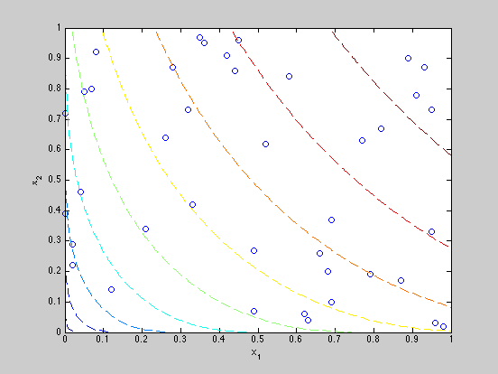
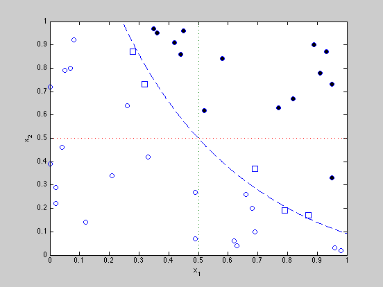

Example 6.9: Bounding consumer preference
clear
cvxq = cvx_quiet(true);
data= [...
4.5e-01 9.6e-01
2.1e-01 3.4e-01
9.6e-01 3.0e-02
8.0e-02 9.2e-01
2.0e-02 2.2e-01
0.0e+00 3.9e-01
2.6e-01 6.4e-01
3.5e-01 9.7e-01
9.1e-01 7.8e-01
1.2e-01 1.4e-01
5.8e-01 8.4e-01
4.9e-01 2.7e-01
7.0e-02 8.0e-01
9.3e-01 8.7e-01
4.4e-01 8.6e-01
3.3e-01 4.2e-01
8.9e-01 9.0e-01
4.9e-01 7.0e-02
9.5e-01 3.3e-01
6.6e-01 2.6e-01
9.5e-01 7.3e-01
4.2e-01 9.1e-01
6.8e-01 2.0e-01
5.2e-01 6.2e-01
7.7e-01 6.3e-01
2.0e-02 2.9e-01
9.8e-01 2.0e-02
5.0e-02 7.9e-01
7.9e-01 1.9e-01
6.2e-01 6.0e-02
2.8e-01 8.7e-01
6.9e-01 1.0e-01
6.9e-01 3.7e-01
0.0e+00 7.2e-01
8.7e-01 1.7e-01
6.3e-01 4.0e-02
3.2e-01 7.3e-01
4.0e-02 4.6e-01
3.6e-01 9.5e-01
8.2e-01 6.7e-01 ];
obj=[0.5,0.5];
figure(1);
plot(data(:,1),data(:,2),'o');
hold on;
[X,Y] = meshgrid(0:.01:1,0:.01:1);
Z=(1.1*X.^(1/2)+0.8*Y.^(1/2))/1.9;
[C,h] = contour(X,Y,Z,[.1,.2,.3,.4,.5,.6,.7,.8,.9],'--');
clear X Y Z C
hold off;
xlabel('x_1');
ylabel('x_2');
hold off
m = size(data,1);
Pweak = zeros(m+1,m+1);
for i=1:m,
for j=1:m
if (i~=j) & (1.1*data(i,1).^(1/2)+0.8*data(i,2).^(1/2))/1.9 >= ...
(1.1*data(j,1).^(1/2)+0.8*data(j,2).^(1/2))/1.9,
Pweak(i,j) = 1;
end;
end;
end;
data = [data; 0.5 0.5];
bounds = zeros(m,2);
for k = 1:m
fprintf(1,'Deciding on bundle %d of %d\n',k,m);
cvx_begin
variables u(m+1) g_x(m+1) g_y(m+1)
minimize(u(k)-u(m+1))
subject to
g_x >= 0;
g_y >= 0;
ones(m+1,1)*u' <= u*ones(1,m+1)+(g_x*ones(1,m+1)).*...
(ones(m+1,1)*data(:,1)'-data(:,1)*ones(1,m+1))+...
(g_y*ones(1,m+1)).*(ones(m+1,1)*data(:,2)'-data(:,2)*ones(1,m+1));
(u*ones(1,m+1)).*Pweak >= (ones(m+1,1)*u').*Pweak;
cvx_end
bounds(k,1) = cvx_optval;
cvx_begin
variables u(m+1) g_x(m+1) g_y(m+1)
maximize(u(k)-u(m+1))
subject to
g_x >= 0;
g_y >= 0;
ones(m+1,1)*u' <= u*ones(1,m+1) + (g_x*ones(1,m+1)).*...
(ones(m+1,1)*data(:,1)'-data(:,1)*ones(1,m+1))+...
(g_y*ones(1,m+1)).*(ones(m+1,1)*data(:,2)'-data(:,2)*ones(1,m+1));
(u*ones(1,m+1)).*Pweak >= (ones(m+1,1)*u').*Pweak;
cvx_end
bounds(k,2) = cvx_optval;
end
figure(2);
hold off
val = 1.1*sqrt(0.5)+ 0.8*sqrt(.5);
t = linspace(((val-.8)/1.1)^2, 1, 1000);
y = ( (val - 1.1*(t.^(1/2)))/.8 ).^2;
plot(t,y,'--', [.5 .5], [0 1], ':', [0 1], [.5 .5], ':');
axis([0 1 0 1]);
hold on
for k=1:m
if bounds(k,2) < 1e-5,
dot = plot(data(k,1),data(k,2),'o');
elseif bounds(k,1) > -1e-5,
dot = plot(data(k,1),data(k,2),'o','MarkerFaceColor',[0 0 0]);
else
dot = plot(data(k,1),data(k,2),'square', 'LineWidth',1.0,...
'MarkerSize',10);
end;
end;
xlabel('x_1'); ylabel('x_2');
cvx_quiet(cvxq);
Deciding on bundle 1 of 40
Calling SDPT3: 2540 variables, 2420 equality constraints
------------------------------------------------------------
num. of constraints = 2420
dim. of linear var = 2499
dim. of free var = 41 *** convert ublk to lblk
*******************************************************************
SDPT3: Infeasible path-following algorithms
*******************************************************************
version predcorr gam expon scale_data
NT 1 0.000 1 0
it pstep dstep pinfeas dinfeas gap mean(obj) cputime
-------------------------------------------------------------------
0|0.000|0.000|2.7e+03|8.7e+02|6.8e+06| 4.301775e-09| 0:0:01| spchol 1 1
1|0.606|0.569|1.1e+03|3.7e+02|3.5e+06| 5.311006e+00| 0:0:03| spchol 1 1
2|0.330|0.416|7.1e+02|2.2e+02|2.4e+06| 7.623719e+00| 0:0:04| spchol 1 1
3|0.411|0.449|4.2e+02|1.2e+02|1.6e+06| 1.108102e+01| 0:0:06| spchol 1 1
4|0.389|0.447|2.6e+02|6.7e+01|1.1e+06| 1.709713e+01| 0:0:07| spchol 1 1
5|0.613|0.401|9.9e+01|4.0e+01|8.7e+05| 2.832834e+01| 0:0:09| spchol 1 1
6|1.000|0.295|4.8e-04|2.8e+01|8.9e+05| 4.512516e+01| 0:0:11| spchol 1 1
7|1.000|0.977|3.4e-04|6.6e-01|2.1e+04| 4.512466e+01| 0:0:12| spchol 1 1
8|1.000|0.905|2.6e-05|6.3e-02|2.1e+03| 4.291438e+01| 0:0:14| spchol 1 1
9|1.000|0.689|2.5e-05|2.0e-02|9.4e+02| 4.030468e+01| 0:0:16| spchol 1 1
10|0.769|0.270|1.4e-05|1.5e-02|8.2e+02| 2.660080e+01| 0:0:17| spchol 1 1
11|0.733|0.314|7.1e-06|1.0e-02|6.8e+02| 1.915660e+01| 0:0:19| spchol 1 1
12|1.000|0.230|1.6e-06|7.7e-03|7.0e+02| 1.421709e+01| 0:0:20| spchol 1 1
13|1.000|0.668|5.7e-07|2.6e-03|2.7e+02| 6.188190e+00| 0:0:22| spchol 1 1
14|1.000|0.738|1.3e-07|6.8e-04|7.1e+01| 5.284854e-01| 0:0:23| spchol 1 1
15|0.985|0.984|1.8e-08|1.5e-05|1.5e+00| 9.229998e-03| 0:0:25| spchol 2 2
16|0.997|1.000|7.0e-08|2.0e-06|1.5e-01| 1.830796e-04| 0:0:27| spchol 3 3
17|1.000|1.000|1.7e-06|3.6e-05|2.3e-02| 1.471897e-04| 0:0:29| spchol 2 2
18|1.000|0.915|7.7e-07|1.0e-05|3.7e-03| 4.541280e-05| 0:0:30| spchol 3 3
19|1.000|0.949|2.7e-09|1.7e-06|6.4e-04| 3.520299e-06| 0:0:32| spchol 4 5
20|1.000|0.978|2.1e-07|2.8e-07|7.3e-05| 3.833136e-06| 0:0:34| spchol 7 9
21|1.000|0.979|1.1e-07|3.2e-08|2.2e-06| 4.818118e-08| 0:0:37| spchol
warning: symqmr failed: 0.3
switch to LU factor. splu 1 1
22|1.000|0.979|2.2e-11|9.2e-10|6.3e-08| 1.421604e-09| 0:0:43| splu ^ 1 * 1
sqlp stop: primal infeas has deteriorated too much, 7.4e+03
23|1.000|0.288|2.2e-11|9.2e-10|6.3e-08| 1.421604e-09| 0:0:47|
-------------------------------------------------------------------
number of iterations = 23
primal objective value = 2.84320818e-09
dual objective value = 0.00000000e+00
gap := trace(XZ) = 6.27e-08
relative gap = 6.27e-08
actual relative gap = 2.84e-09
rel. primal infeas = 2.17e-11
rel. dual infeas = 9.21e-10
norm(X), norm(y), norm(Z) = 1.7e+03, 1.9e+00, 1.9e+00
norm(A), norm(b), norm(C) = 1.1e+02, 1.0e+00, 3.0e+00
Total CPU time (secs) = 46.5
CPU time per iteration = 2.0
termination code = -7
DIMACS: 2.2e-11 0.0e+00 1.4e-09 0.0e+00 2.8e-09 6.3e-08
-------------------------------------------------------------------
------------------------------------------------------------
Status: Inaccurate/Solved
Optimal value (cvx_optval): +2.84321e-09
Calling SDPT3: 2540 variables, 2420 equality constraints
------------------------------------------------------------
num. of constraints = 2420
dim. of linear var = 2499
dim. of free var = 41 *** convert ublk to lblk
*******************************************************************
SDPT3: Infeasible path-following algorithms
*******************************************************************
version predcorr gam expon scale_data
NT 1 0.000 1 0
it pstep dstep pinfeas dinfeas gap mean(obj) cputime
-------------------------------------------------------------------
0|0.000|0.000|2.7e+03|8.7e+02|6.8e+06|-4.301775e-09| 0:0:01| spchol 1 1
1|0.606|0.569|1.1e+03|3.7e+02|3.5e+06|-5.322177e+00| 0:0:03| spchol 1 1
2|0.330|0.415|7.1e+02|2.2e+02|2.4e+06|-7.638029e+00| 0:0:04| spchol 1 1
3|0.411|0.449|4.2e+02|1.2e+02|1.6e+06|-1.109906e+01| 0:0:06| spchol 1 1
4|0.389|0.447|2.6e+02|6.7e+01|1.1e+06|-1.711623e+01| 0:0:07| spchol 1 1
5|0.613|0.401|9.9e+01|4.0e+01|8.7e+05|-2.836031e+01| 0:0:09| spchol 1 1
6|1.000|0.295|4.8e-04|2.8e+01|8.9e+05|-4.521759e+01| 0:0:11| spchol 1 1
7|1.000|0.976|3.4e-04|6.7e-01|2.1e+04|-4.533299e+01| 0:0:12| spchol 1 1
8|1.000|0.849|2.6e-05|1.0e-01|3.2e+03|-4.842265e+01| 0:0:14| spchol 1 1
9|0.537|0.035|2.8e-05|1.0e-01|4.4e+03|-7.833747e+01| 0:0:15| spchol 1 1
10|1.000|0.488|1.8e-05|5.3e-02|3.3e+03|-1.323120e+02| 0:0:17| spchol 1 1
11|1.000|0.394|1.2e-05|3.2e-02|3.3e+03|-2.784879e+02| 0:0:18| spchol 1 1
12|0.970|0.215|4.9e-06|2.5e-02|4.7e+03|-6.527522e+02| 0:0:20| spchol 1 1
13|1.000|0.356|1.9e-06|1.6e-02|5.5e+03|-1.593469e+03| 0:0:22| spchol 1 1
14|0.310|0.323|1.5e-06|1.1e-02|4.4e+03|-2.964022e+03| 0:0:23| spchol 1 1
15|0.188|0.118|1.8e-06|1.1e-02|6.9e+03|-7.093104e+03| 0:0:25| spchol 1 1
16|0.160|0.129|1.3e-06|1.1e-02|1.2e+04|-2.018062e+04| 0:0:27| spchol 1 1
17|0.040|0.061|1.4e-06|1.3e-02|1.9e+04|-3.841135e+04| 0:0:28| spchol 1 1
18|0.128|0.084|1.3e-06|1.6e-02|7.1e+04|-1.704824e+05| 0:0:30| spchol 1 2
19|0.029|0.035|1.2e-06|2.2e-02|1.8e+05|-3.385286e+05| 0:0:31| spchol 1 1
20|1.000|0.057|9.8e-05|3.0e-02|5.3e+06|-8.236189e+06| 0:0:33| spchol 2 2
21|0.053|0.027|1.2e-04|4.1e-02|1.4e+07|-1.527847e+07| 0:0:35| spchol 2 2
22|0.029|0.019|1.8e-04|5.6e-02|2.6e+07|-1.955829e+07| 0:0:36| spchol 2 2
23|0.679|0.024|2.7e-03|7.5e-02|1.8e+08|-9.795036e+07| 0:0:38| spchol 2 2
24|0.534|0.085|7.5e-03|9.5e-02|6.9e+08|-3.030958e+08| 0:0:40| spchol 2 2
25|0.159|0.045|7.3e-03|1.3e-01|1.4e+09|-4.685236e+08| 0:0:42| spchol 2 2
26|0.068|0.099|7.2e-03|1.6e-01|2.0e+09|-5.568175e+08| 0:0:43| spchol 2 2
27|0.077|0.055|6.8e-03|2.1e-01|3.1e+09|-6.531559e+08| 0:0:45| spchol 2 2
28|0.068|0.103|6.6e-03|2.6e-01|4.3e+09|-7.232793e+08| 0:0:47| spchol 2 2
29|0.195|0.167|6.0e-03|3.0e-01|6.1e+09|-8.832993e+08| 0:0:48| spchol 2 2
30|0.366|0.166|6.4e-03|3.5e-01|1.0e+10|-1.203702e+09| 0:0:50| spchol 2 2
31|0.112|0.089|6.3e-03|4.4e-01|1.4e+10|-1.334037e+09| 0:0:52|
sqlp stop: dual problem is suspected of being infeasible
-------------------------------------------------------------------
number of iterations = 31
residual of dual infeasibility
certificate X = 2.37e-12
reldist to infeas. <= 1.89e-16
Total CPU time (secs) = 51.6
CPU time per iteration = 1.7
termination code = 2
DIMACS: 6.3e-03 0.0e+00 6.6e-01 0.0e+00 -1.0e+00 5.4e+00
-------------------------------------------------------------------
------------------------------------------------------------
Status: Unbounded
Optimal value (cvx_optval): +Inf
Deciding on bundle 2 of 40
Calling SDPT3: 2540 variables, 2420 equality constraints
------------------------------------------------------------
num. of constraints = 2420
dim. of linear var = 2499
dim. of free var = 41 *** convert ublk to lblk
*******************************************************************
SDPT3: Infeasible path-following algorithms
*******************************************************************
version predcorr gam expon scale_data
NT 1 0.000 1 0
it pstep dstep pinfeas dinfeas gap mean(obj) cputime
-------------------------------------------------------------------
0|0.000|0.000|2.7e+03|8.7e+02|6.8e+06|-1.358792e-09| 0:0:01| spchol 1 1
1|0.606|0.569|1.1e+03|3.7e+02|3.5e+06|-2.211199e+01| 0:0:03| spchol 1 1
2|0.330|0.415|7.1e+02|2.2e+02|2.4e+06|-3.082691e+01| 0:0:04| spchol 1 1
3|0.411|0.449|4.2e+02|1.2e+02|1.6e+06|-4.009326e+01| 0:0:06| spchol 1 1
4|0.389|0.447|2.6e+02|6.7e+01|1.1e+06|-5.184489e+01| 0:0:07| spchol 1 1
5|0.613|0.401|9.9e+01|4.0e+01|8.7e+05|-7.446128e+01| 0:0:09| spchol 1 1
6|1.000|0.295|4.8e-04|2.8e+01|8.9e+05|-1.122517e+02| 0:0:11| spchol 1 1
7|1.000|0.976|3.4e-04|6.6e-01|2.1e+04|-1.124975e+02| 0:0:12| spchol 1 1
8|1.000|0.884|2.6e-05|7.7e-02|2.3e+03|-1.175893e+02| 0:0:14| spchol 1 1
9|0.542|0.107|2.6e-05|7.2e-02|2.9e+03|-1.850877e+02| 0:0:15| spchol 1 1
10|1.000|0.332|2.0e-05|4.8e-02|3.1e+03|-3.526533e+02| 0:0:17| spchol 1 1
11|1.000|0.480|1.3e-05|2.5e-02|2.5e+03|-7.710837e+02| 0:0:18| spchol 1 1
12|0.276|0.162|1.0e-05|2.3e-02|3.1e+03|-1.411520e+03| 0:0:20| spchol 1 1
13|0.660|0.133|4.4e-06|2.3e-02|7.6e+03|-4.886953e+03| 0:0:21| spchol 1 1
14|0.103|0.195|4.0e-06|2.3e-02|6.9e+03|-7.437314e+03| 0:0:23| spchol 1 1
15|0.186|0.107|3.3e-06|2.8e-02|1.5e+04|-2.229871e+04| 0:0:25| spchol 1 1
16|0.036|0.042|3.2e-06|3.7e-02|2.5e+04|-3.530459e+04| 0:0:26| spchol 1 1
17|0.147|0.033|2.7e-06|5.0e-02|9.2e+04|-1.172669e+05| 0:0:28| spchol 1 1
18|1.000|0.120|3.9e-06|6.5e-02|1.1e+06|-1.576281e+06| 0:0:29| spchol 1 1
19|1.000|0.105|3.9e-05|8.6e-02|1.8e+07|-2.438308e+07| 0:0:31| spchol 2 2
20|1.000|0.082|1.8e-03|1.2e-01|3.3e+08|-3.325471e+08| 0:0:32| spchol 2 2
21|1.000|0.025|3.6e-02|1.6e-01|5.1e+09|-3.297878e+09| 0:0:34| spchol 2 2
22|1.000|0.090|2.3e-01|2.1e-01|4.0e+10|-1.976950e+10| 0:0:36| spchol 2 2
23|0.080|0.092|2.3e-01|2.7e-01|6.8e+10|-2.584602e+10| 0:0:38| spchol 2 2
24|0.222|0.036|3.7e-01|3.7e-01|1.6e+11|-4.215637e+10| 0:0:39| spchol 2 2
25|0.063|0.032|5.5e-01|4.9e-01|2.5e+11|-4.663012e+10| 0:0:41| spchol 2 2
26|0.143|0.065|5.4e-01|6.3e-01|3.9e+11|-5.626996e+10| 0:0:43| spchol 2 2
27|0.162|0.043|5.8e-01|8.2e-01|6.4e+11|-6.734660e+10| 0:0:44| spchol 2 2
28|0.107|0.071|6.0e-01|1.0e+00|9.1e+11|-7.396629e+10| 0:0:46| spchol 2 2
29|0.105|0.081|7.1e-01|1.3e+00|1.3e+12|-8.021461e+10| 0:0:48| spchol 2 2
30|0.299|0.151|5.3e-01|1.5e+00|1.8e+12|-9.392520e+10| 0:0:49| spchol 2 2
31|0.358|0.154|3.3e-01|1.8e+00|2.7e+12|-1.131345e+11| 0:0:51|
sqlp stop: dual problem is suspected of being infeasible
-------------------------------------------------------------------
number of iterations = 31
residual of dual infeasibility
certificate X = 1.45e-12
reldist to infeas. <= 9.44e-17
Total CPU time (secs) = 51.0
CPU time per iteration = 1.6
termination code = 2
DIMACS: 3.3e-01 0.0e+00 2.7e+00 0.0e+00 -1.0e+00 1.2e+01
-------------------------------------------------------------------
------------------------------------------------------------
Status: Unbounded
Optimal value (cvx_optval): -Inf
Calling SDPT3: 2540 variables, 2420 equality constraints
------------------------------------------------------------
num. of constraints = 2420
dim. of linear var = 2499
dim. of free var = 41 *** convert ublk to lblk
*******************************************************************
SDPT3: Infeasible path-following algorithms
*******************************************************************
version predcorr gam expon scale_data
NT 1 0.000 1 0
it pstep dstep pinfeas dinfeas gap mean(obj) cputime
-------------------------------------------------------------------
0|0.000|0.000|2.7e+03|8.7e+02|6.8e+06| 1.358792e-09| 0:0:01| spchol 1 1
1|0.606|0.569|1.1e+03|3.7e+02|3.5e+06| 2.209949e+01| 0:0:03| spchol 1 1
2|0.330|0.416|7.1e+02|2.2e+02|2.4e+06| 3.081793e+01| 0:0:04| spchol 1 1
3|0.411|0.449|4.2e+02|1.2e+02|1.6e+06| 4.007670e+01| 0:0:06| spchol 1 1
4|0.389|0.446|2.6e+02|6.7e+01|1.1e+06| 5.182583e+01| 0:0:07| spchol 1 1
5|0.613|0.401|9.9e+01|4.0e+01|8.7e+05| 7.441029e+01| 0:0:09| spchol 1 1
6|1.000|0.295|4.8e-04|2.8e+01|8.9e+05| 1.120827e+02| 0:0:11| spchol 1 1
7|1.000|0.976|3.4e-04|6.6e-01|2.1e+04| 1.121177e+02| 0:0:12| spchol 1 1
8|1.000|0.887|2.6e-05|7.6e-02|2.6e+03| 1.083268e+02| 0:0:14| spchol 1 1
9|0.611|0.153|2.3e-05|6.7e-02|2.8e+03| 1.273184e+02| 0:0:15| spchol 1 1
10|1.000|0.381|1.4e-05|4.1e-02|2.3e+03| 1.474453e+02| 0:0:17| spchol 1 1
11|1.000|0.355|6.4e-06|2.7e-02|1.7e+03| 1.450436e+02| 0:0:18| spchol 1 1
12|1.000|0.248|2.4e-06|2.0e-02|1.7e+03| 1.649906e+02| 0:0:20| spchol 1 1
13|1.000|0.452|1.1e-06|1.1e-02|1.0e+03| 1.243139e+02| 0:0:22| spchol 1 1
14|1.000|0.458|3.6e-07|6.0e-03|6.5e+02| 9.698367e+01| 0:0:23| spchol 1 1
15|0.946|0.235|1.2e-07|4.6e-03|5.8e+02| 8.008729e+01| 0:0:25| spchol 1 1
16|0.564|0.505|8.0e-08|2.3e-03|3.8e+02| 7.457476e+01| 0:0:26| spchol 1 1
17|1.000|0.233|2.1e-08|1.7e-03|3.2e+02| 4.961229e+01| 0:0:28| spchol 1 1
18|1.000|0.580|2.4e-08|7.3e-04|1.8e+02| 3.595877e+01| 0:0:29| spchol 1 1
19|1.000|0.673|7.5e-08|2.4e-04|5.0e+01| 6.005500e+00| 0:0:31| spchol 1 1
20|0.992|0.965|2.6e-08|8.5e-06|1.7e+00| 1.601822e-01| 0:0:33| spchol 1 1
21|0.989|0.988|4.5e-06|1.1e-07|2.0e-02| 1.844971e-03| 0:0:34| spchol 4 4
22|0.989|0.988|1.2e-06|8.5e-06|5.3e-04| 2.046794e-05| 0:0:36| spchol 8 8
23|1.000|0.989|5.0e-07|2.2e-07|1.9e-05| 2.969359e-06| 0:0:38| spchol
linsysolve: Schur complement matrix not pos. def.
switch to LU factor. splu 1 1
24|1.000|0.978|9.1e-07|7.9e-09|5.4e-07| 7.123386e-08| 0:0:42| splu * 1 * 1
sqlp stop: primal infeas has deteriorated too much, 2.0e+05
25|1.000|0.417|9.1e-07|7.9e-09|5.4e-07| 7.123386e-08| 0:0:45|
-------------------------------------------------------------------
number of iterations = 25
primal objective value = 1.42467710e-07
dual objective value = 0.00000000e+00
gap := trace(XZ) = 5.37e-07
relative gap = 5.37e-07
actual relative gap = 1.42e-07
rel. primal infeas = 9.14e-07
rel. dual infeas = 7.94e-09
norm(X), norm(y), norm(Z) = 1.3e+05, 1.0e+00, 1.0e+00
norm(A), norm(b), norm(C) = 1.1e+02, 1.0e+00, 3.0e+00
Total CPU time (secs) = 45.4
CPU time per iteration = 1.8
termination code = -7
DIMACS: 9.1e-07 0.0e+00 1.2e-08 0.0e+00 1.4e-07 5.4e-07
-------------------------------------------------------------------
------------------------------------------------------------
Status: Inaccurate/Solved
Optimal value (cvx_optval): -1.42468e-07
Deciding on bundle 3 of 40
Calling SDPT3: 2540 variables, 2420 equality constraints
------------------------------------------------------------
num. of constraints = 2420
dim. of linear var = 2499
dim. of free var = 41 *** convert ublk to lblk
*******************************************************************
SDPT3: Infeasible path-following algorithms
*******************************************************************
version predcorr gam expon scale_data
NT 1 0.000 1 0
it pstep dstep pinfeas dinfeas gap mean(obj) cputime
-------------------------------------------------------------------
0|0.000|0.000|2.7e+03|8.7e+02|6.8e+06| 1.418961e-09| 0:0:01| spchol 1 1
1|0.606|0.569|1.1e+03|3.7e+02|3.5e+06|-1.016694e+01| 0:0:03| spchol 1 1
2|0.330|0.415|7.1e+02|2.2e+02|2.4e+06|-1.392026e+01| 0:0:04| spchol 1 1
3|0.411|0.449|4.2e+02|1.2e+02|1.6e+06|-1.750368e+01| 0:0:06| spchol 1 1
4|0.389|0.446|2.6e+02|6.7e+01|1.1e+06|-2.102853e+01| 0:0:08| spchol 1 1
5|0.613|0.401|9.9e+01|4.0e+01|8.7e+05|-2.751914e+01| 0:0:09| spchol 1 1
6|1.000|0.295|4.8e-04|2.8e+01|8.9e+05|-3.997624e+01| 0:0:11| spchol 1 1
7|1.000|0.977|3.4e-04|6.6e-01|2.1e+04|-4.008945e+01| 0:0:12| spchol 1 1
8|1.000|0.903|2.6e-05|6.4e-02|2.0e+03|-4.280862e+01| 0:0:14| spchol 1 1
9|0.553|0.510|2.3e-05|3.2e-02|1.2e+03|-7.314613e+01| 0:0:15| spchol 1 1
10|0.618|0.141|1.8e-05|2.8e-02|1.6e+03|-1.424360e+02| 0:0:17| spchol 1 1
11|0.691|0.412|1.1e-05|1.7e-02|1.3e+03|-2.562737e+02| 0:0:19| spchol 1 1
12|0.294|0.340|8.3e-06|1.1e-02|9.3e+02|-4.078695e+02| 0:0:20| spchol 1 1
13|0.181|0.079|7.1e-06|1.1e-02|1.3e+03|-6.913902e+02| 0:0:22| spchol 1 1
14|0.344|0.151|4.8e-06|1.1e-02|2.2e+03|-1.774278e+03| 0:0:23| spchol 1 1
15|0.089|0.070|4.4e-06|1.3e-02|3.1e+03|-2.915782e+03| 0:0:25| spchol 1 1
16|0.187|0.107|3.6e-06|1.5e-02|6.3e+03|-7.657055e+03| 0:0:26| spchol 1 1
17|0.209|0.095|2.8e-06|1.9e-02|1.8e+04|-2.704996e+04| 0:0:28| spchol 1 1
18|0.120|0.107|2.5e-06|2.4e-02|4.5e+04|-7.976998e+04| 0:0:30| spchol 1 1
19|0.092|0.022|4.7e-06|3.4e-02|1.7e+05|-2.305680e+05| 0:0:31| spchol 1 2
20|0.146|0.014|8.8e-06|4.7e-02|7.0e+05|-6.645209e+05| 0:0:33| spchol 1 2
21|0.056|0.044|1.0e-05|6.4e-02|1.3e+06|-9.666719e+05| 0:0:35| spchol 2 2
22|1.000|0.131|1.2e-04|8.0e-02|9.6e+06|-6.350362e+06| 0:0:36| spchol 2 2
23|0.786|0.102|5.6e-04|1.0e-01|5.9e+07|-3.119889e+07| 0:0:38| spchol 2 2
24|1.000|0.140|1.9e-03|1.3e-01|3.3e+08|-1.450085e+08| 0:0:40| spchol 2 2
25|1.000|0.155|7.0e-03|1.6e-01|1.6e+09|-5.714295e+08| 0:0:41| spchol 2 2
26|0.291|0.209|9.4e-03|1.2e-01|1.8e+09|-9.726803e+08| 0:0:43|
sqlp stop: progress is too slow spchol 2 2
27|1.000|0.120|2.3e-02|1.6e-01|1.3e+10|-4.988788e+09| 0:0:45| spchol 2 2
28|1.000|0.199|1.2e-01|1.9e-01|5.7e+10|-1.760115e+10| 0:0:46| spchol 2 2
29|1.000|0.205|4.8e-01|1.5e-01|1.2e+11|-5.335226e+10| 0:0:48| spchol 2 2
30|1.000|0.348|6.3e-01|1.0e-01|1.7e+11|-2.378967e+11| 0:0:50|
sqlp stop: progress is too slow spchol 2 2
31|0.084|0.099|1.0e+00|1.4e-01|9.5e+11|-5.800554e+11| 0:0:52|
sqlp stop: dual problem is suspected of being infeasible
-------------------------------------------------------------------
number of iterations = 31
residual of dual infeasibility
certificate X = 8.62e-13
reldist to infeas. <= 7.42e-17
Total CPU time (secs) = 51.5
CPU time per iteration = 1.7
termination code = 2
DIMACS: 1.0e+00 0.0e+00 2.1e-01 0.0e+00 -1.0e+00 8.2e-01
-------------------------------------------------------------------
------------------------------------------------------------
Status: Unbounded
Optimal value (cvx_optval): -Inf
Calling SDPT3: 2540 variables, 2420 equality constraints
------------------------------------------------------------
num. of constraints = 2420
dim. of linear var = 2499
dim. of free var = 41 *** convert ublk to lblk
*******************************************************************
SDPT3: Infeasible path-following algorithms
*******************************************************************
version predcorr gam expon scale_data
NT 1 0.000 1 0
it pstep dstep pinfeas dinfeas gap mean(obj) cputime
-------------------------------------------------------------------
0|0.000|0.000|2.7e+03|8.7e+02|6.8e+06|-1.418961e-09| 0:0:01| spchol 1 1
1|0.606|0.569|1.1e+03|3.7e+02|3.5e+06| 1.015802e+01| 0:0:03| spchol 1 1
2|0.330|0.415|7.1e+02|2.2e+02|2.4e+06| 1.390700e+01| 0:0:04| spchol 1 1
3|0.411|0.449|4.2e+02|1.2e+02|1.6e+06| 1.748546e+01| 0:0:06| spchol 1 1
4|0.389|0.447|2.6e+02|6.7e+01|1.1e+06| 2.100829e+01| 0:0:07| spchol 1 1
5|0.613|0.401|9.9e+01|4.0e+01|8.7e+05| 2.748265e+01| 0:0:09| spchol 1 1
6|1.000|0.295|4.8e-04|2.8e+01|8.9e+05| 3.987149e+01| 0:0:11| spchol 1 1
7|1.000|0.976|3.4e-04|6.9e-01|2.2e+04| 3.986324e+01| 0:0:12| spchol 1 1
8|1.000|0.722|2.6e-05|1.9e-01|6.4e+03| 3.876156e+01| 0:0:14| spchol 1 1
9|1.000|0.055|5.4e-05|1.9e-01|9.0e+03| 4.482901e+01| 0:0:15| spchol 1 1
10|1.000|0.616|2.0e-05|7.3e-02|4.6e+03| 4.634437e+01| 0:0:17| spchol 1 1
11|0.490|0.559|1.6e-05|3.2e-02|2.5e+03| 4.262148e+01| 0:0:18| spchol 1 1
12|0.572|0.165|9.8e-06|2.9e-02|2.7e+03| 3.807929e+01| 0:0:20| spchol 1 1
13|0.624|0.464|5.1e-06|1.6e-02|1.8e+03| 4.074783e+01| 0:0:21| spchol 1 1
14|0.873|0.264|1.2e-06|1.1e-02|1.7e+03| 4.087527e+01| 0:0:23| spchol 1 1
15|1.000|0.227|2.4e-07|8.9e-03|1.8e+03| 5.354948e+01| 0:0:25| spchol 1 1
16|1.000|0.503|1.0e-07|4.4e-03|1.2e+03| 6.000683e+01| 0:0:26| spchol 1 1
17|1.000|0.236|2.5e-08|3.4e-03|1.3e+03| 6.055108e+01| 0:0:28| spchol 1 1
18|1.000|0.629|2.3e-07|1.2e-03|6.1e+02| 5.044357e+01| 0:0:29| spchol 1 1
19|1.000|0.583|1.6e-07|5.2e-04|2.9e+02| 2.063359e+01| 0:0:31| spchol 1 1
20|1.000|0.788|5.3e-08|1.1e-04|7.1e+01| 5.978711e+00| 0:0:32| spchol 1 1
21|0.955|0.944|3.7e-07|6.2e-06|3.9e+00| 2.692625e-01| 0:0:34| spchol 2 2
22|0.986|0.985|5.3e-08|1.0e-07|6.3e-02| 3.913642e-03| 0:0:36| spchol 4 3
23|0.989|0.988|7.8e-06|2.6e-05|1.6e-03| 4.346016e-05| 0:0:38| spchol 7 9
24|1.000|0.967|1.1e-05|6.6e-07|5.5e-05| 2.696662e-06| 0:0:40| spchol
linsysolve: Schur complement matrix not pos. def.
switch to LU factor. splu ^ 4 ^ 3
sqlp stop: primal infeas has deteriorated too much, 8.1e+05
25|1.000|0.365|1.1e-05|6.6e-07|5.5e-05| 2.696662e-06| 0:0:43|
-------------------------------------------------------------------
number of iterations = 25
primal objective value = 5.39332465e-06
dual objective value = 0.00000000e+00
gap := trace(XZ) = 5.53e-05
relative gap = 5.53e-05
actual relative gap = 5.39e-06
rel. primal infeas = 1.09e-05
rel. dual infeas = 6.61e-07
norm(X), norm(y), norm(Z) = 3.5e+05, 1.4e+00, 1.4e+00
norm(A), norm(b), norm(C) = 1.1e+02, 1.0e+00, 3.0e+00
Total CPU time (secs) = 43.1
CPU time per iteration = 1.7
termination code = -7
DIMACS: 1.1e-05 0.0e+00 9.9e-07 0.0e+00 5.4e-06 5.5e-05
-------------------------------------------------------------------
------------------------------------------------------------
Status: Inaccurate/Solved
Optimal value (cvx_optval): -5.39332e-06
Deciding on bundle 4 of 40
Calling SDPT3: 2540 variables, 2420 equality constraints
------------------------------------------------------------
num. of constraints = 2420
dim. of linear var = 2499
dim. of free var = 41 *** convert ublk to lblk
*******************************************************************
SDPT3: Infeasible path-following algorithms
*******************************************************************
version predcorr gam expon scale_data
NT 1 0.000 1 0
it pstep dstep pinfeas dinfeas gap mean(obj) cputime
-------------------------------------------------------------------
0|0.000|0.000|2.7e+03|8.7e+02|6.8e+06|-9.310668e-10| 0:0:01| spchol 1 1
1|0.606|0.569|1.1e+03|3.7e+02|3.5e+06|-1.535004e+01| 0:0:03| spchol 1 1
2|0.330|0.416|7.1e+02|2.2e+02|2.4e+06|-2.413073e+01| 0:0:04| spchol 1 1
3|0.411|0.449|4.2e+02|1.2e+02|1.6e+06|-3.619385e+01| 0:0:06| spchol 1 1
4|0.389|0.446|2.6e+02|6.7e+01|1.1e+06|-4.507583e+01| 0:0:07| spchol 1 1
5|0.613|0.401|9.9e+01|4.0e+01|8.7e+05|-6.080611e+01| 0:0:09| spchol 1 1
6|1.000|0.295|4.8e-04|2.8e+01|8.9e+05|-8.867837e+01| 0:0:11| spchol 1 1
7|1.000|0.976|3.4e-04|6.6e-01|2.1e+04|-8.887140e+01| 0:0:12| spchol 1 1
8|1.000|0.888|2.6e-05|7.5e-02|2.2e+03|-9.276114e+01| 0:0:14| spchol 1 1
9|0.496|0.120|2.5e-05|6.9e-02|2.7e+03|-1.392640e+02| 0:0:15| spchol 1 1
10|0.937|0.323|1.7e-05|4.7e-02|2.8e+03|-2.466227e+02| 0:0:17| spchol 1 1
11|0.859|0.457|1.3e-05|2.5e-02|2.1e+03|-4.490987e+02| 0:0:18| spchol 1 1
12|0.465|0.193|8.4e-06|2.2e-02|2.7e+03|-8.556701e+02| 0:0:20| spchol 1 1
13|0.328|0.206|6.1e-06|1.8e-02|3.0e+03|-1.530308e+03| 0:0:21| spchol 1 1
14|0.602|0.070|2.8e-06|1.9e-02|8.9e+03|-5.358253e+03| 0:0:23| spchol 1 1
15|0.132|0.049|2.5e-06|2.2e-02|1.4e+04|-8.664651e+03| 0:0:25| spchol 1 1
16|0.087|0.162|2.3e-06|2.4e-02|1.3e+04|-1.231555e+04| 0:0:26| spchol 1 1
17|0.153|0.199|1.9e-06|2.8e-02|1.7e+04|-2.863755e+04| 0:0:28| spchol 1 1
18|0.029|0.035|2.2e-06|3.9e-02|3.2e+04|-4.568239e+04| 0:0:29| spchol 1 1
19|0.178|0.063|2.2e-06|5.4e-02|1.4e+05|-1.800476e+05| 0:0:31| spchol 1 1
20|0.102|0.071|2.4e-06|7.2e-02|3.8e+05|-4.228764e+05| 0:0:32| spchol 1 1
21|0.183|0.063|3.5e-06|9.8e-02|1.4e+06|-1.192302e+06| 0:0:34| spchol 1 1
22|1.000|0.048|5.4e-05|1.3e-01|1.5e+07|-9.509194e+06| 0:0:36| spchol 2 2
23|0.847|0.173|4.2e-04|1.6e-01|8.1e+07|-4.582291e+07| 0:0:37| spchol 2 2
24|1.000|0.254|2.0e-03|1.2e-01|1.8e+08|-2.277828e+08| 0:0:39|
sqlp stop: progress is too slow spchol 2 2
25|1.000|0.104|5.7e-03|1.6e-01|4.0e+09|-3.006190e+09| 0:0:41| spchol 2 2
26|1.000|0.027|4.5e-01|2.3e-01|4.8e+10|-2.015846e+10| 0:0:43| spchol 2 2
27|0.188|0.065|5.1e-01|3.1e-01|1.1e+11|-3.152973e+10| 0:0:44| spchol 2 2
28|0.390|0.062|6.9e-01|4.1e-01|2.9e+11|-5.617018e+10| 0:0:46| spchol 2 2
29|0.249|0.093|5.8e-01|5.2e-01|5.1e+11|-7.427938e+10| 0:0:48| spchol 2 2
30|0.075|0.089|5.5e-01|6.6e-01|7.3e+11|-8.034102e+10| 0:0:49| spchol 2 2
31|0.262|0.131|6.1e-01|7.9e-01|1.1e+12|-9.693008e+10| 0:0:51|
sqlp stop: dual problem is suspected of being infeasible
-------------------------------------------------------------------
number of iterations = 31
residual of dual infeasibility
certificate X = 3.17e-12
reldist to infeas. <= 3.40e-16
Total CPU time (secs) = 51.0
CPU time per iteration = 1.6
termination code = 2
DIMACS: 6.1e-01 0.0e+00 1.2e+00 0.0e+00 -1.0e+00 5.7e+00
-------------------------------------------------------------------
------------------------------------------------------------
Status: Unbounded
Optimal value (cvx_optval): -Inf
Calling SDPT3: 2540 variables, 2420 equality constraints
------------------------------------------------------------
num. of constraints = 2420
dim. of linear var = 2499
dim. of free var = 41 *** convert ublk to lblk
*******************************************************************
SDPT3: Infeasible path-following algorithms
*******************************************************************
version predcorr gam expon scale_data
NT 1 0.000 1 0
it pstep dstep pinfeas dinfeas gap mean(obj) cputime
-------------------------------------------------------------------
0|0.000|0.000|2.7e+03|8.7e+02|6.8e+06| 9.310668e-10| 0:0:01| spchol 1 1
1|0.606|0.569|1.1e+03|3.7e+02|3.5e+06| 1.533661e+01| 0:0:03| spchol 1 1
2|0.330|0.415|7.1e+02|2.2e+02|2.4e+06| 2.411089e+01| 0:0:04| spchol 1 1
3|0.411|0.449|4.2e+02|1.2e+02|1.6e+06| 3.618190e+01| 0:0:06| spchol 1 1
4|0.389|0.447|2.6e+02|6.7e+01|1.1e+06| 4.505319e+01| 0:0:08| spchol 1 1
5|0.613|0.401|9.9e+01|4.0e+01|8.7e+05| 6.075404e+01| 0:0:09| spchol 1 1
6|1.000|0.295|4.8e-04|2.8e+01|8.9e+05| 8.855885e+01| 0:0:11| spchol 1 1
7|1.000|0.976|3.4e-04|6.6e-01|2.1e+04| 8.858766e+01| 0:0:12| spchol 1 1
8|1.000|0.881|2.6e-05|7.9e-02|2.7e+03| 8.568407e+01| 0:0:14| spchol 1 1
9|0.591|0.105|2.3e-05|7.4e-02|3.1e+03| 9.962328e+01| 0:0:15| spchol 1 1
10|0.931|0.291|1.3e-05|5.2e-02|3.4e+03| 1.267073e+02| 0:0:17| spchol 1 1
11|0.798|0.286|9.5e-06|3.7e-02|3.2e+03| 1.450147e+02| 0:0:19| spchol 1 1
12|0.400|0.320|7.3e-06|2.5e-02|2.6e+03| 1.434276e+02| 0:0:20| spchol 1 1
13|0.301|0.190|5.7e-06|2.2e-02|2.4e+03| 1.423637e+02| 0:0:22| spchol 1 1
14|0.641|0.293|2.5e-06|1.6e-02|2.1e+03| 1.616677e+02| 0:0:23| spchol 1 1
15|1.000|0.219|2.8e-07|1.2e-02|2.2e+03| 1.743990e+02| 0:0:25| spchol 1 1
16|1.000|0.377|1.2e-07|7.6e-03|1.8e+03| 1.618510e+02| 0:0:26| spchol 1 1
17|1.000|0.335|4.1e-08|5.0e-03|1.5e+03| 1.398009e+02| 0:0:28| spchol 1 1
18|1.000|0.490|2.0e-07|2.6e-03|1.0e+03| 1.159337e+02| 0:0:29| spchol 1 1
19|1.000|0.366|9.1e-08|1.6e-03|8.1e+02| 8.365223e+01| 0:0:31| spchol 1 1
20|1.000|0.594|1.5e-07|6.6e-04|4.5e+02| 6.016666e+01| 0:0:33| spchol 1 1
21|1.000|0.693|3.5e-07|2.0e-04|1.7e+02| 2.671160e+01| 0:0:34| spchol 1 1
22|1.000|0.834|3.3e-07|3.4e-05|2.3e+01| 1.351516e+00| 0:0:36| spchol 1 1
23|0.985|0.984|9.3e-08|5.8e-07|4.0e-01| 2.138823e-02| 0:0:37| spchol 2 2
24|0.989|0.989|7.3e-08|7.1e-09|4.9e-03| 2.371265e-04| 0:0:39| spchol
linsysolve: Schur complement matrix not pos. def.
switch to LU factor. splu 1 1
25|0.989|0.989|2.0e-07|2.0e-06|1.1e-04| 2.655436e-06| 0:0:42| splu ^ 3 ^ 2
sqlp stop: primal infeas has deteriorated too much, 9.2e+05
26|1.000|0.386|2.0e-07|2.0e-06|1.1e-04| 2.655436e-06| 0:0:45|
-------------------------------------------------------------------
number of iterations = 26
primal objective value = 5.31087258e-06
dual objective value = 0.00000000e+00
gap := trace(XZ) = 1.13e-04
relative gap = 1.13e-04
actual relative gap = 5.31e-06
rel. primal infeas = 1.96e-07
rel. dual infeas = 2.02e-06
norm(X), norm(y), norm(Z) = 4.8e+05, 1.0e+00, 1.0e+00
norm(A), norm(b), norm(C) = 1.1e+02, 1.0e+00, 3.0e+00
Total CPU time (secs) = 44.6
CPU time per iteration = 1.7
termination code = -7
DIMACS: 2.0e-07 0.0e+00 3.0e-06 0.0e+00 5.3e-06 1.1e-04
-------------------------------------------------------------------
------------------------------------------------------------
Status: Inaccurate/Solved
Optimal value (cvx_optval): -5.31087e-06
Deciding on bundle 5 of 40
Calling SDPT3: 2540 variables, 2420 equality constraints
------------------------------------------------------------
num. of constraints = 2420
dim. of linear var = 2499
dim. of free var = 41 *** convert ublk to lblk
*******************************************************************
SDPT3: Infeasible path-following algorithms
*******************************************************************
version predcorr gam expon scale_data
NT 1 0.000 1 0
it pstep dstep pinfeas dinfeas gap mean(obj) cputime
-------------------------------------------------------------------
0|0.000|0.000|2.7e+03|8.7e+02|6.8e+06| 2.079560e-09| 0:0:01| spchol 1 1
1|0.606|0.569|1.1e+03|3.7e+02|3.5e+06|-3.695242e+01| 0:0:03| spchol 1 1
2|0.330|0.415|7.1e+02|2.2e+02|2.4e+06|-5.481407e+01| 0:0:04| spchol 1 1
3|0.411|0.449|4.2e+02|1.2e+02|1.6e+06|-7.250311e+01| 0:0:06| spchol 1 1
4|0.389|0.446|2.6e+02|6.7e+01|1.1e+06|-9.464801e+01| 0:0:07| spchol 1 1
5|0.613|0.401|9.9e+01|4.0e+01|8.7e+05|-1.365364e+02| 0:0:09| spchol 1 1
6|1.000|0.295|4.8e-04|2.8e+01|8.9e+05|-2.063861e+02| 0:0:10| spchol 1 1
7|1.000|0.976|3.4e-04|6.7e-01|2.1e+04|-2.069512e+02| 0:0:12| spchol 1 1
8|1.000|0.871|2.6e-05|8.6e-02|2.4e+03|-2.217074e+02| 0:0:14| spchol 1 1
9|0.445|0.079|2.6e-05|8.3e-02|3.3e+03|-3.656269e+02| 0:0:15| spchol 1 1
10|0.758|0.305|2.1e-05|5.8e-02|3.6e+03|-7.205435e+02| 0:0:17| spchol 1 1
11|0.593|0.452|1.8e-05|3.2e-02|2.4e+03|-1.465726e+03| 0:0:18| spchol 1 1
12|0.209|0.146|1.5e-05|3.0e-02|3.3e+03|-3.170854e+03| 0:0:20| spchol 1 1
13|0.119|0.099|1.3e-05|3.1e-02|5.1e+03|-6.618568e+03| 0:0:21| spchol 1 1
14|0.103|0.041|1.2e-05|3.7e-02|1.1e+04|-1.595775e+04| 0:0:23| spchol 1 1
15|0.040|0.046|1.1e-05|4.7e-02|1.7e+04|-2.621002e+04| 0:0:24| spchol 1 1
16|0.015|0.065|1.1e-05|6.0e-02|2.0e+04|-3.329527e+04| 0:0:26| spchol 1 1
17|0.077|0.007|1.0e-05|8.2e-02|6.3e+04|-8.821401e+04| 0:0:28| spchol 1 1
18|0.050|0.006|9.8e-06|1.1e-01|1.4e+05|-1.557687e+05| 0:0:29| spchol 1 1
19|0.102|0.031|8.8e-06|1.5e-01|3.5e+05|-3.292354e+05| 0:0:31| spchol 1 1
20|0.020|0.017|9.2e-06|2.0e-01|5.2e+05|-3.903520e+05| 0:0:32| spchol 1 1
21|0.117|0.075|8.2e-06|2.6e-01|1.1e+06|-7.234066e+05| 0:0:34| spchol 1 1
22|0.055|0.055|8.0e-06|3.4e-01|1.8e+06|-1.004172e+06| 0:0:35| spchol 1 2
23|0.008|0.019|7.8e-06|4.6e-01|2.5e+06|-1.047531e+06| 0:0:37| spchol 1 1
24|0.080|0.020|1.2e-05|6.1e-01|4.3e+06|-1.404995e+06| 0:0:39| spchol 2 1
25|0.195|0.048|1.2e-05|7.9e-01|8.5e+06|-2.259042e+06| 0:0:40| spchol 1 1
26|0.088|0.040|1.1e-05|1.0e+00|1.4e+07|-2.786909e+06| 0:0:42| spchol 1 2
27|0.033|0.032|1.8e-05|1.4e+00|1.9e+07|-2.970949e+06| 0:0:43| spchol 1 2
28|0.075|0.047|1.8e-05|1.8e+00|2.8e+07|-3.373207e+06| 0:0:45| spchol 1 2
29|0.089|0.073|1.7e-05|2.3e+00|3.9e+07|-3.797520e+06| 0:0:47| spchol 1 1
30|0.296|0.105|2.0e-05|2.8e+00|6.2e+07|-5.213599e+06| 0:0:48| spchol 1 1
31|0.132|0.111|1.7e-05|3.4e+00|8.1e+07|-5.931815e+06| 0:0:50|
sqlp stop: dual problem is suspected of being infeasible
-------------------------------------------------------------------
number of iterations = 31
residual of dual infeasibility
certificate X = 1.43e-12
reldist to infeas. <= 1.76e-16
Total CPU time (secs) = 49.6
CPU time per iteration = 1.6
termination code = 2
DIMACS: 1.7e-05 0.0e+00 5.0e+00 0.0e+00 -1.0e+00 6.8e+00
-------------------------------------------------------------------
------------------------------------------------------------
Status: Unbounded
Optimal value (cvx_optval): -Inf
Calling SDPT3: 2540 variables, 2420 equality constraints
------------------------------------------------------------
num. of constraints = 2420
dim. of linear var = 2499
dim. of free var = 41 *** convert ublk to lblk
*******************************************************************
SDPT3: Infeasible path-following algorithms
*******************************************************************
version predcorr gam expon scale_data
NT 1 0.000 1 0
it pstep dstep pinfeas dinfeas gap mean(obj) cputime
-------------------------------------------------------------------
0|0.000|0.000|2.7e+03|8.7e+02|6.8e+06|-2.079560e-09| 0:0:01| spchol 1 1
1|0.606|0.569|1.1e+03|3.7e+02|3.5e+06| 3.693656e+01| 0:0:03| spchol 1 1
2|0.330|0.416|7.1e+02|2.2e+02|2.4e+06| 5.479817e+01| 0:0:04| spchol 1 1
3|0.411|0.449|4.2e+02|1.2e+02|1.6e+06| 7.248032e+01| 0:0:06| spchol 1 1
4|0.389|0.447|2.6e+02|6.7e+01|1.1e+06| 9.460739e+01| 0:0:07| spchol 1 1
5|0.613|0.401|9.9e+01|4.0e+01|8.7e+05| 1.364818e+02| 0:0:09| spchol 1 1
6|1.000|0.295|4.8e-04|2.8e+01|8.9e+05| 2.059067e+02| 0:0:10| spchol 1 1
7|1.000|0.976|3.4e-04|6.7e-01|2.2e+04| 2.058713e+02| 0:0:12| spchol 1 1
8|1.000|0.893|2.6e-05|7.2e-02|2.6e+03| 1.954057e+02| 0:0:14| spchol 1 1
9|0.653|0.064|2.2e-05|7.0e-02|3.0e+03| 2.147298e+02| 0:0:15| spchol 1 1
10|1.000|0.410|1.1e-05|4.2e-02|2.3e+03| 2.395353e+02| 0:0:17| spchol 1 1
11|0.992|0.537|4.7e-06|1.9e-02|1.3e+03| 2.219764e+02| 0:0:18| spchol 1 1
12|0.969|0.196|1.4e-06|1.6e-02|1.2e+03| 2.127302e+02| 0:0:20| spchol 1 1
13|0.421|0.496|1.0e-06|8.3e-03|8.3e+02| 2.065349e+02| 0:0:21| spchol 1 1
14|1.000|0.220|1.7e-07|6.5e-03|6.5e+02| 1.605242e+02| 0:0:23| spchol 1 1
15|1.000|0.313|6.8e-08|4.5e-03|4.8e+02| 1.274171e+02| 0:0:24| spchol 1 1
16|0.708|0.466|3.5e-08|2.4e-03|3.2e+02| 9.803911e+01| 0:0:26| spchol 1 1
17|0.942|0.223|1.9e-08|1.9e-03|2.5e+02| 7.426578e+01| 0:0:28| spchol 1 1
18|1.000|0.423|4.9e-09|1.1e-03|1.5e+02| 4.483498e+01| 0:0:29| spchol 1 1
19|1.000|0.350|9.8e-09|7.0e-04|9.3e+01| 2.558089e+01| 0:0:31| spchol 1 1
20|1.000|0.557|1.7e-08|3.1e-04|3.5e+01| 8.146480e+00| 0:0:32| spchol 1 1
21|1.000|0.687|1.4e-08|9.6e-05|7.8e+00| 1.021967e+00| 0:0:34| spchol 1 1
22|0.991|0.930|4.8e-09|6.8e-06|4.6e-01| 2.802399e-02| 0:0:35| spchol 1 1
23|0.988|0.988|9.8e-08|8.5e-08|5.7e-03| 3.398182e-04| 0:0:37| spchol 3 3
24|0.989|0.989|2.2e-08|2.4e-06|1.2e-04| 3.746405e-06| 0:0:39| spchol 4 3
25|1.000|0.987|3.8e-06|5.3e-08|3.3e-06| 5.753352e-07| 0:0:41| spchol *11 19
26|1.000|0.985|2.0e-06|1.4e-09|8.3e-08| 1.589999e-08| 0:0:44| spchol
linsysolve: Schur complement matrix not pos. def.
switch to LU factor. splu ^14 30
sqlp stop: primal infeas has deteriorated too much, 2.0e+01
27|0.930|0.984|2.0e-06|1.4e-09|8.3e-08| 1.589999e-08| 0:0:52|
-------------------------------------------------------------------
number of iterations = 27
primal objective value = 3.17999771e-08
dual objective value = 0.00000000e+00
gap := trace(XZ) = 8.33e-08
relative gap = 8.33e-08
actual relative gap = 3.18e-08
rel. primal infeas = 1.98e-06
rel. dual infeas = 1.44e-09
norm(X), norm(y), norm(Z) = 8.8e+04, 1.7e+00, 1.7e+00
norm(A), norm(b), norm(C) = 1.1e+02, 1.0e+00, 3.0e+00
Total CPU time (secs) = 51.7
CPU time per iteration = 1.9
termination code = -7
DIMACS: 2.0e-06 0.0e+00 2.2e-09 0.0e+00 3.2e-08 8.3e-08
-------------------------------------------------------------------
------------------------------------------------------------
Status: Inaccurate/Solved
Optimal value (cvx_optval): -3.18e-08
Deciding on bundle 6 of 40
Calling SDPT3: 2540 variables, 2420 equality constraints
------------------------------------------------------------
num. of constraints = 2420
dim. of linear var = 2499
dim. of free var = 41 *** convert ublk to lblk
*******************************************************************
SDPT3: Infeasible path-following algorithms
*******************************************************************
version predcorr gam expon scale_data
NT 1 0.000 1 0
it pstep dstep pinfeas dinfeas gap mean(obj) cputime
-------------------------------------------------------------------
0|0.000|0.000|2.7e+03|8.7e+02|6.8e+06| 7.025349e-10| 0:0:01| spchol 1 1
1|0.606|0.569|1.1e+03|3.7e+02|3.5e+06|-3.373127e+01| 0:0:03| spchol 1 1
2|0.330|0.415|7.1e+02|2.2e+02|2.4e+06|-5.036620e+01| 0:0:04| spchol 1 1
3|0.411|0.449|4.2e+02|1.2e+02|1.6e+06|-6.971329e+01| 0:0:06| spchol 1 1
4|0.389|0.446|2.6e+02|6.7e+01|1.1e+06|-9.268750e+01| 0:0:07| spchol 1 1
5|0.613|0.401|9.9e+01|4.0e+01|8.7e+05|-1.359623e+02| 0:0:09| spchol 1 1
6|1.000|0.295|4.8e-04|2.8e+01|8.9e+05|-2.066530e+02| 0:0:10| spchol 1 1
7|1.000|0.976|3.4e-04|6.7e-01|2.1e+04|-2.072174e+02| 0:0:12| spchol 1 1
8|1.000|0.872|2.6e-05|8.6e-02|2.4e+03|-2.219116e+02| 0:0:14| spchol 1 1
9|0.445|0.081|2.6e-05|8.2e-02|3.2e+03|-3.669313e+02| 0:0:15| spchol 1 1
10|0.755|0.303|2.1e-05|5.8e-02|3.6e+03|-7.250793e+02| 0:0:17| spchol 1 1
11|0.582|0.454|1.8e-05|3.1e-02|2.3e+03|-1.466587e+03| 0:0:18| spchol 1 1
12|0.202|0.142|1.5e-05|3.0e-02|3.3e+03|-3.160421e+03| 0:0:20| spchol 1 1
13|0.105|0.096|1.4e-05|3.1e-02|4.8e+03|-6.255540e+03| 0:0:21| spchol 1 1
14|0.127|0.044|1.2e-05|3.7e-02|1.2e+04|-1.724264e+04| 0:0:23| spchol 1 1
15|0.041|0.038|1.1e-05|4.7e-02|1.9e+04|-2.891119e+04| 0:0:24| spchol 1 1
16|0.016|0.038|1.1e-05|6.1e-02|2.5e+04|-3.733842e+04| 0:0:26| spchol 1 1
17|0.062|0.011|1.0e-05|8.2e-02|6.1e+04|-7.744422e+04| 0:0:28| spchol 1 1
18|0.012|0.006|1.0e-05|1.1e-01|8.7e+04|-8.991637e+04| 0:0:29| spchol 1 1
19|0.045|0.032|1.0e-05|1.5e-01|1.5e+05|-1.292763e+05| 0:0:31| spchol 1 1
20|0.046|0.013|9.6e-06|2.0e-01|2.6e+05|-1.796574e+05| 0:0:32| spchol 1 1
21|0.085|0.009|1.1e-05|2.6e-01|5.0e+05|-2.769768e+05| 0:0:34| spchol 1 1
22|0.145|0.098|9.4e-06|3.3e-01|9.1e+05|-4.916164e+05| 0:0:35| spchol 1 1
23|0.017|0.063|1.0e-05|4.3e-01|1.2e+06|-5.362137e+05| 0:0:37| spchol 1 1
24|0.131|0.043|1.3e-05|5.7e-01|2.4e+06|-8.580900e+05| 0:0:38| spchol 1 1
25|0.261|0.068|1.2e-05|7.3e-01|5.4e+06|-1.656511e+06| 0:0:40| spchol 1 2
26|0.019|0.055|1.2e-05|9.6e-01|7.4e+06|-1.759908e+06| 0:0:42| spchol 2 2
27|0.072|0.038|1.1e-05|1.3e+00|1.1e+07|-2.045070e+06| 0:0:43| spchol 1 1
28|0.068|0.053|9.3e-06|1.7e+00|1.7e+07|-2.402901e+06| 0:0:45| spchol 1 2
29|0.018|0.059|1.0e-05|2.2e+00|2.2e+07|-2.546822e+06| 0:0:46| spchol 2 2
30|0.043|0.039|4.8e-05|2.8e+00|3.1e+07|-2.722783e+06| 0:0:48| spchol 2 1
31|0.177|0.043|3.5e-05|3.6e+00|4.8e+07|-3.627910e+06| 0:0:50|
sqlp stop: dual problem is suspected of being infeasible
-------------------------------------------------------------------
number of iterations = 31
residual of dual infeasibility
certificate X = 4.79e-12
reldist to infeas. <= 4.25e-16
Total CPU time (secs) = 49.7
CPU time per iteration = 1.6
termination code = 2
DIMACS: 3.5e-05 0.0e+00 5.4e+00 0.0e+00 -1.0e+00 6.6e+00
-------------------------------------------------------------------
------------------------------------------------------------
Status: Unbounded
Optimal value (cvx_optval): -Inf
Calling SDPT3: 2540 variables, 2420 equality constraints
------------------------------------------------------------
num. of constraints = 2420
dim. of linear var = 2499
dim. of free var = 41 *** convert ublk to lblk
*******************************************************************
SDPT3: Infeasible path-following algorithms
*******************************************************************
version predcorr gam expon scale_data
NT 1 0.000 1 0
it pstep dstep pinfeas dinfeas gap mean(obj) cputime
-------------------------------------------------------------------
0|0.000|0.000|2.7e+03|8.7e+02|6.8e+06|-7.025349e-10| 0:0:01| spchol 1 1
1|0.606|0.569|1.1e+03|3.7e+02|3.5e+06| 3.371568e+01| 0:0:03| spchol 1 1
2|0.330|0.416|7.1e+02|2.2e+02|2.4e+06| 5.034937e+01| 0:0:04| spchol 1 1
3|0.411|0.449|4.2e+02|1.2e+02|1.6e+06| 6.968984e+01| 0:0:06| spchol 1 1
4|0.389|0.447|2.6e+02|6.7e+01|1.1e+06| 9.264513e+01| 0:0:07| spchol 1 1
5|0.613|0.401|9.9e+01|4.0e+01|8.7e+05| 1.358998e+02| 0:0:09| spchol 1 1
6|1.000|0.295|4.8e-04|2.8e+01|8.9e+05| 2.061923e+02| 0:0:10| spchol 1 1
7|1.000|0.976|3.4e-04|6.7e-01|2.2e+04| 2.061589e+02| 0:0:12| spchol 1 1
8|1.000|0.890|2.6e-05|7.5e-02|2.7e+03| 1.959487e+02| 0:0:14| spchol 1 1
9|0.680|0.056|2.2e-05|7.3e-02|3.1e+03| 2.175684e+02| 0:0:15| spchol 1 1
10|1.000|0.429|1.1e-05|4.2e-02|2.3e+03| 2.460755e+02| 0:0:17| spchol 1 1
11|0.861|0.632|5.8e-06|1.5e-02|1.1e+03| 2.128331e+02| 0:0:18| spchol 1 1
12|0.640|0.165|2.8e-06|1.4e-02|9.7e+02| 1.955315e+02| 0:0:20| spchol 1 1
13|0.815|0.445|8.4e-07|7.6e-03|7.1e+02| 1.841353e+02| 0:0:21| spchol 1 1
14|1.000|0.287|1.4e-07|5.4e-03|5.0e+02| 1.332785e+02| 0:0:23| spchol 1 1
15|0.974|0.392|4.8e-08|3.3e-03|3.1e+02| 8.762469e+01| 0:0:24| spchol 1 1
16|0.887|0.290|2.3e-08|2.3e-03|2.4e+02| 6.999435e+01| 0:0:26| spchol 1 1
17|1.000|0.340|9.9e-09|1.5e-03|1.6e+02| 4.775764e+01| 0:0:28| spchol 1 1
18|1.000|0.386|1.2e-08|9.5e-04|9.1e+01| 2.624042e+01| 0:0:29| spchol 1 1
19|1.000|0.478|9.2e-09|5.0e-04|3.9e+01| 9.878828e+00| 0:0:31| spchol 1 1
20|1.000|0.663|3.0e-09|1.7e-04|1.0e+01| 1.851486e+00| 0:0:32| spchol 1 1
21|1.000|0.859|6.5e-09|2.4e-05|1.0e+00| 7.248522e-02| 0:0:34| spchol 1 1
22|0.987|0.986|1.7e-09|3.3e-07|1.4e-02| 9.743424e-04| 0:0:35| spchol 2 2
23|0.989|0.989|1.6e-08|6.1e-06|3.0e-04| 1.076984e-05| 0:0:37| spchol 3 3
24|0.994|0.988|3.5e-08|1.3e-07|8.3e-06| 1.543857e-06| 0:0:39| spchol * 9 13
25|1.000|0.987|3.9e-07|3.5e-09|2.0e-07| 4.026328e-08| 0:0:42| spchol
linsysolve: Schur complement matrix not pos. def.
switch to LU factor. splu 1 1
26|1.000|0.987|2.5e-09|8.5e-11|4.7e-09| 1.019788e-09| 0:0:45|
sqlp stop: max(relative gap, infeasibilities) < 1.49e-08
-------------------------------------------------------------------
number of iterations = 26
primal objective value = 2.03957651e-09
dual objective value = 0.00000000e+00
gap := trace(XZ) = 4.72e-09
relative gap = 4.72e-09
actual relative gap = 2.04e-09
rel. primal infeas = 2.53e-09
rel. dual infeas = 8.52e-11
norm(X), norm(y), norm(Z) = 5.4e+04, 1.7e+00, 1.7e+00
norm(A), norm(b), norm(C) = 1.1e+02, 1.0e+00, 3.0e+00
Total CPU time (secs) = 44.6
CPU time per iteration = 1.7
termination code = 0
DIMACS: 2.5e-09 0.0e+00 1.3e-10 0.0e+00 2.0e-09 4.7e-09
-------------------------------------------------------------------
------------------------------------------------------------
Status: Solved
Optimal value (cvx_optval): -2.03958e-09
Deciding on bundle 7 of 40
Calling SDPT3: 2540 variables, 2420 equality constraints
------------------------------------------------------------
num. of constraints = 2420
dim. of linear var = 2499
dim. of free var = 41 *** convert ublk to lblk
*******************************************************************
SDPT3: Infeasible path-following algorithms
*******************************************************************
version predcorr gam expon scale_data
NT 1 0.000 1 0
it pstep dstep pinfeas dinfeas gap mean(obj) cputime
-------------------------------------------------------------------
0|0.000|0.000|2.7e+03|8.7e+02|6.8e+06| 5.998331e-10| 0:0:01| spchol 1 1
1|0.606|0.569|1.1e+03|3.7e+02|3.5e+06|-9.053283e+00| 0:0:03| spchol 1 1
2|0.330|0.415|7.1e+02|2.2e+02|2.4e+06|-1.326335e+01| 0:0:04| spchol 1 1
3|0.411|0.449|4.2e+02|1.2e+02|1.6e+06|-1.765228e+01| 0:0:06| spchol 1 1
4|0.389|0.447|2.6e+02|6.7e+01|1.1e+06|-2.188687e+01| 0:0:07| spchol 1 1
5|0.613|0.401|9.9e+01|4.0e+01|8.7e+05|-2.986678e+01| 0:0:09| spchol 1 1
6|1.000|0.295|4.8e-04|2.8e+01|8.9e+05|-4.406447e+01| 0:0:11| spchol 1 1
7|1.000|0.977|3.4e-04|6.6e-01|2.1e+04|-4.417204e+01| 0:0:12| spchol 1 1
8|1.000|0.904|2.6e-05|6.3e-02|1.9e+03|-4.653937e+01| 0:0:14| spchol 1 1
9|0.582|0.476|2.3e-05|3.3e-02|1.4e+03|-8.151532e+01| 0:0:15| spchol 1 1
10|0.673|0.156|1.8e-05|2.9e-02|1.8e+03|-1.576680e+02| 0:0:17| spchol 1 1
11|1.000|0.452|8.7e-06|1.6e-02|1.5e+03|-3.355188e+02| 0:0:18| spchol 1 1
12|0.211|0.264|7.4e-06|1.2e-02|1.2e+03|-4.895311e+02| 0:0:20| spchol 1 1
13|0.267|0.110|5.8e-06|1.2e-02|1.8e+03|-9.715262e+02| 0:0:21| spchol 1 1
14|0.346|0.213|4.0e-06|9.1e-03|2.4e+03|-2.495489e+03| 0:0:23| spchol 1 1
15|0.136|0.109|3.5e-06|9.6e-03|4.0e+03|-5.999259e+03| 0:0:24| spchol 1 1
16|0.033|0.024|3.3e-06|1.2e-02|6.2e+03|-9.400050e+03| 0:0:26| spchol 1 1
17|0.042|0.059|3.2e-06|1.5e-02|9.7e+03|-1.623090e+04| 0:0:28| spchol 1 1
18|0.092|0.022|2.9e-06|1.9e-02|3.1e+04|-4.694040e+04| 0:0:29| spchol 1 1
19|0.307|0.086|2.9e-06|2.5e-02|1.7e+05|-2.886088e+05| 0:0:31| spchol 1 1
20|1.000|0.032|1.7e-05|3.5e-02|4.3e+06|-5.704592e+06| 0:0:32| spchol 2 2
21|0.112|0.073|6.3e-05|4.7e-02|1.2e+07|-1.402105e+07| 0:0:34| spchol 2 2
22|0.907|0.062|1.8e-03|6.3e-02|1.7e+08|-1.434827e+08| 0:0:36| spchol 2 2
23|0.224|0.121|4.4e-03|8.0e-02|5.1e+08|-3.715774e+08| 0:0:37| spchol 2 2
24|1.000|0.070|3.2e-02|1.1e-01|4.7e+09|-2.480232e+09| 0:0:39| spchol 2 2
25|1.000|0.120|1.9e-01|1.4e-01|2.9e+10|-1.184072e+10| 0:0:41| spchol 2 2
26|1.000|0.180|6.8e-01|1.6e-01|1.3e+11|-4.681344e+10| 0:0:42| spchol 2 2
27|1.000|0.229|1.3e+00|1.3e-01|2.8e+11|-1.595530e+11| 0:0:44| spchol 2 2
28|0.615|0.204|2.3e+00|1.0e-01|5.6e+11|-5.927097e+11| 0:0:46| spchol 2 2
29|0.278|0.126|4.6e+00|1.4e-01|3.7e+12|-2.228952e+12| 0:0:47| spchol 2 2
30|0.139|0.146|1.7e+01|1.7e-01|8.7e+12|-3.542916e+12| 0:0:49| spchol 2 2
31|1.000|0.165|1.3e+02|2.1e-01|4.1e+13|-1.245307e+13| 0:0:51|
sqlp stop: dual problem is suspected of being infeasible
-------------------------------------------------------------------
number of iterations = 31
residual of dual infeasibility
certificate X = 1.89e-11
reldist to infeas. <= 1.69e-15
Total CPU time (secs) = 50.8
CPU time per iteration = 1.6
termination code = 2
DIMACS: 1.7e+01 0.0e+00 3.2e-01 0.0e+00 -1.0e+00 1.6e+00
-------------------------------------------------------------------
------------------------------------------------------------
Status: Unbounded
Optimal value (cvx_optval): -Inf
Calling SDPT3: 2540 variables, 2420 equality constraints
------------------------------------------------------------
num. of constraints = 2420
dim. of linear var = 2499
dim. of free var = 41 *** convert ublk to lblk
*******************************************************************
SDPT3: Infeasible path-following algorithms
*******************************************************************
version predcorr gam expon scale_data
NT 1 0.000 1 0
it pstep dstep pinfeas dinfeas gap mean(obj) cputime
-------------------------------------------------------------------
0|0.000|0.000|2.7e+03|8.7e+02|6.8e+06|-5.998331e-10| 0:0:01| spchol 1 1
1|0.606|0.569|1.1e+03|3.7e+02|3.5e+06| 9.043959e+00| 0:0:03| spchol 1 1
2|0.330|0.415|7.1e+02|2.2e+02|2.4e+06| 1.325064e+01| 0:0:04| spchol 1 1
3|0.411|0.449|4.2e+02|1.2e+02|1.6e+06| 1.763573e+01| 0:0:06| spchol 1 1
4|0.389|0.447|2.6e+02|6.7e+01|1.1e+06| 2.186876e+01| 0:0:07| spchol 1 1
5|0.613|0.401|9.9e+01|4.0e+01|8.7e+05| 2.983681e+01| 0:0:09| spchol 1 1
6|1.000|0.295|4.8e-04|2.8e+01|8.9e+05| 4.397987e+01| 0:0:11| spchol 1 1
7|1.000|0.976|3.4e-04|6.7e-01|2.1e+04| 4.398251e+01| 0:0:12| spchol 1 1
8|1.000|0.871|2.6e-05|8.7e-02|2.8e+03| 4.210326e+01| 0:0:14| spchol 1 1
9|0.604|0.060|2.5e-05|8.5e-02|3.6e+03| 4.705337e+01| 0:0:15| spchol 1 1
10|0.881|0.456|1.6e-05|4.6e-02|2.6e+03| 5.149412e+01| 0:0:17| spchol 1 1
11|0.872|0.397|9.8e-06|2.8e-02|2.0e+03| 5.736134e+01| 0:0:19| spchol 1 1
12|1.000|0.418|3.8e-06|1.6e-02|1.6e+03| 6.250506e+01| 0:0:20| spchol 1 1
13|1.000|0.396|1.2e-06|9.8e-03|1.3e+03| 6.912362e+01| 0:0:22| spchol 1 1
14|1.000|0.247|3.7e-07|7.4e-03|1.3e+03| 7.229013e+01| 0:0:23| spchol 1 1
15|1.000|0.590|1.4e-07|3.0e-03|7.6e+02| 6.751473e+01| 0:0:25| spchol 1 1
16|0.928|0.265|7.0e-08|2.2e-03|6.9e+02| 4.808671e+01| 0:0:27| spchol 1 1
17|1.000|0.345|2.6e-08|1.5e-03|6.1e+02| 4.636651e+01| 0:0:28| spchol 1 1
18|1.000|0.885|1.0e-07|1.7e-04|9.1e+01| 1.312456e+01| 0:0:30| spchol 1 1
19|1.000|0.688|2.1e-07|5.3e-05|2.3e+01| 9.269676e-01| 0:0:31| spchol 1 1
20|0.986|0.981|5.8e-08|1.0e-06|4.5e-01| 1.397017e-02| 0:0:33| spchol 2 2
21|0.989|0.986|4.8e-08|1.9e-08|8.0e-03| 1.585047e-04| 0:0:35| spchol
linsysolve: Schur complement matrix not pos. def.
switch to LU factor. splu 1 1
22|0.988|0.961|4.8e-07|3.3e-06|5.2e-04| 2.242186e-06| 0:0:38| splu 1 30
23|1.000|0.893|1.7e-04|2.1e-07|7.1e-05| 1.883018e-06| 0:0:44| splu 30 ^ 2
sqlp stop: primal infeas has deteriorated too much, 8.3e+05
24|1.000|0.308|1.7e-04|2.1e-07|7.1e-05| 1.883018e-06| 0:0:51|
-------------------------------------------------------------------
number of iterations = 24
primal objective value = 3.76603654e-06
dual objective value = 0.00000000e+00
gap := trace(XZ) = 7.05e-05
relative gap = 7.05e-05
actual relative gap = 3.77e-06
rel. primal infeas = 1.73e-04
rel. dual infeas = 2.14e-07
norm(X), norm(y), norm(Z) = 2.4e+05, 7.3e-01, 7.3e-01
norm(A), norm(b), norm(C) = 1.1e+02, 1.0e+00, 3.0e+00
Total CPU time (secs) = 51.5
CPU time per iteration = 2.1
termination code = -7
DIMACS: 1.7e-04 0.0e+00 3.2e-07 0.0e+00 3.8e-06 7.1e-05
-------------------------------------------------------------------
------------------------------------------------------------
Status: Failed
Optimal value (cvx_optval): NaN
Deciding on bundle 8 of 40
Calling SDPT3: 2540 variables, 2420 equality constraints
------------------------------------------------------------
num. of constraints = 2420
dim. of linear var = 2499
dim. of free var = 41 *** convert ublk to lblk
*******************************************************************
SDPT3: Infeasible path-following algorithms
*******************************************************************
version predcorr gam expon scale_data
NT 1 0.000 1 0
it pstep dstep pinfeas dinfeas gap mean(obj) cputime
-------------------------------------------------------------------
0|0.000|0.000|2.7e+03|8.7e+02|6.8e+06|-6.862919e-10| 0:0:01| spchol 1 1
1|0.606|0.569|1.1e+03|3.7e+02|3.5e+06| 8.214275e-01| 0:0:03| spchol 1 1
2|0.330|0.416|7.1e+02|2.2e+02|2.4e+06| 1.022949e+00| 0:0:04| spchol 1 1
3|0.411|0.449|4.2e+02|1.2e+02|1.6e+06| 2.709316e+00| 0:0:06| spchol 1 1
4|0.389|0.447|2.6e+02|6.7e+01|1.1e+06| 6.705261e+00| 0:0:08| spchol 1 1
5|0.613|0.401|9.9e+01|4.0e+01|8.7e+05| 1.369050e+01| 0:0:09| spchol 1 1
6|1.000|0.295|4.8e-04|2.8e+01|8.9e+05| 2.302265e+01| 0:0:11| spchol 1 1
7|1.000|0.977|3.4e-04|6.6e-01|2.1e+04| 2.302719e+01| 0:0:13| spchol 1 1
8|1.000|0.914|2.6e-05|5.7e-02|1.9e+03| 2.212647e+01| 0:0:14| spchol 1 1
9|1.000|0.473|2.5e-05|3.0e-02|1.3e+03| 2.198573e+01| 0:0:16| spchol 1 1
10|1.000|0.383|1.8e-05|1.9e-02|8.7e+02| 1.721572e+01| 0:0:17| spchol 1 1
11|1.000|0.282|5.4e-06|1.3e-02|7.7e+02| 1.479279e+01| 0:0:19| spchol 1 1
12|0.947|0.520|2.2e-06|6.5e-03|4.0e+02| 8.122529e+00| 0:0:21| spchol 1 1
13|1.000|0.514|4.6e-07|3.2e-03|2.3e+02| 5.267138e+00| 0:0:22| spchol 1 1
14|1.000|0.450|1.3e-07|1.7e-03|1.4e+02| 1.761251e+00| 0:0:24| spchol 1 1
15|1.000|0.854|4.6e-08|2.6e-04|2.2e+01| 4.170934e-01| 0:0:26| spchol 1 1
16|0.982|0.985|3.6e-08|5.8e-06|4.9e-01| 7.832842e-03| 0:0:27| spchol 1 2
17|0.996|1.000|7.7e-09|1.0e-06|5.7e-02| 1.167063e-04| 0:0:29| spchol 3 3
18|1.000|0.905|6.0e-07|1.7e-05|9.2e-03| 5.405164e-05| 0:0:31| spchol 2 2
19|1.000|0.906|3.9e-07|4.0e-06|1.6e-03| 2.509723e-05| 0:0:32| spchol 2 2
20|1.000|0.980|5.8e-08|6.9e-07|2.0e-04| 1.014980e-05| 0:0:34| spchol 3 4
21|1.000|0.981|1.2e-07|8.6e-08|2.1e-05| 1.049392e-06| 0:0:36| spchol 25 22
22|1.000|0.978|3.3e-07|8.7e-09|6.3e-07| 1.329494e-08| 0:0:40| spchol
linsysolve: Schur complement matrix not pos. def.
switch to LU factor. splu 1 1
23|1.000|0.979|4.9e-09|2.6e-10|1.8e-08| 4.052163e-10| 0:0:43| splu ^ 1 ^ 1
sqlp stop: primal infeas has deteriorated too much, 1.0e+04
24|1.000|0.302|4.9e-09|2.6e-10|1.8e-08| 4.052163e-10| 0:0:46|
-------------------------------------------------------------------
number of iterations = 24
primal objective value = 8.10432666e-10
dual objective value = 0.00000000e+00
gap := trace(XZ) = 1.82e-08
relative gap = 1.82e-08
actual relative gap = 8.10e-10
rel. primal infeas = 4.90e-09
rel. dual infeas = 2.63e-10
norm(X), norm(y), norm(Z) = 2.6e+03, 1.7e+00, 1.7e+00
norm(A), norm(b), norm(C) = 1.1e+02, 1.0e+00, 3.0e+00
Total CPU time (secs) = 45.6
CPU time per iteration = 1.9
termination code = -7
DIMACS: 4.9e-09 0.0e+00 4.0e-10 0.0e+00 8.1e-10 1.8e-08
-------------------------------------------------------------------
------------------------------------------------------------
Status: Inaccurate/Solved
Optimal value (cvx_optval): +8.10434e-10
Calling SDPT3: 2540 variables, 2420 equality constraints
------------------------------------------------------------
num. of constraints = 2420
dim. of linear var = 2499
dim. of free var = 41 *** convert ublk to lblk
*******************************************************************
SDPT3: Infeasible path-following algorithms
*******************************************************************
version predcorr gam expon scale_data
NT 1 0.000 1 0
it pstep dstep pinfeas dinfeas gap mean(obj) cputime
-------------------------------------------------------------------
0|0.000|0.000|2.7e+03|8.7e+02|6.8e+06| 6.862919e-10| 0:0:01| spchol 1 1
1|0.606|0.569|1.1e+03|3.7e+02|3.5e+06|-8.317167e-01| 0:0:03| spchol 1 1
2|0.330|0.415|7.1e+02|2.2e+02|2.4e+06|-1.036328e+00| 0:0:04| spchol 1 1
3|0.411|0.449|4.2e+02|1.2e+02|1.6e+06|-2.723128e+00| 0:0:06| spchol 1 1
4|0.389|0.447|2.6e+02|6.7e+01|1.1e+06|-6.715987e+00| 0:0:07| spchol 1 1
5|0.613|0.401|9.9e+01|4.0e+01|8.7e+05|-1.370457e+01| 0:0:09| spchol 1 1
6|1.000|0.295|4.8e-04|2.8e+01|8.9e+05|-2.306070e+01| 0:0:11| spchol 1 1
7|1.000|0.976|3.4e-04|6.8e-01|2.2e+04|-2.311574e+01| 0:0:12| spchol 1 1
8|1.000|0.777|2.6e-05|1.5e-01|4.9e+03|-2.485854e+01| 0:0:14| spchol 1 1
9|0.807|0.043|4.2e-05|1.5e-01|7.1e+03|-4.321598e+01| 0:0:15| spchol 1 1
10|1.000|0.529|1.9e-05|7.2e-02|4.9e+03|-6.878970e+01| 0:0:17| spchol 1 1
11|1.000|0.424|1.3e-05|4.1e-02|4.7e+03|-1.523914e+02| 0:0:18| spchol 1 1
12|0.942|0.237|6.8e-06|3.2e-02|5.8e+03|-3.464590e+02| 0:0:20| spchol 1 1
13|0.633|0.513|4.0e-06|1.5e-02|3.6e+03|-5.868112e+02| 0:0:21| spchol 1 1
14|0.295|0.154|2.9e-06|1.4e-02|4.2e+03|-9.770088e+02| 0:0:23| spchol 1 1
15|0.428|0.239|1.7e-06|1.1e-02|4.7e+03|-1.898104e+03| 0:0:25| spchol 1 1
16|0.252|0.190|1.3e-06|1.0e-02|5.8e+03|-3.603428e+03| 0:0:26| spchol 1 1
17|0.243|0.222|1.0e-06|7.9e-03|6.3e+03|-8.822292e+03| 0:0:28| spchol 1 1
18|0.096|0.067|9.2e-07|9.5e-03|1.4e+04|-2.311278e+04| 0:0:29| spchol 1 1
19|0.146|0.092|1.2e-06|1.2e-02|4.3e+04|-9.094759e+04| 0:0:31| spchol 1 2
20|0.035|0.065|1.2e-06|1.6e-02|8.8e+04|-1.790473e+05| 0:0:32| spchol 2 2
21|0.193|0.034|1.4e-05|2.2e-02|6.9e+05|-1.065285e+06| 0:0:34| spchol 2 2
22|1.000|0.028|3.1e-04|3.0e-02|1.7e+07|-1.866264e+07| 0:0:36| spchol 2 2
23|1.000|0.035|5.1e-03|4.1e-02|2.6e+08|-2.139244e+08| 0:0:37| spchol 2 2
24|0.013|0.030|5.0e-03|5.5e-02|3.9e+08|-2.345829e+08| 0:0:39| spchol 2 2
25|0.073|0.033|6.2e-03|7.4e-02|7.2e+08|-3.303388e+08| 0:0:41| spchol 2 2
26|0.033|0.048|6.1e-03|9.7e-02|1.1e+09|-3.681608e+08| 0:0:42| spchol 2 2
27|0.142|0.060|7.5e-03|1.3e-01|1.9e+09|-5.092038e+08| 0:0:44| spchol 2 2
28|0.203|0.092|1.0e-02|1.6e-01|3.4e+09|-7.052303e+08| 0:0:46| spchol 2 2
29|0.112|0.090|1.2e-02|2.0e-01|5.1e+09|-8.355968e+08| 0:0:48| spchol 2 2
30|0.146|0.110|1.2e-02|2.5e-01|7.7e+09|-9.923259e+08| 0:0:49| spchol 2 2
31|0.285|0.130|1.0e-02|3.0e-01|1.2e+10|-1.266541e+09| 0:0:51|
sqlp stop: dual problem is suspected of being infeasible
-------------------------------------------------------------------
number of iterations = 31
residual of dual infeasibility
certificate X = 4.01e-12
reldist to infeas. <= 2.54e-16
Total CPU time (secs) = 50.9
CPU time per iteration = 1.6
termination code = 2
DIMACS: 1.0e-02 0.0e+00 4.5e-01 0.0e+00 -1.0e+00 4.8e+00
-------------------------------------------------------------------
------------------------------------------------------------
Status: Unbounded
Optimal value (cvx_optval): +Inf
Deciding on bundle 9 of 40
Calling SDPT3: 2540 variables, 2420 equality constraints
------------------------------------------------------------
num. of constraints = 2420
dim. of linear var = 2499
dim. of free var = 41 *** convert ublk to lblk
*******************************************************************
SDPT3: Infeasible path-following algorithms
*******************************************************************
version predcorr gam expon scale_data
NT 1 0.000 1 0
it pstep dstep pinfeas dinfeas gap mean(obj) cputime
-------------------------------------------------------------------
0|0.000|0.000|2.7e+03|8.7e+02|6.8e+06| 3.076970e-09| 0:0:01| spchol 1 1
1|0.606|0.569|1.1e+03|3.7e+02|3.5e+06| 1.484827e+01| 0:0:03| spchol 1 1
2|0.330|0.416|7.1e+02|2.2e+02|2.4e+06| 2.187713e+01| 0:0:04| spchol 1 1
3|0.411|0.449|4.2e+02|1.2e+02|1.6e+06| 3.062407e+01| 0:0:06| spchol 1 1
4|0.389|0.447|2.6e+02|6.7e+01|1.1e+06| 4.237934e+01| 0:0:08| spchol 1 1
5|0.613|0.401|9.9e+01|4.0e+01|8.7e+05| 6.409685e+01| 0:0:09| spchol 1 1
6|1.000|0.295|4.8e-04|2.8e+01|8.9e+05| 9.840643e+01| 0:0:11| spchol 1 1
7|1.000|0.976|3.4e-04|6.7e-01|2.1e+04| 9.830432e+01| 0:0:12| spchol 1 1
8|1.000|0.886|2.6e-05|7.7e-02|2.6e+03| 8.979618e+01| 0:0:14| spchol 1 1
9|0.952|0.202|2.7e-05|6.1e-02|2.8e+03| 7.068793e+01| 0:0:15| spchol 1 1
10|0.970|0.438|1.7e-05|3.5e-02|1.8e+03| 4.153567e+01| 0:0:17| spchol 1 1
11|1.000|0.242|6.4e-06|2.6e-02|1.7e+03| 2.915156e+01| 0:0:19| spchol 1 1
12|0.632|0.703|4.2e-06|7.8e-03|5.5e+02| 1.754486e+01| 0:0:20| spchol 1 1
13|1.000|0.190|5.3e-07|6.6e-03|5.8e+02| 1.096299e+01| 0:0:22| spchol 1 1
14|1.000|0.718|2.1e-07|1.9e-03|2.0e+02| 7.023995e+00| 0:0:23| spchol 1 1
15|0.988|0.891|7.7e-08|2.1e-04|2.2e+01| 2.474800e-01| 0:0:25| spchol 1 1
16|0.987|0.987|1.2e-07|4.7e-06|4.9e-01| 3.310677e-03| 0:0:27| spchol 2 2
17|1.000|0.994|1.4e-07|1.0e-06|6.8e-02| 1.840656e-04| 0:0:28| spchol 3 4
18|1.000|0.619|6.1e-07|1.5e-05|1.5e-02| 6.402183e-05| 0:0:30| spchol 3 4
19|1.000|0.919|2.0e-07|6.0e-06|3.1e-03| 3.917001e-05| 0:0:32| spchol 4 4
20|0.993|0.970|3.0e-07|1.3e-06|3.1e-04| 5.167775e-07| 0:0:34| spchol
warning: symqmr failed: 0.3
switch to LU factor. splu 1 1
21|1.000|0.986|1.0e-07|1.3e-07|3.0e-05| 1.478615e-06| 0:0:41| splu 1 1
22|1.000|0.980|1.2e-09|1.3e-08|8.6e-07| 1.854365e-08| 0:0:43| splu 1 1
23|1.000|0.979|1.3e-08|3.6e-10|2.4e-08| 5.731347e-10| 0:0:46| splu ^ 1 ^ 1
sqlp stop: primal infeas has deteriorated too much, 1.5e+04
24|1.000|0.305|1.3e-08|3.6e-10|2.4e-08| 5.731347e-10| 0:0:49|
-------------------------------------------------------------------
number of iterations = 24
primal objective value = 1.14626945e-09
dual objective value = 0.00000000e+00
gap := trace(XZ) = 2.44e-08
relative gap = 2.44e-08
actual relative gap = 1.15e-09
rel. primal infeas = 1.33e-08
rel. dual infeas = 3.62e-10
norm(X), norm(y), norm(Z) = 3.9e+03, 2.2e+00, 2.2e+00
norm(A), norm(b), norm(C) = 1.1e+02, 1.0e+00, 3.0e+00
Total CPU time (secs) = 49.1
CPU time per iteration = 2.0
termination code = -7
DIMACS: 1.3e-08 0.0e+00 5.4e-10 0.0e+00 1.1e-09 2.4e-08
-------------------------------------------------------------------
------------------------------------------------------------
Status: Inaccurate/Solved
Optimal value (cvx_optval): +1.14627e-09
Calling SDPT3: 2540 variables, 2420 equality constraints
------------------------------------------------------------
num. of constraints = 2420
dim. of linear var = 2499
dim. of free var = 41 *** convert ublk to lblk
*******************************************************************
SDPT3: Infeasible path-following algorithms
*******************************************************************
version predcorr gam expon scale_data
NT 1 0.000 1 0
it pstep dstep pinfeas dinfeas gap mean(obj) cputime
-------------------------------------------------------------------
0|0.000|0.000|2.7e+03|8.7e+02|6.8e+06|-3.076970e-09| 0:0:01| spchol 1 1
1|0.606|0.569|1.1e+03|3.7e+02|3.5e+06|-1.486222e+01| 0:0:03| spchol 1 1
2|0.330|0.415|7.1e+02|2.2e+02|2.4e+06|-2.189639e+01| 0:0:04| spchol 1 1
3|0.411|0.449|4.2e+02|1.2e+02|1.6e+06|-3.065294e+01| 0:0:06| spchol 1 1
4|0.389|0.447|2.6e+02|6.7e+01|1.1e+06|-4.242565e+01| 0:0:08| spchol 1 1
5|0.613|0.401|9.9e+01|4.0e+01|8.7e+05|-6.421115e+01| 0:0:09| spchol 1 1
6|1.000|0.295|4.8e-04|2.8e+01|8.9e+05|-9.877956e+01| 0:0:11| spchol 1 1
7|1.000|0.976|3.4e-04|6.8e-01|2.1e+04|-9.913599e+01| 0:0:12| spchol 1 1
8|1.000|0.835|2.6e-05|1.1e-01|3.5e+03|-1.106262e+02| 0:0:14| spchol 1 1
9|0.839|0.045|3.4e-05|1.1e-01|5.4e+03|-2.508789e+02| 0:0:16| spchol 1 1
10|1.000|0.423|2.2e-05|6.5e-02|4.8e+03|-4.765469e+02| 0:0:17| spchol 1 1
11|0.607|0.499|1.9e-05|3.2e-02|2.9e+03|-8.590475e+02| 0:0:19| spchol 1 1
12|0.186|0.120|1.6e-05|3.1e-02|3.6e+03|-1.471312e+03| 0:0:21| spchol 1 1
13|0.183|0.073|1.4e-05|3.3e-02|5.2e+03|-2.542735e+03| 0:0:22| spchol 1 1
14|0.097|0.216|1.3e-05|2.6e-02|4.0e+03|-3.658455e+03| 0:0:24| spchol 1 1
15|0.123|0.106|1.1e-05|3.0e-02|6.5e+03|-8.253274e+03| 0:0:25| spchol 1 1
16|0.190|0.028|9.0e-06|3.8e-02|2.5e+04|-3.011792e+04| 0:0:27| spchol 1 1
17|0.319|0.135|6.1e-06|4.7e-02|9.0e+04|-1.430120e+05| 0:0:29| spchol 1 1
18|1.000|0.075|4.6e-06|6.3e-02|1.9e+06|-2.660685e+06| 0:0:30| spchol 1 1
19|0.154|0.050|1.1e-05|8.5e-02|8.0e+06|-8.448198e+06| 0:0:32| spchol 2 2
20|1.000|0.084|3.4e-04|1.1e-01|1.0e+08|-8.744704e+07| 0:0:34| spchol 2 2
21|0.219|0.070|7.4e-04|1.5e-01|3.5e+08|-2.170500e+08| 0:0:35| spchol 2 2
22|0.088|0.076|9.3e-04|2.0e-01|6.6e+08|-3.072082e+08| 0:0:37| spchol 2 2
23|0.379|0.063|4.3e-03|2.6e-01|2.0e+09|-6.860584e+08| 0:0:39| spchol 2 2
24|0.194|0.074|5.3e-03|3.4e-01|4.0e+09|-1.008844e+09| 0:0:41| spchol 2 2
25|0.165|0.108|5.1e-03|4.2e-01|6.5e+09|-1.292064e+09| 0:0:42| spchol 2 2
26|0.049|0.068|5.4e-03|5.5e-01|9.2e+09|-1.389694e+09| 0:0:44| spchol 2 2
27|0.109|0.110|5.5e-03|6.7e-01|1.3e+10|-1.557457e+09| 0:0:46| spchol 2 2
28|0.086|0.114|5.0e-03|8.3e-01|1.7e+10|-1.673478e+09| 0:0:48| spchol 2 2
29|0.108|0.082|4.6e-03|1.0e+00|2.4e+10|-1.805376e+09| 0:0:49| spchol 2 2
30|0.164|0.236|4.4e-03|8.0e-01|2.0e+10|-1.962541e+09| 0:0:51| spchol 2 2
31|0.462|0.283|2.4e-03|5.7e-01|1.9e+10|-2.671619e+09| 0:0:53|
sqlp stop: dual problem is suspected of being infeasible
-------------------------------------------------------------------
number of iterations = 31
residual of dual infeasibility
certificate X = 4.49e-13
reldist to infeas. <= 5.03e-17
Total CPU time (secs) = 53.1
CPU time per iteration = 1.7
termination code = 2
DIMACS: 2.4e-03 0.0e+00 8.6e-01 0.0e+00 -1.0e+00 3.6e+00
-------------------------------------------------------------------
------------------------------------------------------------
Status: Unbounded
Optimal value (cvx_optval): +Inf
Deciding on bundle 10 of 40
Calling SDPT3: 2540 variables, 2420 equality constraints
------------------------------------------------------------
num. of constraints = 2420
dim. of linear var = 2499
dim. of free var = 41 *** convert ublk to lblk
*******************************************************************
SDPT3: Infeasible path-following algorithms
*******************************************************************
version predcorr gam expon scale_data
NT 1 0.000 1 0
it pstep dstep pinfeas dinfeas gap mean(obj) cputime
-------------------------------------------------------------------
0|0.000|0.000|2.7e+03|8.7e+02|6.8e+06| 1.516987e-09| 0:0:01| spchol 1 1
1|0.606|0.569|1.1e+03|3.7e+02|3.5e+06|-3.354976e+01| 0:0:03| spchol 1 1
2|0.330|0.415|7.1e+02|2.2e+02|2.4e+06|-4.600339e+01| 0:0:05| spchol 1 1
3|0.411|0.449|4.2e+02|1.2e+02|1.6e+06|-6.199708e+01| 0:0:06| spchol 1 1
4|0.389|0.447|2.6e+02|6.7e+01|1.1e+06|-8.138538e+01| 0:0:08| spchol 1 1
5|0.613|0.401|9.9e+01|4.0e+01|8.7e+05|-1.178091e+02| 0:0:10| spchol 1 1
6|1.000|0.295|4.8e-04|2.8e+01|8.9e+05|-1.792103e+02| 0:0:11| spchol 1 1
7|1.000|0.976|3.4e-04|6.7e-01|2.1e+04|-1.796589e+02| 0:0:13| spchol 1 1
8|1.000|0.876|2.6e-05|8.3e-02|2.4e+03|-1.905478e+02| 0:0:14| spchol 1 1
9|0.727|0.079|2.8e-05|8.0e-02|3.7e+03|-3.706073e+02| 0:0:16| spchol 1 1
10|0.980|0.371|2.9e-05|5.0e-02|3.9e+03|-7.893624e+02| 0:0:18| spchol 1 1
11|0.386|0.398|2.3e-05|3.0e-02|2.7e+03|-1.399303e+03| 0:0:19| spchol 1 1
12|0.219|0.149|1.9e-05|2.8e-02|3.7e+03|-2.876234e+03| 0:0:21| spchol 1 1
13|0.191|0.079|1.5e-05|3.0e-02|7.1e+03|-7.004784e+03| 0:0:23| spchol 1 1
14|0.100|0.110|1.4e-05|3.4e-02|9.9e+03|-1.346852e+04| 0:0:24| spchol 1 1
15|0.106|0.092|1.2e-05|4.1e-02|1.9e+04|-3.487277e+04| 0:0:26| spchol 1 1
16|0.029|0.028|1.2e-05|5.5e-02|3.5e+04|-5.856309e+04| 0:0:27| spchol 1 1
17|0.100|0.051|1.1e-05|7.4e-02|1.1e+05|-1.759253e+05| 0:0:29| spchol 1 1
18|0.037|0.054|1.0e-05|1.0e-01|2.1e+05|-2.912636e+05| 0:0:30| spchol 1 1
19|0.009|0.009|1.0e-05|1.4e-01|3.3e+05|-3.296700e+05| 0:0:32| spchol 1 1
20|1.000|0.027|5.8e-05|1.9e-01|4.4e+06|-3.241701e+06| 0:0:34| spchol 2 2
21|0.294|0.038|3.9e-05|2.5e-01|1.6e+07|-9.423887e+06| 0:0:35| spchol 2 2
22|0.022|0.078|3.8e-05|3.2e-01|2.2e+07|-1.046899e+07| 0:0:37| spchol 2 2
23|0.020|0.013|3.7e-05|4.4e-01|3.3e+07|-1.119478e+07| 0:0:39| spchol 2 2
24|0.184|0.034|1.2e-04|5.8e-01|6.7e+07|-1.747132e+07| 0:0:40| spchol 2 2
25|0.195|0.063|1.6e-04|7.5e-01|1.2e+08|-2.629409e+07| 0:0:42| spchol 2 2
26|0.200|0.100|2.0e-04|9.3e-01|2.0e+08|-3.609651e+07| 0:0:44| spchol 2 2
27|0.159|0.095|2.3e-04|1.2e+00|3.1e+08|-4.516991e+07| 0:0:46| spchol 2 2
28|0.170|0.081|1.9e-04|1.5e+00|4.9e+08|-5.565942e+07| 0:0:47| spchol 2 2
29|0.167|0.123|2.4e-04|1.8e+00|6.9e+08|-6.548830e+07| 0:0:49| spchol 2 2
30|0.555|0.134|3.6e-04|2.2e+00|1.2e+09|-9.767492e+07| 0:0:51| spchol 2 2
31|0.212|0.187|3.7e-04|2.5e+00|1.6e+09|-1.139789e+08| 0:0:52|
sqlp stop: dual problem is suspected of being infeasible
-------------------------------------------------------------------
number of iterations = 31
residual of dual infeasibility
certificate X = 1.60e-12
reldist to infeas. <= 1.87e-16
Total CPU time (secs) = 52.4
CPU time per iteration = 1.7
termination code = 2
DIMACS: 3.7e-04 0.0e+00 3.7e+00 0.0e+00 -1.0e+00 7.2e+00
-------------------------------------------------------------------
------------------------------------------------------------
Status: Unbounded
Optimal value (cvx_optval): -Inf
Calling SDPT3: 2540 variables, 2420 equality constraints
------------------------------------------------------------
num. of constraints = 2420
dim. of linear var = 2499
dim. of free var = 41 *** convert ublk to lblk
*******************************************************************
SDPT3: Infeasible path-following algorithms
*******************************************************************
version predcorr gam expon scale_data
NT 1 0.000 1 0
it pstep dstep pinfeas dinfeas gap mean(obj) cputime
-------------------------------------------------------------------
0|0.000|0.000|2.7e+03|8.7e+02|6.8e+06|-1.516987e-09| 0:0:01| spchol 1 1
1|0.606|0.569|1.1e+03|3.7e+02|3.5e+06| 3.355017e+01| 0:0:03| spchol 1 1
2|0.330|0.416|7.1e+02|2.2e+02|2.4e+06| 4.600370e+01| 0:0:04| spchol 1 1
3|0.411|0.449|4.2e+02|1.2e+02|1.6e+06| 6.197707e+01| 0:0:06| spchol 1 1
4|0.389|0.446|2.5e+02|6.7e+01|1.1e+06| 8.134725e+01| 0:0:08| spchol 1 1
5|0.613|0.401|9.9e+01|4.0e+01|8.7e+05| 1.177033e+02| 0:0:09| spchol 1 1
6|1.000|0.295|4.8e-04|2.8e+01|8.9e+05| 1.788647e+02| 0:0:11| spchol 1 1
7|1.000|0.977|3.4e-04|6.6e-01|2.1e+04| 1.788670e+02| 0:0:12| spchol 1 1
8|1.000|0.896|2.6e-05|6.9e-02|2.5e+03| 1.705627e+02| 0:0:14| spchol 1 1
9|0.649|0.626|2.1e-05|2.6e-02|1.3e+03| 1.902636e+02| 0:0:16| spchol 1 1
10|0.734|0.209|1.4e-05|2.1e-02|1.3e+03| 1.832749e+02| 0:0:17| spchol 1 1
11|0.579|0.248|9.6e-06|1.6e-02|1.1e+03| 1.791376e+02| 0:0:19| spchol 1 1
12|1.000|0.280|1.8e-06|1.1e-02|8.2e+02| 1.370527e+02| 0:0:20| spchol 1 1
13|0.557|0.322|1.2e-06|7.6e-03|6.5e+02| 1.247897e+02| 0:0:22| spchol 1 1
14|0.437|0.222|7.6e-07|5.9e-03|5.5e+02| 1.120174e+02| 0:0:24| spchol 1 1
15|0.526|0.257|4.2e-07|4.4e-03|4.5e+02| 9.862994e+01| 0:0:25| spchol 1 1
16|1.000|0.189|3.9e-08|3.7e-03|3.8e+02| 7.060279e+01| 0:0:27| spchol 1 1
17|0.622|0.572|2.4e-08|1.6e-03|2.3e+02| 6.258155e+01| 0:0:28| spchol 1 1
18|1.000|0.241|6.4e-08|1.2e-03|1.8e+02| 3.992335e+01| 0:0:30| spchol 1 1
19|1.000|0.503|5.1e-08|5.9e-04|1.0e+02| 2.461344e+01| 0:0:32| spchol 1 1
20|1.000|0.427|2.0e-08|3.4e-04|5.2e+01| 9.150422e+00| 0:0:33| spchol 1 1
21|1.000|0.797|3.4e-08|6.9e-05|1.0e+01| 1.567993e+00| 0:0:35| spchol 1 1
22|0.985|0.973|1.3e-08|1.8e-06|2.4e-01| 2.831006e-02| 0:0:36| spchol 2 2
23|0.989|0.989|2.8e-09|1.0e-04|6.2e-03| 3.181807e-04| 0:0:38| spchol 2 2
24|0.989|0.989|3.7e-07|2.6e-06|9.8e-05| 3.500476e-06| 0:0:40| spchol 16 21
25|1.000|0.983|2.0e-06|4.0e-08|2.4e-06| 3.940845e-07| 0:0:44| spchol
linsysolve: Schur complement matrix not pos. def.
switch to LU factor. splu 1 ^16
sqlp stop: primal infeas has deteriorated too much, 8.1e-04
26|0.993|0.982|2.0e-06|4.0e-08|2.4e-06| 3.940845e-07| 0:0:49|
-------------------------------------------------------------------
number of iterations = 26
primal objective value = 7.88168968e-07
dual objective value = 0.00000000e+00
gap := trace(XZ) = 2.44e-06
relative gap = 2.44e-06
actual relative gap = 7.88e-07
rel. primal infeas = 2.04e-06
rel. dual infeas = 4.04e-08
norm(X), norm(y), norm(Z) = 1.1e+05, 1.4e+00, 1.4e+00
norm(A), norm(b), norm(C) = 1.1e+02, 1.0e+00, 3.0e+00
Total CPU time (secs) = 48.5
CPU time per iteration = 1.9
termination code = -7
DIMACS: 2.0e-06 0.0e+00 6.1e-08 0.0e+00 7.9e-07 2.4e-06
-------------------------------------------------------------------
------------------------------------------------------------
Status: Inaccurate/Solved
Optimal value (cvx_optval): -7.88169e-07
Deciding on bundle 11 of 40
Calling SDPT3: 2540 variables, 2420 equality constraints
------------------------------------------------------------
num. of constraints = 2420
dim. of linear var = 2499
dim. of free var = 41 *** convert ublk to lblk
*******************************************************************
SDPT3: Infeasible path-following algorithms
*******************************************************************
version predcorr gam expon scale_data
NT 1 0.000 1 0
it pstep dstep pinfeas dinfeas gap mean(obj) cputime
-------------------------------------------------------------------
0|0.000|0.000|2.7e+03|8.7e+02|6.8e+06| 2.129283e-10| 0:0:01| spchol 1 1
1|0.606|0.569|1.1e+03|3.7e+02|3.5e+06| 8.744734e+00| 0:0:03| spchol 1 1
2|0.330|0.416|7.1e+02|2.2e+02|2.4e+06| 1.304828e+01| 0:0:04| spchol 1 1
3|0.411|0.449|4.2e+02|1.2e+02|1.6e+06| 1.859325e+01| 0:0:06| spchol 1 1
4|0.389|0.447|2.6e+02|6.7e+01|1.1e+06| 2.651242e+01| 0:0:08| spchol 1 1
5|0.613|0.401|9.9e+01|4.0e+01|8.7e+05| 4.102223e+01| 0:0:09| spchol 1 1
6|1.000|0.295|4.8e-04|2.8e+01|8.9e+05| 6.340196e+01| 0:0:11| spchol 1 1
7|1.000|0.976|3.4e-04|6.6e-01|2.1e+04| 6.338090e+01| 0:0:12| spchol 1 1
8|1.000|0.891|2.6e-05|7.3e-02|2.4e+03| 5.953547e+01| 0:0:14| spchol 1 1
9|0.948|0.217|2.7e-05|5.7e-02|2.5e+03| 5.359470e+01| 0:0:16| spchol 1 1
10|1.000|0.287|1.7e-05|4.1e-02|2.3e+03| 4.622259e+01| 0:0:17| spchol 1 1
11|1.000|0.315|7.4e-06|2.8e-02|1.9e+03| 3.819739e+01| 0:0:19| spchol 1 1
12|0.625|0.805|4.9e-06|5.5e-03|4.2e+02| 2.186379e+01| 0:0:20| spchol 1 1
13|1.000|0.144|3.6e-07|4.9e-03|4.8e+02| 1.005518e+01| 0:0:22| spchol 1 1
14|1.000|0.784|1.6e-07|1.1e-03|1.3e+02| 5.743818e+00| 0:0:24| spchol 1 1
15|0.973|0.952|1.1e-07|5.4e-05|6.5e+00| 1.835739e-01| 0:0:25| spchol 1 1
16|0.988|0.988|3.1e-08|2.6e-06|2.9e-01| 2.204769e-03| 0:0:27| spchol 2 2
17|1.000|1.000|8.2e-06|1.0e-06|4.4e-02| 2.751129e-04| 0:0:29| spchol 3 3
18|1.000|1.000|1.4e-06|1.6e-05|6.7e-03| 4.100330e-05| 0:0:30| spchol 3 3
19|1.000|0.934|6.2e-07|3.0e-06|1.1e-03| 1.041470e-05| 0:0:32| spchol 4 4
20|1.000|0.981|3.8e-07|4.5e-07|1.3e-04| 6.669033e-06| 0:0:34| spchol 6 6
21|1.000|0.984|2.3e-08|5.7e-08|1.3e-05| 6.526455e-07| 0:0:36| spchol 43 48
22|1.000|0.980|2.8e-07|5.5e-09|3.8e-07| 8.158179e-09| 0:0:43| spchol
warning: symqmr failed: 0.3
switch to LU factor. splu 1 1
23|1.000|0.978|1.2e-10|1.6e-10|1.1e-08| 2.450151e-10| 0:0:50|
sqlp stop: max(relative gap, infeasibilities) < 1.49e-08
-------------------------------------------------------------------
number of iterations = 23
primal objective value = 4.90030106e-10
dual objective value = 0.00000000e+00
gap := trace(XZ) = 1.11e-08
relative gap = 1.11e-08
actual relative gap = 4.90e-10
rel. primal infeas = 1.24e-10
rel. dual infeas = 1.58e-10
norm(X), norm(y), norm(Z) = 1.7e+03, 1.8e+00, 1.8e+00
norm(A), norm(b), norm(C) = 1.1e+02, 1.0e+00, 3.0e+00
Total CPU time (secs) = 49.9
CPU time per iteration = 2.2
termination code = 0
DIMACS: 1.2e-10 0.0e+00 2.4e-10 0.0e+00 4.9e-10 1.1e-08
-------------------------------------------------------------------
------------------------------------------------------------
Status: Solved
Optimal value (cvx_optval): +4.90029e-10
Calling SDPT3: 2540 variables, 2420 equality constraints
------------------------------------------------------------
num. of constraints = 2420
dim. of linear var = 2499
dim. of free var = 41 *** convert ublk to lblk
*******************************************************************
SDPT3: Infeasible path-following algorithms
*******************************************************************
version predcorr gam expon scale_data
NT 1 0.000 1 0
it pstep dstep pinfeas dinfeas gap mean(obj) cputime
-------------------------------------------------------------------
0|0.000|0.000|2.7e+03|8.7e+02|6.8e+06|-2.129283e-10| 0:0:01| spchol 1 1
1|0.606|0.569|1.1e+03|3.7e+02|3.5e+06|-8.755151e+00| 0:0:03| spchol 1 1
2|0.330|0.415|7.1e+02|2.2e+02|2.4e+06|-1.306271e+01| 0:0:05| spchol 1 1
3|0.411|0.449|4.2e+02|1.2e+02|1.6e+06|-1.861408e+01| 0:0:06| spchol 1 1
4|0.389|0.447|2.6e+02|6.7e+01|1.1e+06|-2.653962e+01| 0:0:08| spchol 1 1
5|0.613|0.401|9.9e+01|4.0e+01|8.7e+05|-4.107677e+01| 0:0:10| spchol 1 1
6|1.000|0.295|4.8e-04|2.8e+01|8.9e+05|-6.356611e+01| 0:0:11| spchol 1 1
7|1.000|0.976|3.4e-04|6.7e-01|2.1e+04|-6.374707e+01| 0:0:13| spchol 1 1
8|1.000|0.873|2.6e-05|8.6e-02|2.6e+03|-6.851886e+01| 0:0:15| spchol 1 1
9|0.512|0.070|2.6e-05|8.3e-02|3.3e+03|-1.105336e+02| 0:0:16| spchol 1 1
10|0.892|0.402|1.7e-05|5.0e-02|2.8e+03|-1.824706e+02| 0:0:18| spchol 1 1
11|0.826|0.528|1.2e-05|2.4e-02|1.7e+03|-3.201918e+02| 0:0:20| spchol 1 1
12|0.248|0.126|9.7e-06|2.2e-02|2.0e+03|-4.937613e+02| 0:0:22| spchol 1 1
13|0.242|0.320|7.7e-06|1.5e-02|1.5e+03|-7.876977e+02| 0:0:23| spchol 1 1
14|0.126|0.134|6.8e-06|1.5e-02|1.8e+03|-1.368191e+03| 0:0:25| spchol 1 1
15|0.112|0.176|6.1e-06|1.6e-02|2.0e+03|-2.658063e+03| 0:0:27| spchol 1 1
16|0.073|0.055|5.6e-06|2.1e-02|4.1e+03|-5.933280e+03| 0:0:28| spchol 1 1
17|0.086|0.059|5.1e-06|2.7e-02|1.0e+04|-1.437562e+04| 0:0:30| spchol 1 1
18|0.067|0.108|4.8e-06|3.5e-02|2.0e+04|-2.835496e+04| 0:0:32| spchol 1 1
19|1.000|0.065|2.5e-06|4.8e-02|4.0e+05|-4.491781e+05| 0:0:34| spchol 1 1
20|0.123|0.066|3.7e-06|6.5e-02|1.2e+06|-1.002246e+06| 0:0:35| spchol 2 2
21|0.108|0.026|1.0e-05|8.9e-02|3.0e+06|-1.732140e+06| 0:0:37| spchol 2 2
22|0.097|0.020|3.0e-05|1.2e-01|6.2e+06|-2.491654e+06| 0:0:39| spchol 2 2
23|0.138|0.052|4.9e-05|1.6e-01|1.2e+07|-3.564752e+06| 0:0:41| spchol 2 2
24|0.061|0.078|5.0e-05|2.0e-01|1.7e+07|-4.121523e+06| 0:0:43| spchol 2 2
25|0.076|0.108|5.0e-05|2.5e-01|2.4e+07|-4.743162e+06| 0:0:45| spchol 2 2
26|0.071|0.054|4.7e-05|3.3e-01|3.5e+07|-5.287566e+06| 0:0:47| spchol 1 2
27|0.115|0.099|4.2e-05|4.1e-01|4.9e+07|-5.957420e+06| 0:0:48| spchol 2 2
28|0.195|0.165|4.4e-05|4.7e-01|6.8e+07|-6.987867e+06| 0:0:50| spchol 1 2
29|0.112|0.100|4.5e-05|5.9e-01|9.4e+07|-7.633140e+06| 0:0:52| spchol 1 1
30|0.195|0.135|3.5e-05|7.0e-01|1.3e+08|-8.632063e+06| 0:0:54| spchol 1 1
31|0.100|0.184|3.2e-05|8.0e-01|1.6e+08|-9.132879e+06| 0:0:55|
sqlp stop: dual problem is suspected of being infeasible
-------------------------------------------------------------------
number of iterations = 31
residual of dual infeasibility
certificate X = 1.73e-12
reldist to infeas. <= 1.29e-16
Total CPU time (secs) = 55.4
CPU time per iteration = 1.8
termination code = 2
DIMACS: 3.2e-05 0.0e+00 1.2e+00 0.0e+00 -1.0e+00 8.7e+00
-------------------------------------------------------------------
------------------------------------------------------------
Status: Unbounded
Optimal value (cvx_optval): +Inf
Deciding on bundle 12 of 40
Calling SDPT3: 2540 variables, 2420 equality constraints
------------------------------------------------------------
num. of constraints = 2420
dim. of linear var = 2499
dim. of free var = 41 *** convert ublk to lblk
*******************************************************************
SDPT3: Infeasible path-following algorithms
*******************************************************************
version predcorr gam expon scale_data
NT 1 0.000 1 0
it pstep dstep pinfeas dinfeas gap mean(obj) cputime
-------------------------------------------------------------------
0|0.000|0.000|2.7e+03|8.7e+02|6.8e+06| 2.492385e-09| 0:0:01| spchol 1 1
1|0.606|0.569|1.1e+03|3.7e+02|3.5e+06|-1.095615e+01| 0:0:03| spchol 1 1
2|0.330|0.415|7.1e+02|2.2e+02|2.4e+06|-1.484767e+01| 0:0:05| spchol 1 1
3|0.411|0.449|4.2e+02|1.2e+02|1.6e+06|-1.896589e+01| 0:0:06| spchol 1 1
4|0.389|0.447|2.6e+02|6.7e+01|1.1e+06|-2.376777e+01| 0:0:08| spchol 1 1
5|0.613|0.401|9.9e+01|4.0e+01|8.7e+05|-3.277788e+01| 0:0:10| spchol 1 1
6|1.000|0.295|4.8e-04|2.8e+01|8.9e+05|-4.892722e+01| 0:0:11| spchol 1 1
7|1.000|0.976|3.4e-04|6.8e-01|2.1e+04|-4.905780e+01| 0:0:13| spchol 1 1
8|1.000|0.832|2.6e-05|1.1e-01|3.6e+03|-5.268143e+01| 0:0:15| spchol 1 1
9|0.831|0.048|3.6e-05|1.1e-01|5.1e+03|-9.156457e+01| 0:0:17| spchol 1 1
10|1.000|0.603|2.0e-05|4.5e-02|2.6e+03|-1.330785e+02| 0:0:18| spchol 1 1
11|0.789|0.633|1.5e-05|1.7e-02|1.1e+03|-2.155953e+02| 0:0:20| spchol 1 1
12|0.340|0.166|1.1e-05|1.5e-02|1.4e+03|-3.943917e+02| 0:0:21| spchol 1 1
13|0.292|0.311|7.8e-06|1.0e-02|1.1e+03|-7.020711e+02| 0:0:23| spchol 1 1
14|0.303|0.089|5.5e-06|1.1e-02|2.4e+03|-2.038846e+03| 0:0:25| spchol 1 1
15|0.213|0.070|4.4e-06|1.3e-02|5.5e+03|-5.459176e+03| 0:0:26| spchol 1 1
16|0.071|0.031|4.0e-06|1.6e-02|9.1e+03|-9.016349e+03| 0:0:28| spchol 1 1
17|0.100|0.054|3.7e-06|2.1e-02|1.7e+04|-1.721312e+04| 0:0:29| spchol 1 1
18|0.024|0.020|3.6e-06|2.8e-02|2.3e+04|-2.109969e+04| 0:0:31| spchol 1 1
19|0.408|0.072|2.1e-06|3.6e-02|1.0e+05|-9.130440e+04| 0:0:33| spchol 1 1
20|0.269|0.132|2.1e-06|4.5e-02|2.8e+05|-2.777152e+05| 0:0:34| spchol 1 1
21|1.000|0.228|3.1e-05|3.5e-02|8.4e+05|-2.608546e+06| 0:0:36| spchol 2 2
22|0.099|0.034|5.0e-05|5.2e-02|1.1e+07|-1.660476e+07| 0:0:38| spchol 2 2
23|0.096|0.009|4.3e-04|7.6e-02|5.1e+07|-4.155747e+07| 0:0:40| spchol 2 2
24|0.103|0.048|9.3e-04|1.0e-01|1.3e+08|-6.916921e+07| 0:0:41| spchol 2 2
25|0.196|0.022|8.2e-03|1.4e-01|3.4e+08|-1.236752e+08| 0:0:43| spchol 2 2
26|0.071|0.057|7.7e-03|1.9e-01|5.4e+08|-1.451050e+08| 0:0:45| spchol 2 2
27|0.268|0.113|7.1e-03|2.3e-01|1.0e+09|-2.141506e+08| 0:0:47| spchol 2 2
28|0.187|0.103|6.6e-03|2.9e-01|1.6e+09|-2.736303e+08| 0:0:49| spchol 2 2
29|0.102|0.065|5.9e-03|3.7e-01|2.5e+09|-3.077108e+08| 0:0:50| spchol 2 2
30|0.084|0.054|5.7e-03|4.9e-01|3.6e+09|-3.330422e+08| 0:0:52| spchol 2 2
31|0.093|0.077|5.2e-03|6.1e-01|5.0e+09|-3.573388e+08| 0:0:54|
sqlp stop: dual problem is suspected of being infeasible
-------------------------------------------------------------------
number of iterations = 31
residual of dual infeasibility
certificate X = 7.33e-12
reldist to infeas. <= 5.31e-16
Total CPU time (secs) = 54.0
CPU time per iteration = 1.7
termination code = 2
DIMACS: 5.2e-03 0.0e+00 9.2e-01 0.0e+00 -1.0e+00 7.0e+00
-------------------------------------------------------------------
------------------------------------------------------------
Status: Unbounded
Optimal value (cvx_optval): -Inf
Calling SDPT3: 2540 variables, 2420 equality constraints
------------------------------------------------------------
num. of constraints = 2420
dim. of linear var = 2499
dim. of free var = 41 *** convert ublk to lblk
*******************************************************************
SDPT3: Infeasible path-following algorithms
*******************************************************************
version predcorr gam expon scale_data
NT 1 0.000 1 0
it pstep dstep pinfeas dinfeas gap mean(obj) cputime
-------------------------------------------------------------------
0|0.000|0.000|2.7e+03|8.7e+02|6.8e+06|-2.492385e-09| 0:0:01| spchol 1 1
1|0.606|0.569|1.1e+03|3.7e+02|3.5e+06| 1.094709e+01| 0:0:03| spchol 1 1
2|0.330|0.416|7.1e+02|2.2e+02|2.4e+06| 1.483534e+01| 0:0:05| spchol 1 1
3|0.411|0.449|4.2e+02|1.2e+02|1.6e+06| 1.894924e+01| 0:0:06| spchol 1 1
4|0.389|0.447|2.6e+02|6.7e+01|1.1e+06| 2.374834e+01| 0:0:08| spchol 1 1
5|0.613|0.401|9.9e+01|4.0e+01|8.7e+05| 3.274193e+01| 0:0:10| spchol 1 1
6|1.000|0.295|4.8e-04|2.8e+01|8.9e+05| 4.882076e+01| 0:0:11| spchol 1 1
7|1.000|0.976|3.4e-04|6.7e-01|2.1e+04| 4.881741e+01| 0:0:13| spchol 1 1
8|1.000|0.887|2.6e-05|7.6e-02|2.5e+03| 4.639832e+01| 0:0:15| spchol 1 1
9|0.576|0.228|2.4e-05|5.8e-02|2.5e+03| 5.238519e+01| 0:0:16| spchol 1 1
10|1.000|0.249|1.7e-05|4.4e-02|2.4e+03| 5.830935e+01| 0:0:18| spchol 1 1
11|1.000|0.373|7.7e-06|2.7e-02|1.7e+03| 5.874450e+01| 0:0:19| spchol 1 1
12|1.000|0.644|3.1e-06|9.8e-03|7.0e+02| 4.982651e+01| 0:0:21| spchol 1 1
13|0.870|0.134|9.9e-07|8.8e-03|7.9e+02| 4.949406e+01| 0:0:23| spchol 1 1
14|0.933|0.545|3.4e-07|4.0e-03|5.3e+02| 5.295300e+01| 0:0:24| spchol 1 1
15|0.861|0.623|1.8e-07|1.5e-03|2.4e+02| 2.891020e+01| 0:0:26| spchol 1 1
16|0.698|0.151|1.1e-07|1.4e-03|2.6e+02| 2.650573e+01| 0:0:28| spchol 1 1
17|1.000|0.561|2.1e-08|6.0e-04|1.6e+02| 1.791175e+01| 0:0:29| spchol 1 1
18|1.000|0.840|2.7e-08|9.7e-05|2.7e+01| 2.802953e+00| 0:0:31| spchol 1 1
19|0.981|0.930|1.4e-08|7.0e-06|1.7e+00| 1.022594e-01| 0:0:33| spchol 1 1
20|0.987|0.986|1.4e-05|1.2e-07|3.1e-02| 1.317567e-03| 0:0:34| spchol 3 4
21|0.988|0.978|8.6e-07|1.3e-05|1.6e-03| 1.593089e-05| 0:0:36| spchol 12 14
22|1.000|0.988|6.2e-06|6.6e-07|1.2e-04| 1.587766e-05| 0:0:39| spchol
linsysolve: Schur complement matrix not pos. def.
switch to LU factor. splu 1 1
23|1.000|0.987|7.0e-06|5.2e-08|1.1e-05| 1.347634e-06| 0:0:42| splu ^ 9 ^ 2
sqlp stop: primal infeas has deteriorated too much, 7.6e+05
24|1.000|0.241|7.0e-06|5.2e-08|1.1e-05| 1.347634e-06| 0:0:46|
-------------------------------------------------------------------
number of iterations = 24
primal objective value = 2.69526726e-06
dual objective value = 0.00000000e+00
gap := trace(XZ) = 1.05e-05
relative gap = 1.05e-05
actual relative gap = 2.70e-06
rel. primal infeas = 7.00e-06
rel. dual infeas = 5.15e-08
norm(X), norm(y), norm(Z) = 1.3e+05, 8.2e-01, 8.2e-01
norm(A), norm(b), norm(C) = 1.1e+02, 1.0e+00, 3.0e+00
Total CPU time (secs) = 46.3
CPU time per iteration = 1.9
termination code = -7
DIMACS: 7.0e-06 0.0e+00 7.7e-08 0.0e+00 2.7e-06 1.1e-05
-------------------------------------------------------------------
------------------------------------------------------------
Status: Inaccurate/Solved
Optimal value (cvx_optval): -2.69527e-06
Deciding on bundle 13 of 40
Calling SDPT3: 2540 variables, 2420 equality constraints
------------------------------------------------------------
num. of constraints = 2420
dim. of linear var = 2499
dim. of free var = 41 *** convert ublk to lblk
*******************************************************************
SDPT3: Infeasible path-following algorithms
*******************************************************************
version predcorr gam expon scale_data
NT 1 0.000 1 0
it pstep dstep pinfeas dinfeas gap mean(obj) cputime
-------------------------------------------------------------------
0|0.000|0.000|2.7e+03|8.7e+02|6.8e+06| 2.045347e-09| 0:0:01| spchol 1 1
1|0.606|0.569|1.1e+03|3.7e+02|3.5e+06|-1.821527e+01| 0:0:03| spchol 1 1
2|0.330|0.415|7.1e+02|2.2e+02|2.4e+06|-2.808592e+01| 0:0:05| spchol 1 1
3|0.411|0.449|4.2e+02|1.2e+02|1.6e+06|-4.132212e+01| 0:0:06| spchol 1 1
4|0.389|0.446|2.6e+02|6.7e+01|1.1e+06|-5.219379e+01| 0:0:08| spchol 1 1
5|0.613|0.401|9.9e+01|4.0e+01|8.7e+05|-7.239066e+01| 0:0:09| spchol 1 1
6|1.000|0.295|4.8e-04|2.8e+01|8.9e+05|-1.066060e+02| 0:0:11| spchol 1 1
7|1.000|0.976|3.4e-04|6.6e-01|2.1e+04|-1.068409e+02| 0:0:13| spchol 1 1
8|1.000|0.888|2.6e-05|7.5e-02|2.2e+03|-1.116706e+02| 0:0:14| spchol 1 1
9|0.500|0.123|2.5e-05|6.9e-02|2.7e+03|-1.710810e+02| 0:0:16| spchol 1 1
10|0.911|0.318|1.8e-05|4.7e-02|2.8e+03|-3.112052e+02| 0:0:18| spchol 1 1
11|1.000|0.400|1.2e-05|2.8e-02|2.9e+03|-6.804089e+02| 0:0:19| spchol 1 1
12|0.377|0.191|8.8e-06|2.5e-02|3.5e+03|-1.226817e+03| 0:0:21| spchol 1 1
13|0.332|0.248|6.4e-06|1.9e-02|3.6e+03|-2.341025e+03| 0:0:23| spchol 1 1
14|0.234|0.058|5.0e-06|2.0e-02|7.2e+03|-5.453231e+03| 0:0:24| spchol 1 1
15|0.151|0.185|4.3e-06|2.1e-02|8.2e+03|-1.068876e+04| 0:0:26| spchol 1 1
16|0.070|0.034|4.0e-06|2.7e-02|1.6e+04|-2.113002e+04| 0:0:28| spchol 1 1
17|0.028|0.032|3.8e-06|3.6e-02|2.3e+04|-2.923804e+04| 0:0:29| spchol 1 1
18|0.059|0.034|3.6e-06|4.7e-02|4.5e+04|-5.154928e+04| 0:0:31| spchol 1 1
19|0.231|0.074|2.9e-06|6.2e-02|1.7e+05|-1.844902e+05| 0:0:33| spchol 1 1
20|1.000|0.165|5.8e-06|7.8e-02|1.5e+06|-2.035639e+06| 0:0:34| spchol 1 1
21|1.000|0.111|6.9e-05|1.0e-01|2.6e+07|-2.903132e+07| 0:0:36| spchol 2 2
22|0.088|0.070|1.5e-04|1.4e-01|7.1e+07|-5.480486e+07| 0:0:38| spchol 2 2
23|0.251|0.034|8.6e-04|2.0e-01|2.8e+08|-1.421920e+08| 0:0:39| spchol 2 2
24|0.178|0.051|1.3e-03|2.6e-01|6.5e+08|-2.329362e+08| 0:0:41| spchol 2 2
25|0.343|0.074|4.4e-03|3.4e-01|1.6e+09|-4.326662e+08| 0:0:43| spchol 2 2
26|1.000|0.125|1.4e-02|4.2e-01|5.9e+09|-1.228749e+09| 0:0:45| spchol 2 2
27|0.503|0.123|1.1e-02|5.2e-01|1.3e+10|-2.154622e+09| 0:0:46| spchol 2 2
28|0.213|0.116|9.2e-03|6.4e-01|2.1e+10|-2.705309e+09| 0:0:48| spchol 2 2
29|0.330|0.125|9.9e-03|7.8e-01|3.5e+10|-3.582784e+09| 0:0:50| spchol 2 2
30|0.315|0.178|8.8e-03|8.9e-01|5.1e+10|-4.495728e+09| 0:0:52| spchol 2 2
31|0.414|0.174|7.1e-03|1.0e+00|7.9e+10|-5.842944e+09| 0:0:54|
sqlp stop: dual problem is suspected of being infeasible
-------------------------------------------------------------------
number of iterations = 31
residual of dual infeasibility
certificate X = 6.04e-13
reldist to infeas. <= 5.26e-17
Total CPU time (secs) = 53.5
CPU time per iteration = 1.7
termination code = 2
DIMACS: 7.1e-03 0.0e+00 1.5e+00 0.0e+00 -1.0e+00 6.8e+00
-------------------------------------------------------------------
------------------------------------------------------------
Status: Unbounded
Optimal value (cvx_optval): -Inf
Calling SDPT3: 2540 variables, 2420 equality constraints
------------------------------------------------------------
num. of constraints = 2420
dim. of linear var = 2499
dim. of free var = 41 *** convert ublk to lblk
*******************************************************************
SDPT3: Infeasible path-following algorithms
*******************************************************************
version predcorr gam expon scale_data
NT 1 0.000 1 0
it pstep dstep pinfeas dinfeas gap mean(obj) cputime
-------------------------------------------------------------------
0|0.000|0.000|2.7e+03|8.7e+02|6.8e+06|-2.045347e-09| 0:0:01| spchol 1 1
1|0.606|0.569|1.1e+03|3.7e+02|3.5e+06| 1.820199e+01| 0:0:03| spchol 1 1
2|0.330|0.415|7.1e+02|2.2e+02|2.4e+06| 2.806643e+01| 0:0:04| spchol 1 1
3|0.411|0.449|4.2e+02|1.2e+02|1.6e+06| 4.131588e+01| 0:0:06| spchol 1 1
4|0.389|0.447|2.6e+02|6.7e+01|1.1e+06| 5.217209e+01| 0:0:08| spchol 1 1
5|0.613|0.401|9.9e+01|4.0e+01|8.7e+05| 7.233188e+01| 0:0:09| spchol 1 1
6|1.000|0.295|4.8e-04|2.8e+01|8.9e+05| 1.064619e+02| 0:0:11| spchol 1 1
7|1.000|0.976|3.4e-04|6.6e-01|2.1e+04| 1.064925e+02| 0:0:12| spchol 1 1
8|1.000|0.884|2.6e-05|7.7e-02|2.6e+03| 1.028352e+02| 0:0:14| spchol 1 1
9|0.604|0.118|2.3e-05|7.1e-02|3.0e+03| 1.190088e+02| 0:0:16| spchol 1 1
10|0.743|0.335|1.4e-05|4.7e-02|2.7e+03| 1.379641e+02| 0:0:17| spchol 1 1
11|0.846|0.287|8.0e-06|3.4e-02|2.4e+03| 1.532641e+02| 0:0:19| spchol 1 1
12|0.993|0.261|3.2e-06|2.5e-02|2.3e+03| 1.676280e+02| 0:0:20| spchol 1 1
13|0.514|0.343|2.3e-06|1.6e-02|1.8e+03| 1.684763e+02| 0:0:22| spchol 1 1
14|0.936|0.356|7.0e-07|1.1e-02|1.5e+03| 1.587338e+02| 0:0:23| spchol 1 1
15|1.000|0.187|1.9e-07|9.2e-03|1.6e+03| 1.755836e+02| 0:0:25| spchol 1 1
16|0.897|0.648|8.7e-08|3.2e-03|8.2e+02| 1.495287e+02| 0:0:26| spchol 1 1
17|0.378|0.230|5.9e-08|2.5e-03|7.3e+02| 1.378323e+02| 0:0:28| spchol 1 1
18|1.000|0.230|5.4e-08|1.9e-03|7.0e+02| 1.074861e+02| 0:0:30| spchol 1 1
19|1.000|0.437|9.4e-08|1.1e-03|5.8e+02| 1.027030e+02| 0:0:31| spchol 1 1
20|1.000|0.503|2.2e-08|5.4e-04|2.7e+02| 3.175255e+01| 0:0:33| spchol 1 1
21|1.000|0.927|8.3e-08|3.9e-05|2.1e+01| 2.798582e+00| 0:0:34| spchol 1 1
22|0.987|0.987|1.6e-08|5.2e-07|2.8e-01| 3.719015e-02| 0:0:36| spchol 2 2
23|0.989|0.989|1.8e-08|6.4e-09|3.4e-03| 4.101842e-04| 0:0:38| spchol
linsysolve: Schur complement matrix not pos. def.
switch to LU factor. splu 1 1
24|0.989|0.989|2.2e-08|1.4e-06|7.7e-05| 4.524251e-06| 0:0:41| splu 1 1
25|0.905|0.979|1.2e-05|3.2e-08|3.0e-06| 8.224454e-07| 0:0:43| splu * 1 * 1
sqlp stop: primal infeas has deteriorated too much, 3.8e+05
26|1.000|0.462|1.2e-05|3.2e-08|3.0e-06| 8.224454e-07| 0:0:47|
-------------------------------------------------------------------
number of iterations = 26
primal objective value = 1.64489071e-06
dual objective value = 0.00000000e+00
gap := trace(XZ) = 3.02e-06
relative gap = 3.02e-06
actual relative gap = 1.64e-06
rel. primal infeas = 1.17e-05
rel. dual infeas = 3.18e-08
norm(X), norm(y), norm(Z) = 3.6e+05, 1.2e+00, 1.2e+00
norm(A), norm(b), norm(C) = 1.1e+02, 1.0e+00, 3.0e+00
Total CPU time (secs) = 47.2
CPU time per iteration = 1.8
termination code = -7
DIMACS: 1.2e-05 0.0e+00 4.8e-08 0.0e+00 1.6e-06 3.0e-06
-------------------------------------------------------------------
------------------------------------------------------------
Status: Inaccurate/Solved
Optimal value (cvx_optval): -1.64489e-06
Deciding on bundle 14 of 40
Calling SDPT3: 2540 variables, 2420 equality constraints
------------------------------------------------------------
num. of constraints = 2420
dim. of linear var = 2499
dim. of free var = 41 *** convert ublk to lblk
*******************************************************************
SDPT3: Infeasible path-following algorithms
*******************************************************************
version predcorr gam expon scale_data
NT 1 0.000 1 0
it pstep dstep pinfeas dinfeas gap mean(obj) cputime
-------------------------------------------------------------------
0|0.000|0.000|2.7e+03|8.7e+02|6.8e+06| 2.894843e-09| 0:0:01| spchol 1 1
1|0.606|0.569|1.1e+03|3.7e+02|3.5e+06| 1.714600e+01| 0:0:03| spchol 1 1
2|0.330|0.416|7.1e+02|2.2e+02|2.4e+06| 2.453521e+01| 0:0:04| spchol 1 1
3|0.411|0.449|4.2e+02|1.2e+02|1.6e+06| 3.342506e+01| 0:0:06| spchol 1 1
4|0.389|0.447|2.6e+02|6.7e+01|1.1e+06| 4.557198e+01| 0:0:08| spchol 1 1
5|0.613|0.401|9.9e+01|4.0e+01|8.7e+05| 6.825081e+01| 0:0:09| spchol 1 1
6|1.000|0.295|4.8e-04|2.8e+01|8.9e+05| 1.043927e+02| 0:0:11| spchol 1 1
7|1.000|0.976|3.4e-04|6.7e-01|2.1e+04| 1.042482e+02| 0:0:12| spchol 1 1
8|1.000|0.884|2.6e-05|7.8e-02|2.6e+03| 9.399292e+01| 0:0:14| spchol 1 1
9|0.965|0.182|2.7e-05|6.6e-02|2.9e+03| 7.104878e+01| 0:0:16| spchol 1 1
10|0.995|0.633|1.6e-05|2.4e-02|1.3e+03| 4.141976e+01| 0:0:17| spchol 1 1
11|1.000|0.246|5.9e-06|1.8e-02|1.2e+03| 2.302800e+01| 0:0:19| spchol 1 1
12|1.000|0.536|2.3e-06|8.6e-03|6.8e+02| 1.458505e+01| 0:0:20| spchol 1 1
13|1.000|0.551|5.7e-07|3.9e-03|3.3e+02| 4.737089e+00| 0:0:22| spchol 1 1
14|1.000|0.873|1.5e-07|5.0e-04|4.4e+01| 6.485567e-01| 0:0:23| spchol 1 1
15|0.985|0.984|2.9e-08|1.2e-05|1.0e+00| 1.019766e-02| 0:0:25| spchol 2 2
16|1.000|0.610|7.0e-07|5.7e-06|3.6e-01| 2.058261e-03| 0:0:27| spchol 2 2
17|1.000|1.000|2.3e-07|1.0e-06|4.4e-02| 1.317106e-04| 0:0:28| spchol 4 4
18|1.000|1.000|2.7e-06|1.4e-05|6.6e-03| 4.111670e-05| 0:0:30| spchol 4 3
19|1.000|0.893|1.5e-07|3.0e-06|1.2e-03| 1.717081e-05| 0:0:32| spchol 4 4
20|1.000|0.982|1.5e-07|5.2e-07|1.4e-04| 6.803609e-06| 0:0:34| spchol 7 7
21|1.000|0.965|2.7e-07|6.1e-08|1.6e-05| 7.145394e-07| 0:0:36| spchol
warning: symqmr failed: 0.3
switch to LU factor. splu 1 1
22|1.000|0.976|8.3e-10|6.9e-09|5.3e-07| 1.149687e-08| 0:0:43| splu 1 1
23|1.000|0.979|8.4e-10|2.3e-10|1.6e-08| 3.410611e-10| 0:0:46| splu ^ 1 ^ 1
sqlp stop: primal infeas has deteriorated too much, 7.3e+03
24|1.000|0.295|8.4e-10|2.3e-10|1.6e-08| 3.410611e-10| 0:0:50|
-------------------------------------------------------------------
number of iterations = 24
primal objective value = 6.82122105e-10
dual objective value = 0.00000000e+00
gap := trace(XZ) = 1.55e-08
relative gap = 1.55e-08
actual relative gap = 6.82e-10
rel. primal infeas = 8.36e-10
rel. dual infeas = 2.27e-10
norm(X), norm(y), norm(Z) = 1.8e+03, 2.2e+00, 2.2e+00
norm(A), norm(b), norm(C) = 1.1e+02, 1.0e+00, 3.0e+00
Total CPU time (secs) = 49.6
CPU time per iteration = 2.1
termination code = -7
DIMACS: 8.4e-10 0.0e+00 3.4e-10 0.0e+00 6.8e-10 1.6e-08
-------------------------------------------------------------------
------------------------------------------------------------
Status: Inaccurate/Solved
Optimal value (cvx_optval): +6.82123e-10
Calling SDPT3: 2540 variables, 2420 equality constraints
------------------------------------------------------------
num. of constraints = 2420
dim. of linear var = 2499
dim. of free var = 41 *** convert ublk to lblk
*******************************************************************
SDPT3: Infeasible path-following algorithms
*******************************************************************
version predcorr gam expon scale_data
NT 1 0.000 1 0
it pstep dstep pinfeas dinfeas gap mean(obj) cputime
-------------------------------------------------------------------
0|0.000|0.000|2.7e+03|8.7e+02|6.8e+06|-2.894843e-09| 0:0:01| spchol 1 1
1|0.606|0.569|1.1e+03|3.7e+02|3.5e+06|-1.716128e+01| 0:0:03| spchol 1 1
2|0.330|0.415|7.1e+02|2.2e+02|2.4e+06|-2.455671e+01| 0:0:05| spchol 1 1
3|0.411|0.449|4.2e+02|1.2e+02|1.6e+06|-3.345884e+01| 0:0:06| spchol 1 1
4|0.389|0.447|2.6e+02|6.7e+01|1.1e+06|-4.562796e+01| 0:0:08| spchol 1 1
5|0.613|0.401|9.9e+01|4.0e+01|8.7e+05|-6.839098e+01| 0:0:09| spchol 1 1
6|1.000|0.295|4.8e-04|2.8e+01|8.9e+05|-1.048509e+02| 0:0:11| spchol 1 1
7|1.000|0.976|3.4e-04|6.9e-01|2.2e+04|-1.052731e+02| 0:0:13| spchol 1 1
8|1.000|0.739|2.7e-05|1.8e-01|5.8e+03|-1.211082e+02| 0:0:14| spchol 1 1
9|1.000|0.052|5.4e-05|1.8e-01|8.8e+03|-2.503264e+02| 0:0:16| spchol 1 1
10|1.000|0.575|2.2e-05|7.6e-02|5.0e+03|-4.361136e+02| 0:0:18| spchol 1 1
11|0.789|0.422|1.8e-05|4.4e-02|4.3e+03|-9.554069e+02| 0:0:19| spchol 1 1
12|0.192|0.126|1.6e-05|4.2e-02|4.9e+03|-1.429780e+03| 0:0:21| spchol 1 1
13|0.148|0.014|1.5e-05|4.7e-02|6.7e+03|-2.011006e+03| 0:0:23| spchol 1 1
14|0.496|0.286|8.2e-06|3.4e-02|7.8e+03|-4.988951e+03| 0:0:24| spchol 1 1
15|0.168|0.112|6.8e-06|3.8e-02|1.2e+04|-1.019434e+04| 0:0:26| spchol 1 1
16|0.143|0.126|5.9e-06|4.4e-02|2.0e+04|-2.149579e+04| 0:0:27| spchol 1 1
17|0.070|0.142|5.4e-06|5.4e-02|2.6e+04|-3.730585e+04| 0:0:29| spchol 1 1
18|0.042|0.073|5.2e-06|7.2e-02|4.8e+04|-6.101582e+04| 0:0:31| spchol 1 1
19|0.201|0.111|4.4e-06|9.5e-02|1.9e+05|-2.207581e+05| 0:0:32| spchol 1 2
20|0.223|0.023|4.1e-06|1.3e-01|9.6e+05|-7.519724e+05| 0:0:34| spchol 1 1
21|1.000|0.031|6.0e-05|1.8e-01|9.9e+06|-5.401227e+06| 0:0:36| spchol 2 2
22|1.000|0.081|1.7e-04|2.3e-01|6.3e+07|-2.623418e+07| 0:0:37| spchol 2 2
23|0.299|0.083|2.6e-04|3.0e-01|1.5e+08|-4.920322e+07| 0:0:39| spchol 2 2
24|0.446|0.090|4.5e-04|3.8e-01|3.9e+08|-9.637897e+07| 0:0:41| spchol 2 2
25|0.131|0.111|4.8e-04|4.8e-01|6.0e+08|-1.177469e+08| 0:0:43| spchol 2 2
26|0.202|0.115|4.9e-04|5.9e-01|9.6e+08|-1.500842e+08| 0:0:44| spchol 2 2
27|0.106|0.127|4.5e-04|7.2e-01|1.3e+09|-1.679810e+08| 0:0:46| spchol 2 2
28|0.083|0.133|4.4e-04|8.7e-01|1.7e+09|-1.800434e+08| 0:0:48| spchol 2 2
29|0.125|0.140|4.1e-04|1.0e+00|2.3e+09|-1.968188e+08| 0:0:50| spchol 2 2
30|0.162|0.195|3.7e-04|1.2e+00|2.9e+09|-2.147855e+08| 0:0:51| spchol 2 2
31|0.188|0.193|3.0e-04|1.3e+00|3.8e+09|-2.365016e+08| 0:0:53|
sqlp stop: dual problem is suspected of being infeasible
-------------------------------------------------------------------
number of iterations = 31
residual of dual infeasibility
certificate X = 6.27e-13
reldist to infeas. <= 8.07e-17
Total CPU time (secs) = 53.1
CPU time per iteration = 1.7
termination code = 2
DIMACS: 3.0e-04 0.0e+00 2.0e+00 0.0e+00 -1.0e+00 8.0e+00
-------------------------------------------------------------------
------------------------------------------------------------
Status: Unbounded
Optimal value (cvx_optval): +Inf
Deciding on bundle 15 of 40
Calling SDPT3: 2540 variables, 2420 equality constraints
------------------------------------------------------------
num. of constraints = 2420
dim. of linear var = 2499
dim. of free var = 41 *** convert ublk to lblk
*******************************************************************
SDPT3: Infeasible path-following algorithms
*******************************************************************
version predcorr gam expon scale_data
NT 1 0.000 1 0
it pstep dstep pinfeas dinfeas gap mean(obj) cputime
-------------------------------------------------------------------
0|0.000|0.000|2.7e+03|8.7e+02|6.8e+06|-1.651934e-09| 0:0:01| spchol 1 1
1|0.606|0.569|1.1e+03|3.7e+02|3.5e+06| 3.891466e+00| 0:0:03| spchol 1 1
2|0.330|0.416|7.1e+02|2.2e+02|2.4e+06| 5.764802e+00| 0:0:04| spchol 1 1
3|0.411|0.449|4.2e+02|1.2e+02|1.6e+06| 8.829770e+00| 0:0:06| spchol 1 1
4|0.389|0.447|2.6e+02|6.7e+01|1.1e+06| 1.417810e+01| 0:0:08| spchol 1 1
5|0.613|0.401|9.9e+01|4.0e+01|8.7e+05| 2.386031e+01| 0:0:09| spchol 1 1
6|1.000|0.295|4.8e-04|2.8e+01|8.9e+05| 3.797795e+01| 0:0:11| spchol 1 1
7|1.000|0.976|3.4e-04|6.7e-01|2.1e+04| 3.798125e+01| 0:0:13| spchol 1 1
8|1.000|0.885|2.6e-05|7.7e-02|2.5e+03| 3.640339e+01| 0:0:14| spchol 1 1
9|0.856|0.077|2.6e-05|7.4e-02|3.5e+03| 4.234233e+01| 0:0:16| spchol 1 1
10|1.000|0.549|1.8e-05|3.3e-02|2.0e+03| 4.391098e+01| 0:0:17| spchol 1 1
11|1.000|0.665|9.2e-06|1.1e-02|8.1e+02| 3.044545e+01| 0:0:19| spchol 1 1
12|0.714|0.186|3.7e-06|9.9e-03|8.4e+02| 2.311790e+01| 0:0:21| spchol 1 1
13|1.000|0.495|6.0e-07|5.0e-03|5.7e+02| 1.753986e+01| 0:0:22| spchol 1 1
14|1.000|0.838|1.5e-07|8.1e-04|1.0e+02| 2.785304e+00| 0:0:24| spchol 1 1
15|0.974|0.954|2.0e-08|4.1e-05|5.0e+00| 8.815050e-02| 0:0:26| spchol 1 1
16|0.989|0.967|6.5e-07|3.2e-06|3.7e-01| 1.236623e-03| 0:0:28| spchol 2 3
17|1.000|0.129|1.5e-05|2.9e-06|3.0e-01| 8.583186e-03| 0:0:29| spchol 2 2
18|1.000|1.000|2.7e-08|5.0e-07|3.5e-02| 2.671884e-04| 0:0:31| spchol 4 5
19|1.000|1.000|3.0e-07|6.8e-06|5.3e-03| 3.196216e-05| 0:0:34| spchol 4 5
20|1.000|0.970|8.1e-08|2.2e-06|5.8e-04| 4.550135e-07| 0:0:36| spchol
warning: symqmr failed: 0.3
switch to LU factor. splu 1 1
21|1.000|0.988|1.4e-07|2.4e-07|5.6e-05| 2.455493e-06| 0:0:43| splu 1 1
22|1.000|0.980|5.2e-09|2.3e-08|1.6e-06| 3.413169e-08| 0:0:46| splu 30 ^ 1
sqlp stop: primal infeas has deteriorated too much, 4.4e+04
23|1.000|0.252|5.2e-09|2.3e-08|1.6e-06| 3.413169e-08| 0:0:53|
-------------------------------------------------------------------
number of iterations = 23
primal objective value = 6.82633807e-08
dual objective value = 0.00000000e+00
gap := trace(XZ) = 1.65e-06
relative gap = 1.65e-06
actual relative gap = 6.83e-08
rel. primal infeas = 5.21e-09
rel. dual infeas = 2.30e-08
norm(X), norm(y), norm(Z) = 7.4e+03, 1.9e+00, 1.9e+00
norm(A), norm(b), norm(C) = 1.1e+02, 1.0e+00, 3.0e+00
Total CPU time (secs) = 53.2
CPU time per iteration = 2.3
termination code = -7
DIMACS: 5.2e-09 0.0e+00 3.4e-08 0.0e+00 6.8e-08 1.6e-06
-------------------------------------------------------------------
------------------------------------------------------------
Status: Inaccurate/Solved
Optimal value (cvx_optval): +6.82634e-08
Calling SDPT3: 2540 variables, 2420 equality constraints
------------------------------------------------------------
num. of constraints = 2420
dim. of linear var = 2499
dim. of free var = 41 *** convert ublk to lblk
*******************************************************************
SDPT3: Infeasible path-following algorithms
*******************************************************************
version predcorr gam expon scale_data
NT 1 0.000 1 0
it pstep dstep pinfeas dinfeas gap mean(obj) cputime
-------------------------------------------------------------------
0|0.000|0.000|2.7e+03|8.7e+02|6.8e+06| 1.651934e-09| 0:0:01| spchol 1 1
1|0.606|0.569|1.1e+03|3.7e+02|3.5e+06|-3.901376e+00| 0:0:03| spchol 1 1
2|0.330|0.415|7.1e+02|2.2e+02|2.4e+06|-5.777711e+00| 0:0:05| spchol 1 1
3|0.411|0.449|4.2e+02|1.2e+02|1.6e+06|-8.845778e+00| 0:0:06| spchol 1 1
4|0.389|0.447|2.6e+02|6.7e+01|1.1e+06|-1.419469e+01| 0:0:08| spchol 1 1
5|0.613|0.401|9.9e+01|4.0e+01|8.7e+05|-2.388756e+01| 0:0:10| spchol 1 1
6|1.000|0.295|4.8e-04|2.8e+01|8.9e+05|-3.805149e+01| 0:0:11| spchol 1 1
7|1.000|0.976|3.4e-04|6.8e-01|2.1e+04|-3.814493e+01| 0:0:13| spchol 1 1
8|1.000|0.848|2.6e-05|1.0e-01|3.3e+03|-4.061307e+01| 0:0:15| spchol 1 1
9|0.531|0.034|2.8e-05|1.0e-01|4.4e+03|-6.422723e+01| 0:0:16| spchol 1 1
10|1.000|0.496|1.8e-05|5.2e-02|3.2e+03|-1.049371e+02| 0:0:18| spchol 1 1
11|1.000|0.400|1.2e-05|3.2e-02|3.1e+03|-2.082807e+02| 0:0:19| spchol 1 1
12|0.993|0.253|4.8e-06|2.4e-02|3.9e+03|-4.298437e+02| 0:0:21| spchol 1 1
13|0.531|0.512|3.2e-06|1.2e-02|2.2e+03|-7.100006e+02| 0:0:23| spchol 1 1
14|0.243|0.154|2.5e-06|1.1e-02|2.7e+03|-1.292041e+03| 0:0:24| spchol 1 1
15|0.298|0.214|1.8e-06|8.4e-03|3.2e+03|-2.934522e+03| 0:0:26| spchol 1 1
16|0.087|0.132|1.6e-06|8.6e-03|3.8e+03|-5.413026e+03| 0:0:28| spchol 1 1
17|0.155|0.085|1.4e-06|1.0e-02|1.1e+04|-1.999139e+04| 0:0:29| spchol 1 1
18|0.173|0.049|1.1e-06|1.3e-02|5.5e+04|-1.044398e+05| 0:0:31| spchol 1 2
19|0.188|0.033|3.1e-06|1.7e-02|3.5e+05|-5.544845e+05| 0:0:33| spchol 1 2
20|1.000|0.066|6.0e-05|2.3e-02|7.3e+06|-1.030003e+07| 0:0:34| spchol 2 2
21|1.000|0.079|9.3e-04|3.0e-02|1.3e+08|-1.582754e+08| 0:0:36| spchol * 3 2
22|0.178|0.055|4.6e-03|4.1e-02|5.4e+08|-4.938669e+08| 0:0:38| spchol * 3 2
23|0.029|0.023|6.4e-03|5.6e-02|9.7e+08|-6.241779e+08| 0:0:40| spchol 2 2
24|0.044|0.036|8.2e-03|7.6e-02|1.6e+09|-7.927599e+08| 0:0:41| spchol 2 2
25|0.041|0.018|1.9e-02|1.0e-01|2.7e+09|-9.253116e+08| 0:0:43| spchol 2 2
26|0.061|0.070|2.3e-02|1.3e-01|4.0e+09|-1.094260e+09| 0:0:45| spchol 2 2
27|0.108|0.058|2.2e-02|1.7e-01|6.5e+09|-1.336836e+09| 0:0:47| spchol 2 2
28|0.117|0.106|2.0e-02|2.1e-01|9.5e+09|-1.584134e+09| 0:0:48| spchol 2 2
29|0.119|0.073|1.9e-02|2.7e-01|1.4e+10|-1.830806e+09| 0:0:50| spchol 2 2
30|0.204|0.110|1.8e-02|3.3e-01|2.2e+10|-2.195653e+09| 0:0:52| spchol 2 2
31|0.115|0.094|1.6e-02|4.1e-01|3.0e+10|-2.404946e+09| 0:0:54|
sqlp stop: dual problem is suspected of being infeasible
-------------------------------------------------------------------
number of iterations = 31
residual of dual infeasibility
certificate X = 3.30e-12
reldist to infeas. <= 2.19e-16
Total CPU time (secs) = 53.7
CPU time per iteration = 1.7
termination code = 2
DIMACS: 1.6e-02 0.0e+00 6.2e-01 0.0e+00 -1.0e+00 6.3e+00
-------------------------------------------------------------------
------------------------------------------------------------
Status: Unbounded
Optimal value (cvx_optval): +Inf
Deciding on bundle 16 of 40
Calling SDPT3: 2540 variables, 2420 equality constraints
------------------------------------------------------------
num. of constraints = 2420
dim. of linear var = 2499
dim. of free var = 41 *** convert ublk to lblk
*******************************************************************
SDPT3: Infeasible path-following algorithms
*******************************************************************
version predcorr gam expon scale_data
NT 1 0.000 1 0
it pstep dstep pinfeas dinfeas gap mean(obj) cputime
-------------------------------------------------------------------
0|0.000|0.000|2.7e+03|8.7e+02|6.8e+06| 5.988383e-10| 0:0:01| spchol 1 1
1|0.606|0.569|1.1e+03|3.7e+02|3.5e+06|-1.209999e+01| 0:0:03| spchol 1 1
2|0.330|0.415|7.1e+02|2.2e+02|2.4e+06|-1.697532e+01| 0:0:04| spchol 1 1
3|0.411|0.449|4.2e+02|1.2e+02|1.6e+06|-2.197686e+01| 0:0:06| spchol 1 1
4|0.389|0.447|2.6e+02|6.7e+01|1.1e+06|-2.789471e+01| 0:0:08| spchol 1 1
5|0.613|0.401|9.9e+01|4.0e+01|8.7e+05|-3.958689e+01| 0:0:09| spchol 1 1
6|1.000|0.295|4.8e-04|2.8e+01|8.9e+05|-5.957100e+01| 0:0:11| spchol 1 1
7|1.000|0.976|3.4e-04|6.7e-01|2.1e+04|-5.970784e+01| 0:0:13| spchol 1 1
8|1.000|0.871|2.6e-05|8.7e-02|2.7e+03|-6.279079e+01| 0:0:14| spchol 1 1
9|0.495|0.072|2.7e-05|8.4e-02|3.2e+03|-8.763004e+01| 0:0:16| spchol 1 1
10|1.000|0.399|1.7e-05|5.1e-02|2.7e+03|-1.366130e+02| 0:0:18| spchol 1 1
11|1.000|0.603|1.1e-05|2.0e-02|1.4e+03|-2.344339e+02| 0:0:19| spchol 1 1
12|0.669|0.152|5.5e-06|1.9e-02|2.3e+03|-5.496689e+02| 0:0:21| spchol 1 1
13|0.453|0.393|3.6e-06|1.1e-02|1.7e+03|-1.066732e+03| 0:0:23| spchol 1 1
14|0.236|0.098|2.8e-06|1.2e-02|3.1e+03|-2.576762e+03| 0:0:24| spchol 1 1
15|0.119|0.118|2.6e-06|1.3e-02|4.2e+03|-4.864269e+03| 0:0:26| spchol 1 1
16|0.167|0.080|2.1e-06|1.6e-02|1.0e+04|-1.433263e+04| 0:0:27| spchol 1 1
17|0.028|0.016|2.0e-06|2.2e-02|1.7e+04|-2.043965e+04| 0:0:29| spchol 1 1
18|0.185|0.065|1.6e-06|2.9e-02|5.4e+04|-6.832693e+04| 0:0:31| spchol 1 1
19|0.988|0.165|3.3e-06|3.6e-02|5.3e+05|-8.866047e+05| 0:0:32| spchol 1 1
20|1.000|0.130|9.5e-05|4.8e-02|1.1e+07|-1.760301e+07| 0:0:34| spchol 2 2
21|1.000|0.114|2.1e-03|6.4e-02|2.6e+08|-3.278404e+08| 0:0:36| spchol * 3 2
22|1.000|0.014|1.4e-01|9.2e-02|6.0e+09|-4.320173e+09| 0:0:37| spchol * 3 2
23|0.266|0.048|3.2e-01|1.2e-01|2.2e+10|-1.080799e+10| 0:0:39| spchol 2 2
24|0.173|0.067|4.8e-01|1.6e-01|5.0e+10|-1.744273e+10| 0:0:41| spchol 2 2
25|0.082|0.065|4.6e-01|2.2e-01|8.3e+10|-2.120315e+10| 0:0:43| spchol 2 2
26|0.110|0.082|4.5e-01|2.8e-01|1.3e+11|-2.573712e+10| 0:0:45| spchol 2 2
27|0.277|0.041|8.8e-01|3.6e-01|2.6e+11|-3.536611e+10| 0:0:46| spchol 2 2
28|0.113|0.089|8.4e-01|4.6e-01|3.7e+11|-3.970913e+10| 0:0:48| spchol 2 2
29|0.172|0.143|7.7e-01|5.4e-01|5.1e+11|-4.563531e+10| 0:0:50| spchol 2 2
30|0.153|0.132|6.8e-01|6.4e-01|6.9e+11|-5.075090e+10| 0:0:52| spchol 2 2
31|0.211|0.190|6.0e-01|7.3e-01|9.0e+11|-5.736864e+10| 0:0:54|
sqlp stop: dual problem is suspected of being infeasible
-------------------------------------------------------------------
number of iterations = 31
residual of dual infeasibility
certificate X = 5.25e-12
reldist to infeas. <= 2.94e-16
Total CPU time (secs) = 53.7
CPU time per iteration = 1.7
termination code = 2
DIMACS: 6.0e-01 0.0e+00 1.1e+00 0.0e+00 -1.0e+00 7.8e+00
-------------------------------------------------------------------
------------------------------------------------------------
Status: Unbounded
Optimal value (cvx_optval): -Inf
Calling SDPT3: 2540 variables, 2420 equality constraints
------------------------------------------------------------
num. of constraints = 2420
dim. of linear var = 2499
dim. of free var = 41 *** convert ublk to lblk
*******************************************************************
SDPT3: Infeasible path-following algorithms
*******************************************************************
version predcorr gam expon scale_data
NT 1 0.000 1 0
it pstep dstep pinfeas dinfeas gap mean(obj) cputime
-------------------------------------------------------------------
0|0.000|0.000|2.7e+03|8.7e+02|6.8e+06|-5.988383e-10| 0:0:01| spchol 1 1
1|0.606|0.569|1.1e+03|3.7e+02|3.5e+06| 1.209115e+01| 0:0:03| spchol 1 1
2|0.330|0.416|7.1e+02|2.2e+02|2.4e+06| 1.696313e+01| 0:0:04| spchol 1 1
3|0.411|0.449|4.2e+02|1.2e+02|1.6e+06| 2.196107e+01| 0:0:06| spchol 1 1
4|0.389|0.447|2.6e+02|6.7e+01|1.1e+06| 2.787728e+01| 0:0:08| spchol 1 1
5|0.613|0.401|9.9e+01|4.0e+01|8.7e+05| 3.955437e+01| 0:0:09| spchol 1 1
6|1.000|0.295|4.8e-04|2.8e+01|8.9e+05| 5.947431e+01| 0:0:11| spchol 1 1
7|1.000|0.976|3.4e-04|6.8e-01|2.2e+04| 5.949292e+01| 0:0:13| spchol 1 1
8|1.000|0.869|2.6e-05|8.9e-02|2.9e+03| 5.777070e+01| 0:0:14| spchol 1 1
9|0.685|0.054|2.7e-05|8.7e-02|3.7e+03| 6.786675e+01| 0:0:16| spchol 1 1
10|1.000|0.580|1.6e-05|3.7e-02|1.9e+03| 7.489051e+01| 0:0:18| spchol 1 1
11|0.835|0.775|9.2e-06|8.3e-03|5.4e+02| 6.401002e+01| 0:0:19| spchol 1 1
12|0.807|0.105|2.7e-06|8.0e-03|6.0e+02| 5.298893e+01| 0:0:21| spchol 1 1
13|0.876|0.582|7.7e-07|3.3e-03|3.5e+02| 4.485689e+01| 0:0:23| spchol 1 1
14|1.000|0.384|1.3e-07|2.1e-03|2.5e+02| 2.349197e+01| 0:0:24| spchol 1 1
15|0.276|0.448|9.3e-08|1.1e-03|1.7e+02| 2.267565e+01| 0:0:26| spchol 1 1
16|1.000|0.319|7.2e-08|7.8e-04|1.7e+02| 2.112767e+01| 0:0:28| spchol 1 1
17|1.000|0.799|7.6e-08|1.6e-04|4.0e+01| 5.547122e+00| 0:0:29| spchol 1 1
18|1.000|0.728|5.0e-08|4.3e-05|9.6e+00| 6.317796e-01| 0:0:31| spchol 1 1
19|0.984|0.982|7.9e-08|1.0e-06|2.2e-01| 1.085047e-02| 0:0:33| spchol 2 2
20|0.988|0.978|1.8e-08|9.2e-05|1.3e-02| 1.323138e-04| 0:0:34| spchol 3 3
21|0.990|0.989|4.2e-07|5.5e-06|7.0e-04| 1.614116e-06| 0:0:36| spchol 36 50
22|1.000|0.719|1.8e-05|2.9e-07|2.2e-04| 9.712864e-06| 0:0:43| spchol
linsysolve: Schur complement matrix not pos. def.
switch to LU factor. splu 1 ^24
23|1.000|0.985|1.9e-05|9.2e-08|1.5e-05| 2.216444e-06| 0:0:49| splu ^ 1 ^16
sqlp stop: primal infeas has deteriorated too much, 5.9e+05
24|1.000|0.249|1.9e-05|9.2e-08|1.5e-05| 2.216444e-06| 0:0:54|
-------------------------------------------------------------------
number of iterations = 24
primal objective value = 4.43288784e-06
dual objective value = 0.00000000e+00
gap := trace(XZ) = 1.46e-05
relative gap = 1.46e-05
actual relative gap = 4.43e-06
rel. primal infeas = 1.91e-05
rel. dual infeas = 9.16e-08
norm(X), norm(y), norm(Z) = 1.0e+05, 8.2e-01, 8.1e-01
norm(A), norm(b), norm(C) = 1.1e+02, 1.0e+00, 3.0e+00
Total CPU time (secs) = 54.1
CPU time per iteration = 2.3
termination code = -7
DIMACS: 1.9e-05 0.0e+00 1.4e-07 0.0e+00 4.4e-06 1.5e-05
-------------------------------------------------------------------
------------------------------------------------------------
Status: Inaccurate/Solved
Optimal value (cvx_optval): -4.43289e-06
Deciding on bundle 17 of 40
Calling SDPT3: 2540 variables, 2420 equality constraints
------------------------------------------------------------
num. of constraints = 2420
dim. of linear var = 2499
dim. of free var = 41 *** convert ublk to lblk
*******************************************************************
SDPT3: Infeasible path-following algorithms
*******************************************************************
version predcorr gam expon scale_data
NT 1 0.000 1 0
it pstep dstep pinfeas dinfeas gap mean(obj) cputime
-------------------------------------------------------------------
0|0.000|0.000|2.7e+03|8.7e+02|6.8e+06| 7.961489e-10| 0:0:01| spchol 1 1
1|0.606|0.569|1.1e+03|3.7e+02|3.5e+06| 1.627094e+01| 0:0:03| spchol 1 1
2|0.330|0.416|7.1e+02|2.2e+02|2.4e+06| 2.357221e+01| 0:0:05| spchol 1 1
3|0.411|0.449|4.2e+02|1.2e+02|1.6e+06| 3.255690e+01| 0:0:06| spchol 1 1
4|0.389|0.447|2.6e+02|6.7e+01|1.1e+06| 4.470730e+01| 0:0:08| spchol 1 1
5|0.613|0.401|9.9e+01|4.0e+01|8.7e+05| 6.720326e+01| 0:0:10| spchol 1 1
6|1.000|0.295|4.8e-04|2.8e+01|8.9e+05| 1.028313e+02| 0:0:11| spchol 1 1
7|1.000|0.976|3.4e-04|6.7e-01|2.1e+04| 1.026977e+02| 0:0:13| spchol 1 1
8|1.000|0.885|2.6e-05|7.7e-02|2.6e+03| 9.289432e+01| 0:0:15| spchol 1 1
9|0.961|0.195|2.7e-05|6.5e-02|2.9e+03| 7.092442e+01| 0:0:16| spchol 1 1
10|0.981|0.636|1.6e-05|2.4e-02|1.2e+03| 4.141660e+01| 0:0:18| spchol 1 1
11|1.000|0.244|5.8e-06|1.8e-02|1.2e+03| 2.244620e+01| 0:0:19| spchol 1 1
12|1.000|0.555|2.3e-06|8.0e-03|6.3e+02| 1.383074e+01| 0:0:21| spchol 1 1
13|1.000|0.581|5.4e-07|3.4e-03|2.8e+02| 3.950802e+00| 0:0:23| spchol 1 1
14|1.000|0.909|1.1e-07|3.1e-04|2.7e+01| 3.537217e-01| 0:0:24| spchol 1 1
15|0.987|0.984|1.7e-08|8.9e-06|7.5e-01| 4.824283e-03| 0:0:26| spchol 2 2
16|1.000|0.367|2.9e-06|6.3e-06|3.6e-01| 2.958352e-03| 0:0:28| spchol 2 2
17|1.000|1.000|7.1e-08|9.9e-07|4.0e-02| 1.600662e-04| 0:0:30| spchol 3 3
18|1.000|1.000|1.4e-06|1.4e-05|6.1e-03| 3.792224e-05| 0:0:31| spchol 3 3
19|1.000|0.906|2.1e-07|2.7e-06|1.0e-03| 1.292166e-05| 0:0:33| spchol 3 4
20|1.000|0.982|7.6e-08|4.4e-07|1.2e-04| 6.250412e-06| 0:0:35| spchol 6 7
21|1.000|0.982|1.4e-07|5.4e-08|1.2e-05| 6.105240e-07| 0:0:37| spchol
warning: symqmr failed: 0.3
switch to LU factor. splu 1 1
22|1.000|0.979|5.8e-10|5.3e-09|3.7e-07| 7.962508e-09| 0:0:45| splu 1 1
23|1.000|0.979|5.4e-10|1.5e-10|1.1e-08| 2.303390e-10| 0:0:47|
sqlp stop: max(relative gap, infeasibilities) < 1.49e-08
-------------------------------------------------------------------
number of iterations = 23
primal objective value = 4.60678019e-10
dual objective value = 0.00000000e+00
gap := trace(XZ) = 1.06e-08
relative gap = 1.06e-08
actual relative gap = 4.61e-10
rel. primal infeas = 5.43e-10
rel. dual infeas = 1.54e-10
norm(X), norm(y), norm(Z) = 1.6e+03, 2.1e+00, 2.1e+00
norm(A), norm(b), norm(C) = 1.1e+02, 1.0e+00, 3.0e+00
Total CPU time (secs) = 46.9
CPU time per iteration = 2.0
termination code = 0
DIMACS: 5.4e-10 0.0e+00 2.3e-10 0.0e+00 4.6e-10 1.1e-08
-------------------------------------------------------------------
------------------------------------------------------------
Status: Solved
Optimal value (cvx_optval): +4.60677e-10
Calling SDPT3: 2540 variables, 2420 equality constraints
------------------------------------------------------------
num. of constraints = 2420
dim. of linear var = 2499
dim. of free var = 41 *** convert ublk to lblk
*******************************************************************
SDPT3: Infeasible path-following algorithms
*******************************************************************
version predcorr gam expon scale_data
NT 1 0.000 1 0
it pstep dstep pinfeas dinfeas gap mean(obj) cputime
-------------------------------------------------------------------
0|0.000|0.000|2.7e+03|8.7e+02|6.8e+06|-7.961489e-10| 0:0:01| spchol 1 1
1|0.606|0.569|1.1e+03|3.7e+02|3.5e+06|-1.628596e+01| 0:0:03| spchol 1 1
2|0.330|0.415|7.1e+02|2.2e+02|2.4e+06|-2.359359e+01| 0:0:05| spchol 1 1
3|0.411|0.449|4.2e+02|1.2e+02|1.6e+06|-3.259015e+01| 0:0:06| spchol 1 1
4|0.389|0.447|2.6e+02|6.7e+01|1.1e+06|-4.476146e+01| 0:0:08| spchol 1 1
5|0.613|0.401|9.9e+01|4.0e+01|8.7e+05|-6.733647e+01| 0:0:10| spchol 1 1
6|1.000|0.295|4.8e-04|2.8e+01|8.9e+05|-1.032659e+02| 0:0:11| spchol 1 1
7|1.000|0.976|3.4e-04|6.8e-01|2.1e+04|-1.036690e+02| 0:0:13| spchol 1 1
8|1.000|0.780|2.6e-05|1.5e-01|4.8e+03|-1.180148e+02| 0:0:15| spchol 1 1
9|0.812|0.042|4.1e-05|1.5e-01|7.3e+03|-2.459761e+02| 0:0:16| spchol 1 1
10|1.000|0.522|2.1e-05|7.2e-02|5.0e+03|-4.669970e+02| 0:0:18| spchol 1 1
11|0.585|0.482|1.9e-05|3.7e-02|3.2e+03|-8.772327e+02| 0:0:20| spchol 1 1
12|0.153|0.088|1.8e-05|3.7e-02|3.9e+03|-1.330624e+03| 0:0:21| spchol 1 1
13|0.138|0.039|1.6e-05|4.1e-02|5.2e+03|-1.978538e+03| 0:0:23| spchol 1 1
14|0.216|0.107|1.3e-05|4.4e-02|7.2e+03|-3.391092e+03| 0:0:25| spchol 1 1
15|0.319|0.166|8.8e-06|4.8e-02|1.2e+04|-7.738851e+03| 0:0:26| spchol 1 1
16|0.112|0.118|7.8e-06|5.8e-02|1.6e+04|-1.277414e+04| 0:0:28| spchol 1 1
17|0.095|0.132|7.1e-06|7.2e-02|2.3e+04|-2.087360e+04| 0:0:30| spchol 1 1
18|0.578|0.103|3.1e-06|9.4e-02|1.3e+05|-1.190625e+05| 0:0:31| spchol 1 1
19|0.334|0.141|2.2e-06|1.2e-01|4.8e+05|-4.106373e+05| 0:0:33| spchol 1 1
20|1.000|0.182|2.0e-05|1.4e-01|3.9e+06|-3.237340e+06| 0:0:34| spchol 2 2
21|1.000|0.122|7.5e-05|1.9e-01|3.9e+07|-2.459307e+07| 0:0:36| spchol 2 2
22|1.000|0.041|8.7e-04|2.6e-01|3.5e+08|-1.431397e+08| 0:0:38| spchol 2 2
23|0.092|0.061|1.0e-03|3.4e-01|6.3e+08|-1.821053e+08| 0:0:40| spchol 2 2
24|0.064|0.060|1.0e-03|4.5e-01|9.7e+08|-2.048931e+08| 0:0:41| spchol 2 2
25|0.096|0.057|9.5e-04|5.9e-01|1.5e+09|-2.323340e+08| 0:0:43| spchol 2 2
26|0.143|0.076|1.0e-03|7.4e-01|2.3e+09|-2.672018e+08| 0:0:45| spchol 2 2
27|0.046|0.084|1.0e-03|9.3e-01|3.0e+09|-2.783583e+08| 0:0:47| spchol 2 2
28|0.053|0.049|1.0e-03|1.2e+00|4.1e+09|-2.885996e+08| 0:0:48| spchol 2 2
29|0.071|0.101|9.2e-04|1.5e+00|5.4e+09|-2.989097e+08| 0:0:50| spchol 2 2
30|0.058|0.063|8.6e-04|1.9e+00|7.2e+09|-3.054472e+08| 0:0:52| spchol 2 2
31|0.100|0.110|8.0e-04|2.3e+00|9.2e+09|-3.112109e+08| 0:0:54|
sqlp stop: dual problem is suspected of being infeasible
-------------------------------------------------------------------
number of iterations = 31
residual of dual infeasibility
certificate X = 1.28e-12
reldist to infeas. <= 1.74e-16
Total CPU time (secs) = 53.8
CPU time per iteration = 1.7
termination code = 2
DIMACS: 8.0e-04 0.0e+00 3.4e+00 0.0e+00 -1.0e+00 1.5e+01
-------------------------------------------------------------------
------------------------------------------------------------
Status: Unbounded
Optimal value (cvx_optval): +Inf
Deciding on bundle 18 of 40
Calling SDPT3: 2540 variables, 2420 equality constraints
------------------------------------------------------------
num. of constraints = 2420
dim. of linear var = 2499
dim. of free var = 41 *** convert ublk to lblk
*******************************************************************
SDPT3: Infeasible path-following algorithms
*******************************************************************
version predcorr gam expon scale_data
NT 1 0.000 1 0
it pstep dstep pinfeas dinfeas gap mean(obj) cputime
-------------------------------------------------------------------
0|0.000|0.000|2.7e+03|8.7e+02|6.8e+06| 7.460983e-10| 0:0:01| spchol 1 1
1|0.606|0.569|1.1e+03|3.7e+02|3.5e+06|-2.171855e+01| 0:0:03| spchol 1 1
2|0.330|0.415|7.1e+02|2.2e+02|2.4e+06|-3.075775e+01| 0:0:04| spchol 1 1
3|0.411|0.449|4.2e+02|1.2e+02|1.6e+06|-4.088079e+01| 0:0:06| spchol 1 1
4|0.389|0.446|2.6e+02|6.7e+01|1.1e+06|-5.319792e+01| 0:0:08| spchol 1 1
5|0.613|0.401|9.9e+01|4.0e+01|8.7e+05|-7.492516e+01| 0:0:09| spchol 1 1
6|1.000|0.295|4.8e-04|2.8e+01|8.9e+05|-1.118031e+02| 0:0:11| spchol 1 1
7|1.000|0.976|3.4e-04|6.6e-01|2.1e+04|-1.120498e+02| 0:0:13| spchol 1 1
8|1.000|0.884|2.6e-05|7.7e-02|2.3e+03|-1.171801e+02| 0:0:14| spchol 1 1
9|0.540|0.107|2.6e-05|7.2e-02|2.9e+03|-1.844472e+02| 0:0:16| spchol 1 1
10|1.000|0.332|2.0e-05|4.8e-02|3.1e+03|-3.516127e+02| 0:0:17| spchol 1 1
11|1.000|0.480|1.3e-05|2.5e-02|2.5e+03|-7.682810e+02| 0:0:19| spchol 1 1
12|0.262|0.176|1.0e-05|2.3e-02|2.9e+03|-1.346898e+03| 0:0:21| spchol 1 1
13|0.183|0.137|8.8e-06|2.3e-02|3.6e+03|-2.295060e+03| 0:0:22| spchol 1 1
14|0.228|0.083|6.8e-06|2.6e-02|6.5e+03|-5.086132e+03| 0:0:24| spchol 1 1
15|0.595|0.148|2.9e-06|2.9e-02|2.2e+04|-2.541209e+04| 0:0:25| spchol 1 1
16|0.061|0.053|2.7e-06|3.8e-02|3.6e+04|-4.286265e+04| 0:0:27| spchol 1 1
17|0.042|0.024|2.6e-06|5.1e-02|6.2e+04|-6.407556e+04| 0:0:29| spchol 1 1
18|0.356|0.075|3.3e-06|6.6e-02|2.8e+05|-2.896548e+05| 0:0:30| spchol 1 1
19|1.000|0.165|9.7e-06|8.3e-02|2.4e+06|-2.876387e+06| 0:0:32| spchol 2 2
20|1.000|0.127|7.0e-05|1.1e-01|3.3e+07|-3.591768e+07| 0:0:34| spchol 2 2
21|1.000|0.051|1.7e-03|1.5e-01|5.3e+08|-3.932441e+08| 0:0:35| spchol 2 2
22|1.000|0.033|3.9e-02|2.1e-01|5.5e+09|-2.675387e+09| 0:0:37| spchol 2 2
23|0.135|0.090|4.0e-02|2.7e-01|1.1e+10|-3.983538e+09| 0:0:39| spchol 2 2
24|0.375|0.069|8.2e-02|3.5e-01|2.9e+10|-7.838463e+09| 0:0:41| spchol 2 2
25|0.405|0.070|8.9e-02|4.5e-01|7.0e+10|-1.388497e+10| 0:0:42| spchol 2 2
26|0.197|0.113|1.0e-01|5.6e-01|1.1e+11|-1.775124e+10| 0:0:44| spchol 2 2
27|0.201|0.102|1.3e-01|7.0e-01|1.8e+11|-2.186735e+10| 0:0:46| spchol 2 2
28|0.129|0.097|1.2e-01|8.7e-01|2.5e+11|-2.476611e+10| 0:0:48| spchol 2 2
29|0.171|0.103|1.1e-01|1.1e+00|3.7e+11|-2.841682e+10| 0:0:49| spchol 2 2
30|0.104|0.126|1.0e-01|1.3e+00|5.0e+11|-3.068615e+10| 0:0:51| spchol 2 2
31|0.429|0.153|8.1e-02|1.5e+00|7.6e+11|-3.828243e+10| 0:0:53|
sqlp stop: dual problem is suspected of being infeasible
-------------------------------------------------------------------
number of iterations = 31
residual of dual infeasibility
certificate X = 1.06e-12
reldist to infeas. <= 7.47e-17
Total CPU time (secs) = 52.9
CPU time per iteration = 1.7
termination code = 2
DIMACS: 8.1e-02 0.0e+00 2.3e+00 0.0e+00 -1.0e+00 9.9e+00
-------------------------------------------------------------------
------------------------------------------------------------
Status: Unbounded
Optimal value (cvx_optval): -Inf
Calling SDPT3: 2540 variables, 2420 equality constraints
------------------------------------------------------------
num. of constraints = 2420
dim. of linear var = 2499
dim. of free var = 41 *** convert ublk to lblk
*******************************************************************
SDPT3: Infeasible path-following algorithms
*******************************************************************
version predcorr gam expon scale_data
NT 1 0.000 1 0
it pstep dstep pinfeas dinfeas gap mean(obj) cputime
-------------------------------------------------------------------
0|0.000|0.000|2.7e+03|8.7e+02|6.8e+06|-7.460983e-10| 0:0:01| spchol 1 1
1|0.606|0.569|1.1e+03|3.7e+02|3.5e+06| 2.170639e+01| 0:0:03| spchol 1 1
2|0.330|0.416|7.1e+02|2.2e+02|2.4e+06| 3.074126e+01| 0:0:04| spchol 1 1
3|0.411|0.449|4.2e+02|1.2e+02|1.6e+06| 4.085733e+01| 0:0:06| spchol 1 1
4|0.389|0.447|2.6e+02|6.7e+01|1.1e+06| 5.317270e+01| 0:0:08| spchol 1 1
5|0.613|0.401|9.9e+01|4.0e+01|8.7e+05| 7.487160e+01| 0:0:09| spchol 1 1
6|1.000|0.295|4.8e-04|2.8e+01|8.9e+05| 1.116237e+02| 0:0:11| spchol 1 1
7|1.000|0.976|3.4e-04|6.6e-01|2.1e+04| 1.116564e+02| 0:0:13| spchol 1 1
8|1.000|0.884|2.6e-05|7.8e-02|2.6e+03| 1.077990e+02| 0:0:14| spchol 1 1
9|0.627|0.135|2.2e-05|7.0e-02|3.2e+03| 1.315682e+02| 0:0:16| spchol 1 1
10|0.939|0.364|1.5e-05|4.4e-02|2.8e+03| 1.611322e+02| 0:0:18| spchol 1 1
11|0.757|0.289|9.6e-06|3.2e-02|2.5e+03| 1.774159e+02| 0:0:19| spchol 1 1
12|1.000|0.285|3.5e-06|2.3e-02|2.3e+03| 1.863830e+02| 0:0:21| spchol 1 1
13|1.000|0.318|1.5e-06|1.5e-02|1.9e+03| 1.835158e+02| 0:0:23| spchol 1 1
14|1.000|0.455|5.4e-07|8.4e-03|1.3e+03| 1.702976e+02| 0:0:24| spchol 1 1
15|1.000|0.218|1.4e-07|6.6e-03|1.4e+03| 1.771235e+02| 0:0:26| spchol 1 1
16|0.411|0.313|1.0e-07|4.5e-03|1.1e+03| 1.745770e+02| 0:0:27| spchol 1 1
17|1.000|0.446|2.2e-08|2.5e-03|9.4e+02| 1.747520e+02| 0:0:29| spchol 1 1
18|1.000|0.271|3.1e-08|1.8e-03|8.0e+02| 1.256179e+02| 0:0:31| spchol 1 1
19|1.000|0.611|2.2e-07|7.1e-04|3.7e+02| 6.543933e+01| 0:0:32| spchol 1 1
20|1.000|0.561|2.1e-07|3.1e-04|1.4e+02| 1.259603e+01| 0:0:34| spchol 1 1
21|1.000|0.948|6.1e-08|1.6e-05|7.2e+00| 6.946439e-01| 0:0:36| spchol 1 1
22|0.988|0.988|2.9e-07|2.1e-07|9.2e-02| 8.500138e-03| 0:0:37| spchol 3 3
23|0.989|0.989|7.6e-07|3.8e-05|2.4e-03| 9.360970e-05| 0:0:39| spchol 6 6
24|1.000|0.979|1.1e-05|1.0e-06|6.9e-05| 7.948053e-06| 0:0:41| spchol
linsysolve: Schur complement matrix not pos. def.
switch to LU factor. splu 1 1
25|0.918|0.978|7.9e-06|2.8e-08|3.3e-06| 1.020048e-06| 0:0:44| splu ^ 1 ^ 1
sqlp stop: primal infeas has deteriorated too much, 2.5e+05
26|1.000|0.515|7.9e-06|2.8e-08|3.3e-06| 1.020048e-06| 0:0:48|
-------------------------------------------------------------------
number of iterations = 26
primal objective value = 2.04009512e-06
dual objective value = 0.00000000e+00
gap := trace(XZ) = 3.33e-06
relative gap = 3.33e-06
actual relative gap = 2.04e-06
rel. primal infeas = 7.85e-06
rel. dual infeas = 2.85e-08
norm(X), norm(y), norm(Z) = 3.2e+05, 1.1e+00, 1.0e+00
norm(A), norm(b), norm(C) = 1.1e+02, 1.0e+00, 3.0e+00
Total CPU time (secs) = 47.7
CPU time per iteration = 1.8
termination code = -7
DIMACS: 7.9e-06 0.0e+00 4.3e-08 0.0e+00 2.0e-06 3.3e-06
-------------------------------------------------------------------
------------------------------------------------------------
Status: Inaccurate/Solved
Optimal value (cvx_optval): -2.0401e-06
Deciding on bundle 19 of 40
Calling SDPT3: 2540 variables, 2420 equality constraints
------------------------------------------------------------
num. of constraints = 2420
dim. of linear var = 2499
dim. of free var = 41 *** convert ublk to lblk
*******************************************************************
SDPT3: Infeasible path-following algorithms
*******************************************************************
version predcorr gam expon scale_data
NT 1 0.000 1 0
it pstep dstep pinfeas dinfeas gap mean(obj) cputime
-------------------------------------------------------------------
0|0.000|0.000|2.7e+03|8.7e+02|6.8e+06|-2.647340e-10| 0:0:01| spchol 1 1
1|0.606|0.569|1.1e+03|3.7e+02|3.5e+06| 5.159320e+00| 0:0:03| spchol 1 1
2|0.330|0.416|7.1e+02|2.2e+02|2.4e+06| 7.725173e+00| 0:0:04| spchol 1 1
3|0.411|0.449|4.2e+02|1.2e+02|1.6e+06| 1.124413e+01| 0:0:06| spchol 1 1
4|0.389|0.447|2.6e+02|6.7e+01|1.1e+06| 1.706096e+01| 0:0:08| spchol 1 1
5|0.613|0.401|9.9e+01|4.0e+01|8.7e+05| 2.870919e+01| 0:0:09| spchol 1 1
6|1.000|0.295|4.8e-04|2.8e+01|8.9e+05| 4.630492e+01| 0:0:11| spchol 1 1
7|1.000|0.977|3.4e-04|6.6e-01|2.1e+04| 4.629420e+01| 0:0:13| spchol 1 1
8|1.000|0.905|2.6e-05|6.3e-02|2.1e+03| 4.371348e+01| 0:0:14| spchol 1 1
9|1.000|0.653|2.5e-05|2.2e-02|1.0e+03| 4.009231e+01| 0:0:16| spchol 1 1
10|0.767|0.297|1.4e-05|1.6e-02|8.4e+02| 2.620744e+01| 0:0:18| spchol 1 1
11|0.750|0.306|7.1e-06|1.1e-02|7.1e+02| 1.910761e+01| 0:0:19| spchol 1 1
12|1.000|0.236|1.6e-06|8.3e-03|7.1e+02| 1.416191e+01| 0:0:21| spchol 1 1
13|0.911|0.727|7.0e-07|2.3e-03|2.2e+02| 5.532375e+00| 0:0:22| spchol 1 1
14|1.000|0.724|9.2e-08|6.3e-04|5.9e+01| 4.129470e-01| 0:0:24| spchol 1 1
15|0.985|0.984|1.1e-07|1.4e-05|1.3e+00| 7.278036e-03| 0:0:26| spchol 2 2
16|1.000|1.000|7.3e-08|2.0e-06|1.4e-01| 1.511262e-04| 0:0:28| spchol 3 3
17|1.000|1.000|1.7e-06|3.6e-05|2.1e-02| 1.314173e-04| 0:0:30| spchol 2 2
18|1.000|0.915|1.1e-07|9.1e-06|3.4e-03| 4.069770e-05| 0:0:31| spchol 2 3
19|1.000|0.946|3.3e-09|1.6e-06|6.2e-04| 3.314748e-06| 0:0:33| spchol 5 5
20|1.000|0.979|6.5e-08|2.7e-07|7.0e-05| 3.647813e-06| 0:0:35| spchol 8 8
21|1.000|0.979|1.7e-07|3.0e-08|2.1e-06| 4.577161e-08| 0:0:38| spchol
linsysolve: Schur complement matrix not pos. def.
switch to LU factor. splu 1 1
22|1.000|0.979|3.9e-11|8.8e-10|6.0e-08| 1.356951e-09| 0:0:41| splu ^ 1 ^ 1
sqlp stop: primal infeas has deteriorated too much, 6.8e+03
23|1.000|0.289|3.9e-11|8.8e-10|6.0e-08| 1.356951e-09| 0:0:44|
-------------------------------------------------------------------
number of iterations = 23
primal objective value = 2.71390286e-09
dual objective value = 0.00000000e+00
gap := trace(XZ) = 6.01e-08
relative gap = 6.01e-08
actual relative gap = 2.71e-09
rel. primal infeas = 3.87e-11
rel. dual infeas = 8.79e-10
norm(X), norm(y), norm(Z) = 1.6e+03, 2.2e+00, 2.2e+00
norm(A), norm(b), norm(C) = 1.1e+02, 1.0e+00, 3.0e+00
Total CPU time (secs) = 44.3
CPU time per iteration = 1.9
termination code = -7
DIMACS: 3.9e-11 0.0e+00 1.3e-09 0.0e+00 2.7e-09 6.0e-08
-------------------------------------------------------------------
------------------------------------------------------------
Status: Inaccurate/Solved
Optimal value (cvx_optval): +2.7139e-09
Calling SDPT3: 2540 variables, 2420 equality constraints
------------------------------------------------------------
num. of constraints = 2420
dim. of linear var = 2499
dim. of free var = 41 *** convert ublk to lblk
*******************************************************************
SDPT3: Infeasible path-following algorithms
*******************************************************************
version predcorr gam expon scale_data
NT 1 0.000 1 0
it pstep dstep pinfeas dinfeas gap mean(obj) cputime
-------------------------------------------------------------------
0|0.000|0.000|2.7e+03|8.7e+02|6.8e+06| 2.647340e-10| 0:0:01| spchol 1 1
1|0.606|0.569|1.1e+03|3.7e+02|3.5e+06|-5.170880e+00| 0:0:03| spchol 1 1
2|0.330|0.415|7.1e+02|2.2e+02|2.4e+06|-7.741097e+00| 0:0:04| spchol 1 1
3|0.411|0.449|4.2e+02|1.2e+02|1.6e+06|-1.126587e+01| 0:0:06| spchol 1 1
4|0.389|0.447|2.6e+02|6.7e+01|1.1e+06|-1.708656e+01| 0:0:08| spchol 1 1
5|0.613|0.401|9.9e+01|4.0e+01|8.7e+05|-2.875076e+01| 0:0:09| spchol 1 1
6|1.000|0.295|4.8e-04|2.8e+01|8.9e+05|-4.641614e+01| 0:0:11| spchol 1 1
7|1.000|0.975|3.4e-04|7.1e-01|2.2e+04|-4.655436e+01| 0:0:12| spchol 1 1
8|1.000|0.557|2.6e-05|3.1e-01|1.1e+04|-5.415947e+01| 0:0:14| spchol 1 1
9|1.000|0.091|7.0e-05|3.0e-01|1.5e+04|-8.828747e+01| 0:0:16| spchol 1 1
10|1.000|0.546|2.1e-05|1.4e-01|9.4e+03|-1.366167e+02| 0:0:17| spchol 1 1
11|1.000|0.592|1.3e-05|5.5e-02|5.7e+03|-2.495395e+02| 0:0:19| spchol 1 1
12|0.442|0.260|1.2e-05|4.1e-02|5.2e+03|-3.624303e+02| 0:0:20| spchol 1 1
13|0.590|0.490|6.8e-06|2.1e-02|3.3e+03|-5.995510e+02| 0:0:22| spchol 1 1
14|0.532|0.147|3.6e-06|1.9e-02|5.1e+03|-1.355957e+03| 0:0:24| spchol 1 1
15|0.218|0.295|2.8e-06|1.4e-02|3.9e+03|-2.096360e+03| 0:0:25| spchol 1 1
16|0.223|0.145|2.2e-06|1.4e-02|5.7e+03|-4.662621e+03| 0:0:27| spchol 1 1
17|0.119|0.112|2.0e-06|1.5e-02|8.4e+03|-9.332805e+03| 0:0:28| spchol 1 1
18|0.066|0.065|1.8e-06|1.9e-02|1.4e+04|-1.676762e+04| 0:0:30| spchol 1 1
19|0.055|0.117|1.7e-06|2.4e-02|1.9e+04|-2.851533e+04| 0:0:32| spchol 1 1
20|0.115|0.041|4.3e-06|3.3e-02|6.7e+04|-8.075414e+04| 0:0:33| spchol 1 1
21|0.247|0.095|5.5e-06|4.3e-02|2.8e+05|-3.055745e+05| 0:0:35| spchol 1 1
22|0.052|0.080|3.2e-06|5.7e-02|5.4e+05|-4.604019e+05| 0:0:37| spchol 1 1
23|0.417|0.039|1.6e-05|7.8e-02|3.0e+06|-1.817455e+06| 0:0:38| spchol 2 2
24|0.097|0.032|2.5e-05|1.1e-01|6.2e+06|-2.677102e+06| 0:0:40| spchol 2 2
25|0.098|0.036|3.1e-05|1.4e-01|1.1e+07|-3.559101e+06| 0:0:42| spchol 2 2
26|0.055|0.052|2.8e-05|1.8e-01|1.6e+07|-4.052077e+06| 0:0:43| spchol 2 2
27|0.061|0.043|3.3e-05|2.4e-01|2.5e+07|-4.589650e+06| 0:0:45| spchol 2 2
28|0.048|0.063|3.1e-05|3.1e-01|3.4e+07|-4.925170e+06| 0:0:47| spchol 2 2
29|0.063|0.058|3.0e-05|3.9e-01|4.7e+07|-5.299528e+06| 0:0:49| spchol 1 2
30|0.067|0.067|3.0e-05|4.9e-01|6.3e+07|-5.604535e+06| 0:0:50| spchol 1 2
31|0.120|0.069|3.3e-05|6.2e-01|8.8e+07|-6.066006e+06| 0:0:52|
sqlp stop: dual problem is suspected of being infeasible
-------------------------------------------------------------------
number of iterations = 31
residual of dual infeasibility
certificate X = 2.69e-12
reldist to infeas. <= 2.60e-16
Total CPU time (secs) = 52.0
CPU time per iteration = 1.7
termination code = 2
DIMACS: 3.3e-05 0.0e+00 9.3e-01 0.0e+00 -1.0e+00 7.3e+00
-------------------------------------------------------------------
------------------------------------------------------------
Status: Unbounded
Optimal value (cvx_optval): +Inf
Deciding on bundle 20 of 40
Calling SDPT3: 2540 variables, 2420 equality constraints
------------------------------------------------------------
num. of constraints = 2420
dim. of linear var = 2499
dim. of free var = 41 *** convert ublk to lblk
*******************************************************************
SDPT3: Infeasible path-following algorithms
*******************************************************************
version predcorr gam expon scale_data
NT 1 0.000 1 0
it pstep dstep pinfeas dinfeas gap mean(obj) cputime
-------------------------------------------------------------------
0|0.000|0.000|2.7e+03|8.7e+02|6.8e+06| 2.114874e-09| 0:0:01| spchol 1 1
1|0.606|0.569|1.1e+03|3.7e+02|3.5e+06|-5.428444e+00| 0:0:03| spchol 1 1
2|0.330|0.415|7.1e+02|2.2e+02|2.4e+06|-6.696342e+00| 0:0:04| spchol 1 1
3|0.411|0.449|4.2e+02|1.2e+02|1.6e+06|-7.880927e+00| 0:0:06| spchol 1 1
4|0.389|0.447|2.6e+02|6.7e+01|1.1e+06|-8.718811e+00| 0:0:08| spchol 1 1
5|0.613|0.401|9.9e+01|4.0e+01|8.7e+05|-1.001540e+01| 0:0:09| spchol 1 1
6|1.000|0.295|4.8e-04|2.8e+01|8.9e+05|-1.367758e+01| 0:0:11| spchol 1 1
7|1.000|0.976|3.4e-04|6.6e-01|2.1e+04|-1.373567e+01| 0:0:13| spchol 1 1
8|1.000|0.898|2.6e-05|6.8e-02|2.1e+03|-1.553348e+01| 0:0:14| spchol 1 1
9|0.633|0.063|2.4e-05|6.6e-02|2.8e+03|-3.630272e+01| 0:0:16| spchol 1 1
10|1.000|0.441|1.7e-05|3.7e-02|2.2e+03|-6.349964e+01| 0:0:17| spchol 1 1
11|0.766|0.506|1.2e-05|1.8e-02|1.4e+03|-9.624246e+01| 0:0:19| spchol 1 1
12|1.000|0.196|2.8e-06|1.6e-02|2.0e+03|-1.990792e+02| 0:0:21| spchol 1 1
13|0.751|0.401|1.5e-06|9.6e-03|1.7e+03|-3.706069e+02| 0:0:22| spchol 1 1
14|0.595|0.215|8.2e-07|7.5e-03|2.4e+03|-8.673245e+02| 0:0:24| spchol 1 1
15|0.414|0.243|7.2e-07|5.7e-03|2.8e+03|-1.888408e+03| 0:0:25| spchol 1 1
16|0.203|0.105|4.7e-07|6.0e-03|4.6e+03|-4.062156e+03| 0:0:27| spchol 1 1
17|0.274|0.125|6.1e-07|6.6e-03|1.0e+04|-1.280108e+04| 0:0:29| spchol 1 1
18|0.208|0.012|2.3e-06|8.5e-03|3.9e+04|-4.743639e+04| 0:0:30| spchol 1 1
19|0.100|0.171|3.1e-06|1.0e-02|4.9e+04|-1.012976e+05| 0:0:32| spchol 1 2
20|0.051|0.009|8.9e-06|1.4e-02|1.5e+05|-2.426759e+05| 0:0:34| spchol 2 2
21|0.041|0.007|6.5e-05|2.0e-02|3.5e+05|-4.090482e+05| 0:0:35| spchol 2 2
22|0.196|0.035|6.6e-05|2.6e-02|1.4e+06|-1.294297e+06| 0:0:37| spchol 2 2
23|1.000|0.170|1.7e-04|3.2e-02|1.1e+07|-1.121898e+07| 0:0:39| spchol 2 2
24|0.323|0.102|7.4e-04|4.3e-02|5.6e+07|-4.278577e+07| 0:0:41| spchol 2 2
25|1.000|0.260|6.5e-03|3.2e-02|1.3e+08|-2.964618e+08| 0:0:42|
sqlp stop: progress is too slow spchol 2 2
26|0.176|0.027|5.9e-02|4.8e-02|2.1e+09|-1.941002e+09| 0:0:44| spchol * 3 * 3
27|0.010|0.032|4.8e-02|6.8e-02|4.0e+09|-2.087541e+09| 0:0:46| spchol * 3 2
28|0.025|0.026|9.7e-02|9.5e-02|6.9e+09|-2.278340e+09| 0:0:48| spchol 2 2
29|0.377|0.058|3.4e-01|1.3e-01|1.7e+10|-3.952086e+09| 0:0:50| spchol 2 2
30|0.903|0.079|9.5e-01|1.6e-01|5.6e+10|-9.122075e+09| 0:0:51| spchol 2 2
31|0.254|0.069|7.3e-01|2.1e-01|1.0e+11|-1.210158e+10| 0:0:53|
sqlp stop: dual problem is suspected of being infeasible
-------------------------------------------------------------------
number of iterations = 31
residual of dual infeasibility
certificate X = 3.02e-11
reldist to infeas. <= 1.36e-15
Total CPU time (secs) = 53.0
CPU time per iteration = 1.7
termination code = 2
DIMACS: 7.3e-01 0.0e+00 3.1e-01 0.0e+00 -1.0e+00 4.2e+00
-------------------------------------------------------------------
------------------------------------------------------------
Status: Unbounded
Optimal value (cvx_optval): -Inf
Calling SDPT3: 2540 variables, 2420 equality constraints
------------------------------------------------------------
num. of constraints = 2420
dim. of linear var = 2499
dim. of free var = 41 *** convert ublk to lblk
*******************************************************************
SDPT3: Infeasible path-following algorithms
*******************************************************************
version predcorr gam expon scale_data
NT 1 0.000 1 0
it pstep dstep pinfeas dinfeas gap mean(obj) cputime
-------------------------------------------------------------------
0|0.000|0.000|2.7e+03|8.7e+02|6.8e+06|-2.114874e-09| 0:0:01| spchol 1 1
1|0.606|0.569|1.1e+03|3.7e+02|3.5e+06| 5.419254e+00| 0:0:03| spchol 1 1
2|0.330|0.415|7.1e+02|2.2e+02|2.4e+06| 6.684098e+00| 0:0:04| spchol 1 1
3|0.411|0.449|4.2e+02|1.2e+02|1.6e+06| 7.865450e+00| 0:0:06| spchol 1 1
4|0.389|0.447|2.6e+02|6.7e+01|1.1e+06| 8.702457e+00| 0:0:08| spchol 1 1
5|0.613|0.401|9.9e+01|4.0e+01|8.7e+05| 9.989864e+00| 0:0:09| spchol 1 1
6|1.000|0.295|4.8e-04|2.8e+01|8.9e+05| 1.361086e+01| 0:0:11| spchol 1 1
7|1.000|0.976|3.4e-04|6.7e-01|2.1e+04| 1.358706e+01| 0:0:13| spchol 1 1
8|1.000|0.870|2.6e-05|8.7e-02|2.8e+03| 1.198451e+01| 0:0:14| spchol 1 1
9|0.579|0.181|2.6e-05|7.4e-02|3.2e+03| 8.753005e+00| 0:0:16| spchol 1 1
10|0.783|0.459|1.7e-05|4.0e-02|2.1e+03| 5.965482e+00| 0:0:17| spchol 1 1
11|1.000|0.474|9.1e-06|2.1e-02|1.2e+03| 7.773488e+00| 0:0:19| spchol 1 1
12|0.931|0.695|3.7e-06|6.5e-03|4.0e+02| 6.126724e+00| 0:0:21| spchol 1 1
13|1.000|0.083|4.8e-07|6.4e-03|5.8e+02| 8.648887e+00| 0:0:22| spchol 1 1
14|1.000|0.656|2.3e-07|2.2e-03|2.8e+02| 1.041903e+01| 0:0:24| spchol 1 1
15|1.000|0.617|6.7e-08|8.4e-04|1.5e+02| 1.027395e+01| 0:0:25| spchol 1 1
16|0.989|0.276|1.4e-08|6.1e-04|1.5e+02| 7.248656e+00| 0:0:27| spchol 1 1
17|1.000|0.332|1.5e-07|4.1e-04|1.2e+02| 4.644749e+00| 0:0:29| spchol 1 1
18|0.988|0.878|1.8e-07|5.0e-05|1.6e+01| 1.080327e+00| 0:0:30| spchol 1 1
19|1.000|0.668|9.4e-08|1.7e-05|5.3e+00| 1.142165e-01| 0:0:32| spchol 1 1
20|0.986|0.983|6.4e-08|3.2e-07|1.0e-01| 1.795255e-03| 0:0:33| spchol 2 2
21|0.988|0.981|3.4e-08|4.1e-05|4.1e-03| 2.098644e-05| 0:0:35| spchol 3 3
22|0.990|0.989|2.5e-07|1.7e-06|1.4e-04| 2.335624e-07| 0:0:37| spchol
linsysolve: Schur complement matrix not pos. def.
switch to LU factor. splu 1 30
23|1.000|0.989|4.5e-05|5.9e-08|1.2e-05| 8.896699e-07| 0:0:44| splu ^ 2 ^ 1
sqlp stop: primal infeas has deteriorated too much, 2.5e+05
24|1.000|0.227|4.5e-05|5.9e-08|1.2e-05| 8.896699e-07| 0:0:46|
-------------------------------------------------------------------
number of iterations = 24
primal objective value = 1.77933983e-06
dual objective value = 0.00000000e+00
gap := trace(XZ) = 1.20e-05
relative gap = 1.20e-05
actual relative gap = 1.78e-06
rel. primal infeas = 4.46e-05
rel. dual infeas = 5.87e-08
norm(X), norm(y), norm(Z) = 1.6e+05, 8.1e-01, 8.1e-01
norm(A), norm(b), norm(C) = 1.1e+02, 1.0e+00, 3.0e+00
Total CPU time (secs) = 46.3
CPU time per iteration = 1.9
termination code = -7
DIMACS: 4.5e-05 0.0e+00 8.8e-08 0.0e+00 1.8e-06 1.2e-05
-------------------------------------------------------------------
------------------------------------------------------------
Status: Inaccurate/Solved
Optimal value (cvx_optval): -1.77934e-06
Deciding on bundle 21 of 40
Calling SDPT3: 2540 variables, 2420 equality constraints
------------------------------------------------------------
num. of constraints = 2420
dim. of linear var = 2499
dim. of free var = 41 *** convert ublk to lblk
*******************************************************************
SDPT3: Infeasible path-following algorithms
*******************************************************************
version predcorr gam expon scale_data
NT 1 0.000 1 0
it pstep dstep pinfeas dinfeas gap mean(obj) cputime
-------------------------------------------------------------------
0|0.000|0.000|2.7e+03|8.7e+02|6.8e+06|-2.964924e-09| 0:0:01| spchol 1 1
1|0.606|0.569|1.1e+03|3.7e+02|3.5e+06| 1.410533e+01| 0:0:03| spchol 1 1
2|0.330|0.416|7.1e+02|2.2e+02|2.4e+06| 2.088359e+01| 0:0:04| spchol 1 1
3|0.411|0.449|4.2e+02|1.2e+02|1.6e+06| 2.934545e+01| 0:0:06| spchol 1 1
4|0.389|0.447|2.6e+02|6.7e+01|1.1e+06| 4.066741e+01| 0:0:08| spchol 1 1
5|0.613|0.401|9.9e+01|4.0e+01|8.7e+05| 6.165036e+01| 0:0:09| spchol 1 1
6|1.000|0.295|4.8e-04|2.8e+01|8.9e+05| 9.480939e+01| 0:0:11| spchol 1 1
7|1.000|0.976|3.4e-04|6.7e-01|2.1e+04| 9.471210e+01| 0:0:12| spchol 1 1
8|1.000|0.887|2.6e-05|7.6e-02|2.5e+03| 8.660236e+01| 0:0:14| spchol 1 1
9|0.954|0.218|2.6e-05|5.9e-02|2.7e+03| 6.937237e+01| 0:0:16| spchol 1 1
10|0.956|0.443|1.7e-05|3.3e-02|1.7e+03| 4.144162e+01| 0:0:17| spchol 1 1
11|1.000|0.237|6.5e-06|2.5e-02|1.6e+03| 2.845648e+01| 0:0:19| spchol 1 1
12|0.673|0.639|4.1e-06|9.2e-03|6.7e+02| 1.871827e+01| 0:0:21| spchol 1 1
13|1.000|0.218|5.9e-07|7.2e-03|6.6e+02| 1.217045e+01| 0:0:22| spchol 1 1
14|1.000|0.569|2.7e-07|3.1e-03|3.5e+02| 8.110351e+00| 0:0:24| spchol 1 1
15|1.000|0.741|5.6e-08|8.0e-04|9.0e+01| 7.353850e-01| 0:0:25| spchol 1 1
16|0.984|0.982|8.6e-08|1.7e-05|1.9e+00| 1.387491e-02| 0:0:27| spchol 2 2
17|0.990|1.000|2.8e-08|1.0e-06|9.9e-02| 1.670552e-04| 0:0:29| spchol 4 4
18|1.000|1.000|2.3e-06|1.8e-05|1.5e-02| 9.549946e-05| 0:0:31| spchol 3 4
19|1.000|0.910|1.1e-07|6.3e-06|2.5e-03| 3.160143e-05| 0:0:33| spchol 4 4
20|1.000|0.983|9.2e-08|1.1e-06|3.0e-04| 1.397402e-05| 0:0:35| spchol 7 10
21|1.000|0.986|3.7e-07|1.3e-07|2.9e-05| 1.312166e-06| 0:0:37| spchol
warning: symqmr failed: 0.3
switch to LU factor. splu 1 1
22|1.000|0.980|1.2e-09|1.2e-08|8.2e-07| 1.771367e-08| 0:0:44| splu 1 1
23|1.000|0.979|1.2e-08|3.4e-10|2.3e-08| 5.888129e-10| 0:0:46| splu ^ 3 * 1
sqlp stop: primal infeas has deteriorated too much, 1.4e+04
24|1.000|0.304|1.2e-08|3.4e-10|2.3e-08| 5.888129e-10| 0:0:50|
-------------------------------------------------------------------
number of iterations = 24
primal objective value = 1.17762572e-09
dual objective value = 0.00000000e+00
gap := trace(XZ) = 2.34e-08
relative gap = 2.34e-08
actual relative gap = 1.18e-09
rel. primal infeas = 1.17e-08
rel. dual infeas = 3.40e-10
norm(X), norm(y), norm(Z) = 3.8e+03, 2.2e+00, 2.2e+00
norm(A), norm(b), norm(C) = 1.1e+02, 1.0e+00, 3.0e+00
Total CPU time (secs) = 50.1
CPU time per iteration = 2.1
termination code = -7
DIMACS: 1.2e-08 0.0e+00 5.1e-10 0.0e+00 1.2e-09 2.3e-08
-------------------------------------------------------------------
------------------------------------------------------------
Status: Inaccurate/Solved
Optimal value (cvx_optval): +1.17763e-09
Calling SDPT3: 2540 variables, 2420 equality constraints
------------------------------------------------------------
num. of constraints = 2420
dim. of linear var = 2499
dim. of free var = 41 *** convert ublk to lblk
*******************************************************************
SDPT3: Infeasible path-following algorithms
*******************************************************************
version predcorr gam expon scale_data
NT 1 0.000 1 0
it pstep dstep pinfeas dinfeas gap mean(obj) cputime
-------------------------------------------------------------------
0|0.000|0.000|2.7e+03|8.7e+02|6.8e+06| 2.964924e-09| 0:0:01| spchol 1 1
1|0.606|0.569|1.1e+03|3.7e+02|3.5e+06|-1.411938e+01| 0:0:03| spchol 1 1
2|0.330|0.415|7.1e+02|2.2e+02|2.4e+06|-2.090308e+01| 0:0:04| spchol 1 1
3|0.411|0.449|4.2e+02|1.2e+02|1.6e+06|-2.937479e+01| 0:0:06| spchol 1 1
4|0.389|0.447|2.6e+02|6.7e+01|1.1e+06|-4.071380e+01| 0:0:08| spchol 1 1
5|0.613|0.401|9.9e+01|4.0e+01|8.7e+05|-6.176167e+01| 0:0:09| spchol 1 1
6|1.000|0.295|4.8e-04|2.8e+01|8.9e+05|-9.516727e+01| 0:0:11| spchol 1 1
7|1.000|0.976|3.4e-04|6.9e-01|2.2e+04|-9.551536e+01| 0:0:12| spchol 1 1
8|1.000|0.747|2.6e-05|1.7e-01|5.6e+03|-1.081877e+02| 0:0:14| spchol 1 1
9|0.932|0.045|4.9e-05|1.7e-01|8.6e+03|-2.180612e+02| 0:0:16| spchol 1 1
10|1.000|0.552|2.2e-05|7.7e-02|5.5e+03|-3.854192e+02| 0:0:17| spchol 1 1
11|1.000|0.409|1.8e-05|4.6e-02|5.2e+03|-8.701722e+02| 0:0:19| spchol 1 1
12|0.475|0.135|1.3e-05|4.3e-02|7.3e+03|-1.654644e+03| 0:0:21| spchol 1 1
13|0.547|0.100|8.1e-06|4.4e-02|1.3e+04|-3.545658e+03| 0:0:22| spchol 1 1
14|0.660|0.343|3.6e-06|2.9e-02|1.3e+04|-8.935991e+03| 0:0:24| spchol 1 1
15|0.178|0.146|3.0e-06|3.2e-02|1.9e+04|-1.881280e+04| 0:0:25| spchol 1 1
16|0.173|0.076|2.5e-06|3.9e-02|4.5e+04|-4.922003e+04| 0:0:27| spchol 1 1
17|0.203|0.111|2.0e-06|4.9e-02|1.2e+05|-1.530079e+05| 0:0:29| spchol 1 1
18|1.000|0.172|1.8e-06|6.0e-02|1.2e+06|-2.069244e+06| 0:0:30| spchol 2 2
19|1.000|0.046|9.7e-05|8.4e-02|3.6e+07|-4.263384e+07| 0:0:32| spchol 2 2
20|0.037|0.080|9.7e-05|1.1e-01|6.7e+07|-5.990912e+07| 0:0:34| spchol 2 2
21|1.000|0.046|2.4e-03|1.5e-01|8.1e+08|-4.958728e+08| 0:0:35| spchol 2 2
22|0.097|0.059|4.2e-03|2.1e-01|1.6e+09|-7.212324e+08| 0:0:37| spchol 2 2
23|0.067|0.047|4.0e-03|2.7e-01|2.8e+09|-8.675960e+08| 0:0:39| spchol 2 2
24|0.054|0.045|4.9e-03|3.6e-01|4.3e+09|-9.760849e+08| 0:0:41| spchol 2 2
25|0.081|0.055|4.5e-03|4.7e-01|6.5e+09|-1.117725e+09| 0:0:42| spchol 2 2
26|0.065|0.066|4.9e-03|6.0e-01|9.2e+09|-1.211134e+09| 0:0:44| spchol 2 2
27|0.101|0.078|6.3e-03|7.6e-01|1.3e+10|-1.335715e+09| 0:0:46| spchol 2 2
28|0.101|0.070|6.0e-03|9.7e-01|1.8e+10|-1.435120e+09| 0:0:48| spchol 2 2
29|0.068|0.036|5.8e-03|1.3e+00|2.6e+10|-1.504317e+09| 0:0:49| spchol 2 2
30|0.049|0.108|5.5e-03|1.5e+00|3.3e+10|-1.538817e+09| 0:0:51| spchol 2 2
31|0.174|0.138|4.6e-03|1.8e+00|4.2e+10|-1.624241e+09| 0:0:53|
sqlp stop: dual problem is suspected of being infeasible
-------------------------------------------------------------------
number of iterations = 31
residual of dual infeasibility
certificate X = 1.41e-12
reldist to infeas. <= 1.73e-16
Total CPU time (secs) = 52.8
CPU time per iteration = 1.7
termination code = 2
DIMACS: 4.6e-03 0.0e+00 2.7e+00 0.0e+00 -1.0e+00 1.3e+01
-------------------------------------------------------------------
------------------------------------------------------------
Status: Unbounded
Optimal value (cvx_optval): +Inf
Deciding on bundle 22 of 40
Calling SDPT3: 2540 variables, 2420 equality constraints
------------------------------------------------------------
num. of constraints = 2420
dim. of linear var = 2499
dim. of free var = 41 *** convert ublk to lblk
*******************************************************************
SDPT3: Infeasible path-following algorithms
*******************************************************************
version predcorr gam expon scale_data
NT 1 0.000 1 0
it pstep dstep pinfeas dinfeas gap mean(obj) cputime
-------------------------------------------------------------------
0|0.000|0.000|2.7e+03|8.7e+02|6.8e+06|-1.435147e-09| 0:0:01| spchol 1 1
1|0.606|0.569|1.1e+03|3.7e+02|3.5e+06| 3.954277e+00| 0:0:03| spchol 1 1
2|0.330|0.416|7.1e+02|2.2e+02|2.4e+06| 5.618225e+00| 0:0:04| spchol 1 1
3|0.411|0.449|4.2e+02|1.2e+02|1.6e+06| 8.449176e+00| 0:0:06| spchol 1 1
4|0.389|0.447|2.6e+02|6.7e+01|1.1e+06| 1.383038e+01| 0:0:08| spchol 1 1
5|0.613|0.401|9.9e+01|4.0e+01|8.7e+05| 2.377060e+01| 0:0:09| spchol 1 1
6|1.000|0.295|4.8e-04|2.8e+01|8.9e+05| 3.816595e+01| 0:0:11| spchol 1 1
7|1.000|0.977|3.4e-04|6.6e-01|2.1e+04| 3.816937e+01| 0:0:12| spchol 1 1
8|1.000|0.906|2.6e-05|6.3e-02|2.1e+03| 3.645526e+01| 0:0:14| spchol 1 1
9|1.000|0.670|2.6e-05|2.1e-02|9.7e+02| 3.480061e+01| 0:0:16| spchol 1 1
10|0.754|0.625|1.4e-05|7.9e-03|4.6e+02| 2.515384e+01| 0:0:17| spchol 1 1
11|0.581|0.291|7.3e-06|5.6e-03|3.9e+02| 1.702148e+01| 0:0:19| spchol 1 1
12|1.000|0.186|8.7e-07|4.8e-03|4.4e+02| 9.640909e+00| 0:0:20| spchol 1 1
13|1.000|0.777|3.3e-07|1.1e-03|1.2e+02| 5.244289e+00| 0:0:22| spchol 1 1
14|0.971|0.939|8.3e-08|7.3e-05|8.1e+00| 1.694699e-01| 0:0:24| spchol 1 1
15|0.988|0.988|1.3e-07|4.8e-06|4.8e-01| 2.201570e-03| 0:0:25| spchol 2 2
16|1.000|1.000|2.3e-07|2.0e-06|7.1e-02| 4.249868e-04| 0:0:27| spchol 2 2
17|1.000|1.000|1.8e-06|2.9e-05|1.1e-02| 6.620545e-05| 0:0:29| spchol 2 2
18|1.000|0.955|4.6e-08|4.8e-06|1.9e-03| 8.552032e-06| 0:0:30| spchol 3 4
19|1.000|0.960|6.0e-08|8.5e-07|4.8e-04| 2.324184e-05| 0:0:32| spchol 3 4
20|1.000|0.981|8.6e-09|2.1e-07|5.4e-05| 2.644882e-06| 0:0:34| spchol 8 20
21|1.000|0.979|3.2e-07|2.3e-08|1.6e-06| 3.453060e-08| 0:0:38| spchol
warning: symqmr failed: 0.3
switch to LU factor. splu 1 1
22|1.000|0.979|5.0e-10|6.7e-10|4.7e-08| 1.044048e-09| 0:0:45| splu ^ 1 ^ 1
sqlp stop: primal infeas has deteriorated too much, 7.6e+03
23|1.000|0.300|5.0e-10|6.7e-10|4.7e-08| 1.044048e-09| 0:0:48|
-------------------------------------------------------------------
number of iterations = 23
primal objective value = 2.08809560e-09
dual objective value = 0.00000000e+00
gap := trace(XZ) = 4.67e-08
relative gap = 4.67e-08
actual relative gap = 2.09e-09
rel. primal infeas = 5.05e-10
rel. dual infeas = 6.68e-10
norm(X), norm(y), norm(Z) = 1.9e+03, 1.9e+00, 1.9e+00
norm(A), norm(b), norm(C) = 1.1e+02, 1.0e+00, 3.0e+00
Total CPU time (secs) = 48.1
CPU time per iteration = 2.1
termination code = -7
DIMACS: 5.0e-10 0.0e+00 1.0e-09 0.0e+00 2.1e-09 4.7e-08
-------------------------------------------------------------------
------------------------------------------------------------
Status: Inaccurate/Solved
Optimal value (cvx_optval): +2.0881e-09
Calling SDPT3: 2540 variables, 2420 equality constraints
------------------------------------------------------------
num. of constraints = 2420
dim. of linear var = 2499
dim. of free var = 41 *** convert ublk to lblk
*******************************************************************
SDPT3: Infeasible path-following algorithms
*******************************************************************
version predcorr gam expon scale_data
NT 1 0.000 1 0
it pstep dstep pinfeas dinfeas gap mean(obj) cputime
-------------------------------------------------------------------
0|0.000|0.000|2.7e+03|8.7e+02|6.8e+06| 1.435147e-09| 0:0:01| spchol 1 1
1|0.606|0.569|1.1e+03|3.7e+02|3.5e+06|-3.964737e+00| 0:0:03| spchol 1 1
2|0.330|0.415|7.1e+02|2.2e+02|2.4e+06|-5.631664e+00| 0:0:05| spchol 1 1
3|0.411|0.449|4.2e+02|1.2e+02|1.6e+06|-8.465723e+00| 0:0:06| spchol 1 1
4|0.389|0.447|2.6e+02|6.7e+01|1.1e+06|-1.384673e+01| 0:0:08| spchol 1 1
5|0.613|0.401|9.9e+01|4.0e+01|8.7e+05|-2.379585e+01| 0:0:09| spchol 1 1
6|1.000|0.295|4.8e-04|2.8e+01|8.9e+05|-3.823776e+01| 0:0:11| spchol 1 1
7|1.000|0.976|3.4e-04|6.8e-01|2.1e+04|-3.833155e+01| 0:0:13| spchol 1 1
8|1.000|0.844|2.6e-05|1.1e-01|3.3e+03|-4.081840e+01| 0:0:14| spchol 1 1
9|0.541|0.034|2.8e-05|1.1e-01|4.5e+03|-6.484393e+01| 0:0:16| spchol 1 1
10|1.000|0.497|1.8e-05|5.3e-02|3.3e+03|-1.064553e+02| 0:0:18| spchol 1 1
11|1.000|0.390|1.2e-05|3.3e-02|3.3e+03|-2.167983e+02| 0:0:19| spchol 1 1
12|1.000|0.229|4.8e-06|2.5e-02|4.5e+03|-4.753529e+02| 0:0:21| spchol 1 1
13|0.594|0.541|3.0e-06|1.2e-02|2.4e+03|-8.287039e+02| 0:0:22| spchol 1 1
14|0.193|0.146|2.6e-06|1.1e-02|2.8e+03|-1.447340e+03| 0:0:24| spchol 1 1
15|0.196|0.210|2.1e-06|8.5e-03|2.8e+03|-2.853314e+03| 0:0:26| spchol 1 1
16|0.105|0.098|1.9e-06|9.1e-03|4.4e+03|-6.435342e+03| 0:0:27| spchol 1 1
17|0.118|0.112|1.6e-06|1.0e-02|8.9e+03|-2.028623e+04| 0:0:29| spchol 1 1
18|0.049|0.036|1.5e-06|1.4e-02|2.6e+04|-5.422468e+04| 0:0:31| spchol 1 1
19|0.105|0.074|2.0e-06|1.8e-02|1.0e+05|-2.137901e+05| 0:0:33| spchol 1 1
20|0.722|0.053|5.3e-05|2.4e-02|2.6e+06|-4.286987e+06| 0:0:34| spchol 2 2
21|1.000|0.032|6.9e-04|3.3e-02|7.1e+07|-8.000532e+07| 0:0:36| spchol 2 2
22|0.088|0.042|1.6e-03|4.5e-02|1.9e+08|-1.554198e+08| 0:0:38| spchol 2 2
23|0.014|0.009|1.7e-03|6.2e-02|3.0e+08|-1.713486e+08| 0:0:40| spchol 2 2
24|0.039|0.010|3.7e-03|8.5e-02|5.0e+08|-2.037666e+08| 0:0:42| spchol 2 2
25|0.019|0.003|6.5e-03|1.1e-01|7.4e+08|-2.162874e+08| 0:0:43| spchol 2 2
26|0.097|0.036|8.1e-03|1.5e-01|1.2e+09|-2.752028e+08| 0:0:45| spchol 2 2
27|0.075|0.043|8.4e-03|1.9e-01|1.8e+09|-3.196965e+08| 0:0:47| spchol 2 2
28|0.061|0.050|8.3e-03|2.5e-01|2.5e+09|-3.507224e+08| 0:0:49| spchol 2 2
29|0.074|0.064|8.3e-03|3.1e-01|3.4e+09|-3.815783e+08| 0:0:50| spchol 2 2
30|0.090|0.060|7.4e-03|4.0e-01|4.8e+09|-4.131873e+08| 0:0:52| spchol 2 2
31|0.124|0.103|6.6e-03|4.9e-01|6.5e+09|-4.487999e+08| 0:0:54|
sqlp stop: dual problem is suspected of being infeasible
-------------------------------------------------------------------
number of iterations = 31
residual of dual infeasibility
certificate X = 7.41e-12
reldist to infeas. <= 5.47e-16
Total CPU time (secs) = 54.1
CPU time per iteration = 1.7
termination code = 2
DIMACS: 6.6e-03 0.0e+00 7.3e-01 0.0e+00 -1.0e+00 7.2e+00
-------------------------------------------------------------------
------------------------------------------------------------
Status: Unbounded
Optimal value (cvx_optval): +Inf
Deciding on bundle 23 of 40
Calling SDPT3: 2540 variables, 2420 equality constraints
------------------------------------------------------------
num. of constraints = 2420
dim. of linear var = 2499
dim. of free var = 41 *** convert ublk to lblk
*******************************************************************
SDPT3: Infeasible path-following algorithms
*******************************************************************
version predcorr gam expon scale_data
NT 1 0.000 1 0
it pstep dstep pinfeas dinfeas gap mean(obj) cputime
-------------------------------------------------------------------
0|0.000|0.000|2.7e+03|8.7e+02|6.8e+06| 1.176623e-09| 0:0:01| spchol 1 1
1|0.606|0.569|1.1e+03|3.7e+02|3.5e+06|-7.556696e+00| 0:0:03| spchol 1 1
2|0.330|0.415|7.1e+02|2.2e+02|2.4e+06|-9.715326e+00| 0:0:04| spchol 1 1
3|0.411|0.449|4.2e+02|1.2e+02|1.6e+06|-1.189434e+01| 0:0:06| spchol 1 1
4|0.389|0.446|2.6e+02|6.7e+01|1.1e+06|-1.412450e+01| 0:0:08| spchol 1 1
5|0.613|0.401|9.9e+01|4.0e+01|8.7e+05|-1.794423e+01| 0:0:09| spchol 1 1
6|1.000|0.294|4.8e-04|2.8e+01|8.9e+05|-2.579815e+01| 0:0:11| spchol 1 1
7|1.000|0.976|3.4e-04|6.6e-01|2.1e+04|-2.587686e+01| 0:0:13| spchol 1 1
8|1.000|0.893|2.6e-05|7.2e-02|2.2e+03|-2.792708e+01| 0:0:14| spchol 1 1
9|0.588|0.047|2.4e-05|7.1e-02|3.1e+03|-5.442842e+01| 0:0:16| spchol 1 1
10|0.999|0.465|1.7e-05|3.8e-02|2.4e+03|-9.463610e+01| 0:0:18| spchol 1 1
11|0.868|0.620|1.2e-05|1.4e-02|1.1e+03|-1.588542e+02| 0:0:19| spchol 1 1
12|0.623|0.173|5.7e-06|1.3e-02|1.6e+03|-3.451805e+02| 0:0:21| spchol 1 1
13|0.482|0.246|3.4e-06|9.8e-03|1.9e+03|-6.936912e+02| 0:0:22| spchol 1 1
14|0.276|0.182|2.6e-06|9.4e-03|2.4e+03|-1.291646e+03| 0:0:24| spchol 1 1
15|0.227|0.149|2.0e-06|9.9e-03|3.3e+03|-2.591183e+03| 0:0:26| spchol 1 1
16|0.217|0.135|1.6e-06|1.1e-02|5.8e+03|-6.488051e+03| 0:0:27| spchol 1 1
17|0.107|0.103|1.4e-06|1.4e-02|1.0e+04|-1.413382e+04| 0:0:29| spchol 1 1
18|0.185|0.164|1.2e-06|1.8e-02|2.5e+04|-5.313451e+04| 0:0:31| spchol 1 2
19|0.039|0.022|1.4e-06|2.6e-02|7.6e+04|-1.121611e+05| 0:0:32| spchol 2 2
20|0.009|0.003|7.6e-06|3.7e-02|1.3e+05|-1.274253e+05| 0:0:34| spchol 1 2
21|0.078|0.031|1.0e-05|5.0e-02|3.0e+05|-2.133883e+05| 0:0:36| spchol 1 2
22|1.000|0.139|4.0e-05|6.2e-02|2.1e+06|-1.356382e+06| 0:0:38| spchol 2 2
23|1.000|0.205|1.8e-04|4.9e-02|6.5e+06|-7.796441e+06| 0:0:39|
sqlp stop: progress is too slow spchol 2 2
24|0.106|0.122|1.9e-04|6.6e-02|2.1e+07|-1.746383e+07| 0:0:41| spchol 2 2
25|1.000|0.050|4.1e-03|9.2e-02|2.7e+08|-1.336306e+08| 0:0:43| spchol 2 2
26|1.000|0.072|2.7e-02|1.2e-01|1.7e+09|-5.816362e+08| 0:0:45| spchol 2 2
27|1.000|0.093|8.5e-02|1.6e-01|7.7e+09|-1.860224e+09| 0:0:46| spchol 2 2
28|1.000|0.137|1.4e-01|1.9e-01|2.6e+10|-4.907012e+09| 0:0:48| spchol 2 2
29|0.249|0.132|1.3e-01|2.3e-01|4.3e+10|-6.513523e+09| 0:0:50| spchol 2 2
30|0.185|0.141|1.1e-01|2.8e-01|6.6e+10|-7.833586e+09| 0:0:52| spchol 2 2
31|0.385|0.149|8.1e-02|3.4e-01|1.1e+11|-1.047311e+10| 0:0:54|
sqlp stop: dual problem is suspected of being infeasible
-------------------------------------------------------------------
number of iterations = 31
residual of dual infeasibility
certificate X = 3.85e-12
reldist to infeas. <= 1.65e-16
Total CPU time (secs) = 53.6
CPU time per iteration = 1.7
termination code = 2
DIMACS: 8.1e-02 0.0e+00 5.1e-01 0.0e+00 -1.0e+00 5.3e+00
-------------------------------------------------------------------
------------------------------------------------------------
Status: Unbounded
Optimal value (cvx_optval): -Inf
Calling SDPT3: 2540 variables, 2420 equality constraints
------------------------------------------------------------
num. of constraints = 2420
dim. of linear var = 2499
dim. of free var = 41 *** convert ublk to lblk
*******************************************************************
SDPT3: Infeasible path-following algorithms
*******************************************************************
version predcorr gam expon scale_data
NT 1 0.000 1 0
it pstep dstep pinfeas dinfeas gap mean(obj) cputime
-------------------------------------------------------------------
0|0.000|0.000|2.7e+03|8.7e+02|6.8e+06|-1.176623e-09| 0:0:01| spchol 1 1
1|0.606|0.569|1.1e+03|3.7e+02|3.5e+06| 7.546849e+00| 0:0:03| spchol 1 1
2|0.330|0.415|7.1e+02|2.2e+02|2.4e+06| 9.702380e+00| 0:0:05| spchol 1 1
3|0.411|0.449|4.2e+02|1.2e+02|1.6e+06| 1.187740e+01| 0:0:06| spchol 1 1
4|0.389|0.447|2.6e+02|6.7e+01|1.1e+06| 1.410618e+01| 0:0:08| spchol 1 1
5|0.613|0.401|9.9e+01|4.0e+01|8.7e+05| 1.791515e+01| 0:0:09| spchol 1 1
6|1.000|0.296|4.8e-04|2.8e+01|8.9e+05| 2.572027e+01| 0:0:11| spchol 1 1
7|1.000|0.976|3.4e-04|6.6e-01|2.1e+04| 2.570544e+01| 0:0:13| spchol 1 1
8|1.000|0.871|2.6e-05|8.6e-02|2.8e+03| 2.399114e+01| 0:0:14| spchol 1 1
9|0.583|0.347|2.6e-05|5.6e-02|2.5e+03| 2.338015e+01| 0:0:16| spchol 1 1
10|0.723|0.384|2.0e-05|3.5e-02|1.9e+03| 1.925763e+01| 0:0:18| spchol 1 1
11|0.711|0.242|1.2e-05|2.6e-02|1.7e+03| 2.041769e+01| 0:0:19| spchol 1 1
12|0.971|0.611|4.1e-06|1.0e-02|8.1e+02| 1.985427e+01| 0:0:21| spchol 1 1
13|1.000|0.175|8.5e-07|8.8e-03|1.0e+03| 2.723576e+01| 0:0:23| spchol 1 1
14|1.000|0.661|3.4e-07|3.0e-03|5.1e+02| 3.136762e+01| 0:0:24| spchol 1 1
15|1.000|0.391|6.9e-08|1.8e-03|4.2e+02| 2.596297e+01| 0:0:26| spchol 1 1
16|1.000|0.642|2.1e-08|6.6e-04|2.3e+02| 2.167882e+01| 0:0:28| spchol 1 1
17|1.000|0.466|6.7e-08|3.5e-04|1.3e+02| 6.895181e+00| 0:0:29| spchol 1 1
18|1.000|0.910|2.4e-07|3.2e-05|1.2e+01| 4.629479e-01| 0:0:31| spchol 1 1
19|0.987|0.981|5.6e-07|8.5e-07|3.1e-01| 6.473974e-03| 0:0:33| spchol 2 2
20|0.993|0.972|1.7e-06|5.3e-08|1.8e-02| 1.318051e-04| 0:0:34| spchol 28 50
21|1.000|0.812|9.1e-05|6.6e-06|4.3e-03| 5.920348e-06| 0:0:41| spchol
warning: symqmr failed: 0.3
switch to LU factor. splu 1 1
22|0.999|0.986|1.6e-07|1.8e-06|1.8e-04| 8.333345e-08| 0:0:48| splu ^ 1 ^ 7
sqlp stop: primal infeas has deteriorated too much, 4.6e+05
23|1.000|0.355|1.6e-07|1.8e-06|1.8e-04| 8.333345e-08| 0:0:52|
-------------------------------------------------------------------
number of iterations = 23
primal objective value = 1.66666901e-07
dual objective value = 0.00000000e+00
gap := trace(XZ) = 1.81e-04
relative gap = 1.81e-04
actual relative gap = 1.67e-07
rel. primal infeas = 1.62e-07
rel. dual infeas = 1.77e-06
norm(X), norm(y), norm(Z) = 1.6e+05, 1.1e+00, 1.1e+00
norm(A), norm(b), norm(C) = 1.1e+02, 1.0e+00, 3.0e+00
Total CPU time (secs) = 51.5
CPU time per iteration = 2.2
termination code = -7
DIMACS: 1.6e-07 0.0e+00 2.7e-06 0.0e+00 1.7e-07 1.8e-04
-------------------------------------------------------------------
------------------------------------------------------------
Status: Failed
Optimal value (cvx_optval): NaN
Deciding on bundle 24 of 40
Calling SDPT3: 2540 variables, 2420 equality constraints
------------------------------------------------------------
num. of constraints = 2420
dim. of linear var = 2499
dim. of free var = 41 *** convert ublk to lblk
*******************************************************************
SDPT3: Infeasible path-following algorithms
*******************************************************************
version predcorr gam expon scale_data
NT 1 0.000 1 0
it pstep dstep pinfeas dinfeas gap mean(obj) cputime
-------------------------------------------------------------------
0|0.000|0.000|2.7e+03|8.7e+02|6.8e+06|-2.826496e-09| 0:0:01| spchol 1 1
1|0.606|0.569|1.1e+03|3.7e+02|3.5e+06| 2.778998e+00| 0:0:03| spchol 1 1
2|0.330|0.415|7.1e+02|2.2e+02|2.4e+06| 4.144662e+00| 0:0:05| spchol 1 1
3|0.411|0.449|4.2e+02|1.2e+02|1.6e+06| 5.507480e+00| 0:0:06| spchol 1 1
4|0.389|0.447|2.6e+02|6.7e+01|1.1e+06| 8.337950e+00| 0:0:08| spchol 1 1
5|0.613|0.401|9.9e+01|4.0e+01|8.7e+05| 1.411518e+01| 0:0:10| spchol 1 1
6|1.000|0.295|4.8e-04|2.8e+01|8.9e+05| 2.255335e+01| 0:0:11| spchol 1 1
7|1.000|0.977|3.4e-04|6.6e-01|2.1e+04| 2.256025e+01| 0:0:13| spchol 1 1
8|1.000|0.915|2.6e-05|5.7e-02|1.8e+03| 2.177243e+01| 0:0:15| spchol 1 1
9|1.000|0.463|2.5e-05|3.1e-02|1.3e+03| 2.183889e+01| 0:0:16| spchol 1 1
10|1.000|0.375|1.8e-05|1.9e-02|8.8e+02| 1.718803e+01| 0:0:18| spchol 1 1
11|1.000|0.282|5.4e-06|1.4e-02|7.8e+02| 1.487031e+01| 0:0:20| spchol 1 1
12|0.913|0.540|2.3e-06|6.3e-03|3.8e+02| 8.312494e+00| 0:0:22| spchol 1 1
13|1.000|0.502|4.4e-07|3.2e-03|2.3e+02| 5.234526e+00| 0:0:23| spchol 1 1
14|1.000|0.336|9.9e-08|2.1e-03|1.8e+02| 2.747077e+00| 0:0:25| spchol 1 1
15|1.000|0.797|3.7e-08|4.3e-04|4.0e+01| 8.944906e-01| 0:0:27| spchol 1 1
16|0.980|0.958|5.3e-08|2.0e-05|1.8e+00| 2.260158e-02| 0:0:28| spchol 1 1
17|0.989|0.996|2.2e-08|1.1e-06|8.8e-02| 2.706242e-04| 0:0:30| spchol 3 3
18|1.000|1.000|4.4e-07|2.1e-05|1.4e-02| 8.235268e-05| 0:0:32| spchol 2 2
19|1.000|0.920|5.7e-07|5.9e-06|2.2e-03| 2.786300e-05| 0:0:34| spchol 2 3
20|1.000|0.984|3.0e-08|9.5e-07|2.7e-04| 1.277695e-05| 0:0:36| spchol 4 4
21|1.000|0.969|5.0e-07|1.1e-07|3.1e-05| 1.490888e-06| 0:0:38| spchol 13 16
22|1.000|0.978|5.3e-07|1.3e-08|9.7e-07| 2.151089e-08| 0:0:41| spchol
linsysolve: Schur complement matrix not pos. def.
switch to LU factor. splu 1 1
23|1.000|0.979|3.4e-09|4.1e-10|2.8e-08| 5.330475e-10| 0:0:45| splu ^ 1 ^ 1
sqlp stop: primal infeas has deteriorated too much, 1.4e+04
24|1.000|0.297|3.4e-09|4.1e-10|2.8e-08| 5.330475e-10| 0:0:49|
-------------------------------------------------------------------
number of iterations = 24
primal objective value = 1.06609505e-09
dual objective value = 0.00000000e+00
gap := trace(XZ) = 2.81e-08
relative gap = 2.81e-08
actual relative gap = 1.07e-09
rel. primal infeas = 3.43e-09
rel. dual infeas = 4.10e-10
norm(X), norm(y), norm(Z) = 3.5e+03, 1.1e+00, 1.1e+00
norm(A), norm(b), norm(C) = 1.1e+02, 1.0e+00, 3.0e+00
Total CPU time (secs) = 48.7
CPU time per iteration = 2.0
termination code = -7
DIMACS: 3.4e-09 0.0e+00 6.1e-10 0.0e+00 1.1e-09 2.8e-08
-------------------------------------------------------------------
------------------------------------------------------------
Status: Inaccurate/Solved
Optimal value (cvx_optval): +1.0661e-09
Calling SDPT3: 2540 variables, 2420 equality constraints
------------------------------------------------------------
num. of constraints = 2420
dim. of linear var = 2499
dim. of free var = 41 *** convert ublk to lblk
*******************************************************************
SDPT3: Infeasible path-following algorithms
*******************************************************************
version predcorr gam expon scale_data
NT 1 0.000 1 0
it pstep dstep pinfeas dinfeas gap mean(obj) cputime
-------------------------------------------------------------------
0|0.000|0.000|2.7e+03|8.7e+02|6.8e+06| 2.826496e-09| 0:0:01| spchol 1 1
1|0.606|0.569|1.1e+03|3.7e+02|3.5e+06|-2.787138e+00| 0:0:03| spchol 1 1
2|0.330|0.415|7.1e+02|2.2e+02|2.4e+06|-4.155771e+00| 0:0:05| spchol 1 1
3|0.411|0.449|4.2e+02|1.2e+02|1.6e+06|-5.519395e+00| 0:0:06| spchol 1 1
4|0.389|0.447|2.6e+02|6.7e+01|1.1e+06|-8.346970e+00| 0:0:08| spchol 1 1
5|0.613|0.401|9.9e+01|4.0e+01|8.7e+05|-1.412725e+01| 0:0:10| spchol 1 1
6|1.000|0.295|4.8e-04|2.8e+01|8.9e+05|-2.258653e+01| 0:0:12| spchol 1 1
7|1.000|0.976|3.4e-04|6.9e-01|2.2e+04|-2.263807e+01| 0:0:13| spchol 1 1
8|1.000|0.761|2.6e-05|1.6e-01|5.3e+03|-2.430259e+01| 0:0:15| spchol 1 1
9|0.836|0.045|4.4e-05|1.6e-01|7.7e+03|-4.137822e+01| 0:0:17| spchol 1 1
10|1.000|0.660|2.0e-05|5.6e-02|3.3e+03|-5.448093e+01| 0:0:18| spchol 1 1
11|1.000|0.580|1.2e-05|2.3e-02|1.7e+03|-7.974974e+01| 0:0:20| spchol 1 1
12|0.714|0.202|6.1e-06|1.9e-02|1.9e+03|-1.277135e+02| 0:0:22| spchol 1 1
13|1.000|0.423|1.5e-06|1.1e-02|1.6e+03|-2.380601e+02| 0:0:23| spchol 1 1
14|0.794|0.352|7.3e-07|7.0e-03|1.7e+03|-5.306409e+02| 0:0:25| spchol 1 1
15|0.371|0.142|4.2e-07|6.5e-03|2.5e+03|-1.045068e+03| 0:0:27| spchol 1 1
16|0.570|0.238|2.1e-07|5.0e-03|3.7e+03|-2.973454e+03| 0:0:28| spchol 1 1
17|0.116|0.043|2.4e-07|5.6e-03|6.2e+03|-5.305830e+03| 0:0:30| spchol 1 1
18|1.000|0.181|2.8e-07|5.8e-03|3.1e+04|-4.550218e+04| 0:0:32| spchol 1 1
19|0.077|0.131|3.6e-07|7.0e-03|4.6e+04|-1.022203e+05| 0:0:34| spchol 1 2
20|0.052|0.041|6.5e-07|9.5e-03|1.4e+05|-2.656925e+05| 0:0:35| spchol 1 1
21|0.033|0.007|1.6e-06|1.3e-02|3.5e+05|-4.824264e+05| 0:0:37| spchol 1 2
22|0.015|0.027|2.8e-06|1.8e-02|5.6e+05|-5.959300e+05| 0:0:39| spchol 2 2
23|0.010|0.002|8.4e-06|2.5e-02|8.7e+05|-6.583172e+05| 0:0:41| spchol 2 2
24|0.029|0.005|1.1e-05|3.3e-02|1.4e+06|-8.032465e+05| 0:0:42| spchol 2 2
25|0.040|0.037|1.5e-05|4.4e-02|2.2e+06|-9.723986e+05| 0:0:44| spchol 2 2
26|0.093|0.021|2.9e-05|5.8e-02|3.8e+06|-1.312840e+06| 0:0:46| spchol 2 2
27|0.086|0.056|3.1e-05|7.5e-02|5.9e+06|-1.599781e+06| 0:0:48| spchol 2 2
28|0.105|0.073|4.3e-05|9.5e-02|9.0e+06|-1.931319e+06| 0:0:50| spchol 2 2
29|0.202|0.080|4.7e-05|1.2e-01|1.5e+07|-2.548729e+06| 0:0:52| spchol 2 2
30|0.309|0.107|1.0e-04|1.5e-01|2.6e+07|-3.502656e+06| 0:0:53| spchol 1 2
31|0.407|0.146|8.9e-05|1.7e-01|4.3e+07|-4.940755e+06| 0:0:55|
sqlp stop: dual problem is suspected of being infeasible
-------------------------------------------------------------------
number of iterations = 31
residual of dual infeasibility
certificate X = 8.99e-12
reldist to infeas. <= 3.52e-16
Total CPU time (secs) = 55.3
CPU time per iteration = 1.8
termination code = 2
DIMACS: 8.9e-05 0.0e+00 2.6e-01 0.0e+00 -1.0e+00 4.4e+00
-------------------------------------------------------------------
------------------------------------------------------------
Status: Unbounded
Optimal value (cvx_optval): +Inf
Deciding on bundle 25 of 40
Calling SDPT3: 2540 variables, 2420 equality constraints
------------------------------------------------------------
num. of constraints = 2420
dim. of linear var = 2499
dim. of free var = 41 *** convert ublk to lblk
*******************************************************************
SDPT3: Infeasible path-following algorithms
*******************************************************************
version predcorr gam expon scale_data
NT 1 0.000 1 0
it pstep dstep pinfeas dinfeas gap mean(obj) cputime
-------------------------------------------------------------------
0|0.000|0.000|2.7e+03|8.7e+02|6.8e+06|-1.650712e-09| 0:0:01| spchol 1 1
1|0.606|0.569|1.1e+03|3.7e+02|3.5e+06| 1.019065e+01| 0:0:03| spchol 1 1
2|0.330|0.416|7.1e+02|2.2e+02|2.4e+06| 1.556958e+01| 0:0:05| spchol 1 1
3|0.411|0.449|4.2e+02|1.2e+02|1.6e+06| 2.208413e+01| 0:0:06| spchol 1 1
4|0.389|0.447|2.6e+02|6.7e+01|1.1e+06| 3.083820e+01| 0:0:08| spchol 1 1
5|0.613|0.401|9.9e+01|4.0e+01|8.7e+05| 4.700555e+01| 0:0:10| spchol 1 1
6|1.000|0.295|4.8e-04|2.8e+01|8.9e+05| 7.226678e+01| 0:0:11| spchol 1 1
7|1.000|0.976|3.4e-04|6.6e-01|2.1e+04| 7.223400e+01| 0:0:13| spchol 1 1
8|1.000|0.893|2.6e-05|7.1e-02|2.4e+03| 6.742183e+01| 0:0:15| spchol 1 1
9|0.832|0.295|2.5e-05|5.0e-02|2.2e+03| 5.814386e+01| 0:0:17| spchol 1 1
10|1.000|0.304|1.7e-05|3.5e-02|1.9e+03| 4.416432e+01| 0:0:18| spchol 1 1
11|1.000|0.299|7.5e-06|2.5e-02|1.7e+03| 3.227443e+01| 0:0:20| spchol 1 1
12|0.672|0.774|4.7e-06|5.6e-03|4.2e+02| 1.741283e+01| 0:0:22| spchol 1 1
13|1.000|0.178|4.0e-07|4.8e-03|4.6e+02| 9.315026e+00| 0:0:23| spchol 1 1
14|1.000|0.788|1.6e-07|1.0e-03|1.2e+02| 5.238205e+00| 0:0:25| spchol 1 1
15|0.972|0.942|2.8e-08|6.2e-05|7.1e+00| 1.864414e-01| 0:0:27| spchol 1 1
16|0.988|0.987|9.3e-08|2.8e-06|3.0e-01| 2.268020e-03| 0:0:28| spchol 2 2
17|1.000|1.000|7.1e-07|1.0e-06|4.7e-02| 4.731450e-04| 0:0:30| spchol 3 3
18|1.000|1.000|3.2e-06|1.6e-05|7.1e-03| 4.265161e-05| 0:0:32| spchol 3 3
19|1.000|0.939|4.6e-08|3.2e-06|1.1e-03| 1.045041e-05| 0:0:34| spchol 3 3
20|1.000|0.981|1.1e-07|4.9e-07|1.4e-04| 6.911970e-06| 0:0:36| spchol 5 6
21|1.000|0.984|2.6e-08|6.0e-08|1.4e-05| 6.796857e-07| 0:0:38| spchol
warning: symqmr failed: 0.3
switch to LU factor. splu 1 1
22|1.000|0.980|2.9e-10|5.8e-09|4.0e-07| 8.577955e-09| 0:0:45| splu 1 1
23|1.000|0.978|1.8e-10|1.7e-10|1.2e-08| 2.575360e-10| 0:0:48|
sqlp stop: max(relative gap, infeasibilities) < 1.49e-08
-------------------------------------------------------------------
number of iterations = 23
primal objective value = 5.15071945e-10
dual objective value = 0.00000000e+00
gap := trace(XZ) = 1.17e-08
relative gap = 1.17e-08
actual relative gap = 5.15e-10
rel. primal infeas = 1.75e-10
rel. dual infeas = 1.66e-10
norm(X), norm(y), norm(Z) = 1.8e+03, 1.8e+00, 1.8e+00
norm(A), norm(b), norm(C) = 1.1e+02, 1.0e+00, 3.0e+00
Total CPU time (secs) = 47.8
CPU time per iteration = 2.1
termination code = 0
DIMACS: 1.8e-10 0.0e+00 2.5e-10 0.0e+00 5.2e-10 1.2e-08
-------------------------------------------------------------------
------------------------------------------------------------
Status: Solved
Optimal value (cvx_optval): +5.15072e-10
Calling SDPT3: 2540 variables, 2420 equality constraints
------------------------------------------------------------
num. of constraints = 2420
dim. of linear var = 2499
dim. of free var = 41 *** convert ublk to lblk
*******************************************************************
SDPT3: Infeasible path-following algorithms
*******************************************************************
version predcorr gam expon scale_data
NT 1 0.000 1 0
it pstep dstep pinfeas dinfeas gap mean(obj) cputime
-------------------------------------------------------------------
0|0.000|0.000|2.7e+03|8.7e+02|6.8e+06| 1.650712e-09| 0:0:01| spchol 1 1
1|0.606|0.569|1.1e+03|3.7e+02|3.5e+06|-1.020105e+01| 0:0:03| spchol 1 1
2|0.330|0.415|7.1e+02|2.2e+02|2.4e+06|-1.558415e+01| 0:0:04| spchol 1 1
3|0.411|0.449|4.2e+02|1.2e+02|1.6e+06|-2.210566e+01| 0:0:06| spchol 1 1
4|0.389|0.447|2.6e+02|6.7e+01|1.1e+06|-3.086836e+01| 0:0:08| spchol 1 1
5|0.613|0.401|9.9e+01|4.0e+01|8.7e+05|-4.707031e+01| 0:0:09| spchol 1 1
6|1.000|0.295|4.8e-04|2.8e+01|8.9e+05|-7.246735e+01| 0:0:11| spchol 1 1
7|1.000|0.976|3.4e-04|6.7e-01|2.1e+04|-7.268258e+01| 0:0:13| spchol 1 1
8|1.000|0.874|2.6e-05|8.5e-02|2.6e+03|-7.849068e+01| 0:0:14| spchol 1 1
9|0.567|0.065|2.6e-05|8.2e-02|3.4e+03|-1.347694e+02| 0:0:16| spchol 1 1
10|1.000|0.258|1.9e-05|6.1e-02|3.8e+03|-2.222338e+02| 0:0:17| spchol 1 1
11|0.874|0.632|1.2e-05|2.3e-02|1.7e+03|-3.713479e+02| 0:0:19| spchol 1 1
12|0.640|0.193|6.3e-06|2.0e-02|2.9e+03|-1.059755e+03| 0:0:21| spchol 1 1
13|0.204|0.236|5.3e-06|1.5e-02|2.6e+03|-1.828442e+03| 0:0:22| spchol 1 1
14|0.144|0.153|4.5e-06|1.5e-02|3.2e+03|-3.793989e+03| 0:0:24| spchol 1 1
15|0.092|0.025|4.1e-06|1.9e-02|7.1e+03|-8.539161e+03| 0:0:25| spchol 1 1
16|0.066|0.047|3.9e-06|2.3e-02|1.3e+04|-1.547726e+04| 0:0:27| spchol 1 1
17|0.322|0.076|2.6e-06|3.0e-02|6.0e+04|-7.576813e+04| 0:0:28| spchol 1 1
18|0.158|0.060|2.3e-06|3.9e-02|2.0e+05|-2.237072e+05| 0:0:30| spchol 1 1
19|0.626|0.096|8.4e-06|5.1e-02|1.6e+06|-1.652264e+06| 0:0:32| spchol 1 2
20|1.000|0.060|8.4e-05|6.8e-02|2.1e+07|-1.684563e+07| 0:0:33| spchol 2 2
21|0.037|0.057|8.7e-05|9.1e-02|3.5e+07|-2.076176e+07| 0:0:35| spchol 2 2
22|0.056|0.017|1.0e-04|1.2e-01|6.3e+07|-2.625298e+07| 0:0:37| spchol 2 2
23|0.275|0.069|5.3e-04|1.6e-01|1.5e+08|-4.980853e+07| 0:0:38| spchol 2 2
24|0.048|0.029|5.2e-04|2.2e-01|2.3e+08|-5.554365e+07| 0:0:40| spchol 2 2
25|0.045|0.061|5.0e-04|2.8e-01|3.3e+08|-6.110674e+07| 0:0:42| spchol 2 2
26|0.055|0.029|4.9e-04|3.7e-01|4.8e+08|-6.651446e+07| 0:0:43| spchol 2 2
27|0.063|0.078|4.4e-04|4.6e-01|6.4e+08|-7.169123e+07| 0:0:45| spchol 2 2
28|0.130|0.138|3.9e-04|5.5e-01|8.4e+08|-7.987948e+07| 0:0:47| spchol 2 2
29|0.138|0.117|3.7e-04|6.7e-01|1.1e+09|-8.795810e+07| 0:0:49| spchol 2 2
30|0.109|0.102|3.4e-04|8.2e-01|1.5e+09|-9.467619e+07| 0:0:50| spchol 2 2
31|0.321|0.211|3.6e-04|6.5e-01|1.4e+09|-1.116021e+08| 0:0:52|
sqlp stop: dual problem is suspected of being infeasible
-------------------------------------------------------------------
number of iterations = 31
residual of dual infeasibility
certificate X = 1.62e-12
reldist to infeas. <= 1.25e-16
Total CPU time (secs) = 52.0
CPU time per iteration = 1.7
termination code = 2
DIMACS: 3.6e-04 0.0e+00 9.8e-01 0.0e+00 -1.0e+00 6.5e+00
-------------------------------------------------------------------
------------------------------------------------------------
Status: Unbounded
Optimal value (cvx_optval): +Inf
Deciding on bundle 26 of 40
Calling SDPT3: 2540 variables, 2420 equality constraints
------------------------------------------------------------
num. of constraints = 2420
dim. of linear var = 2499
dim. of free var = 41 *** convert ublk to lblk
*******************************************************************
SDPT3: Infeasible path-following algorithms
*******************************************************************
version predcorr gam expon scale_data
NT 1 0.000 1 0
it pstep dstep pinfeas dinfeas gap mean(obj) cputime
-------------------------------------------------------------------
0|0.000|0.000|2.7e+03|8.7e+02|6.8e+06|-8.397194e-11| 0:0:01| spchol 1 1
1|0.606|0.569|1.1e+03|3.7e+02|3.5e+06|-3.425714e+01| 0:0:03| spchol 1 1
2|0.330|0.415|7.1e+02|2.2e+02|2.4e+06|-5.100598e+01| 0:0:04| spchol 1 1
3|0.411|0.449|4.2e+02|1.2e+02|1.6e+06|-6.908948e+01| 0:0:06| spchol 1 1
4|0.389|0.446|2.6e+02|6.7e+01|1.1e+06|-9.083260e+01| 0:0:08| spchol 1 1
5|0.613|0.401|9.9e+01|4.0e+01|8.7e+05|-1.309053e+02| 0:0:09| spchol 1 1
6|1.000|0.295|4.8e-04|2.8e+01|8.9e+05|-1.959221e+02| 0:0:11| spchol 1 1
7|1.000|0.976|3.4e-04|6.7e-01|2.1e+04|-1.964462e+02| 0:0:12| spchol 1 1
8|1.000|0.879|2.6e-05|8.1e-02|2.3e+03|-2.096855e+02| 0:0:14| spchol 1 1
9|0.430|0.096|2.5e-05|7.7e-02|3.0e+03|-3.458513e+02| 0:0:15| spchol 1 1
10|0.739|0.284|2.0e-05|5.5e-02|3.4e+03|-6.858179e+02| 0:0:17| spchol 1 1
11|0.594|0.418|1.6e-05|3.2e-02|2.6e+03|-1.395097e+03| 0:0:19| spchol 1 1
12|0.284|0.159|1.3e-05|3.0e-02|3.8e+03|-3.228500e+03| 0:0:20| spchol 1 1
13|0.236|0.116|1.0e-05|3.0e-02|7.4e+03|-8.960955e+03| 0:0:22| spchol 1 1
14|0.111|0.063|9.3e-06|3.6e-02|1.5e+04|-2.092475e+04| 0:0:23| spchol 1 1
15|0.076|0.023|8.7e-06|4.5e-02|3.3e+04|-4.565616e+04| 0:0:25| spchol 1 1
16|0.020|0.063|8.5e-06|5.8e-02|4.0e+04|-5.954597e+04| 0:0:26| spchol 1 1
17|0.217|0.030|6.7e-06|7.7e-02|2.1e+05|-2.837202e+05| 0:0:28| spchol 1 1
18|0.016|0.051|6.5e-06|1.0e-01|2.8e+05|-3.474841e+05| 0:0:30| spchol 1 2
19|0.075|0.005|6.4e-06|1.4e-01|7.2e+05|-6.776941e+05| 0:0:31| spchol 1 1
20|0.014|0.029|6.3e-06|1.9e-01|1.0e+06|-7.625567e+05| 0:0:33| spchol 1 2
21|0.034|0.020|6.2e-06|2.6e-01|1.6e+06|-9.192553e+05| 0:0:34| spchol 1 1
22|0.054|0.012|6.3e-06|3.4e-01|2.7e+06|-1.171468e+06| 0:0:36|
sqlp stop: steps too short consecutively
prim_inf,dual_inf,relgap = 6.27e-06, 3.43e-01, 1.15e+00
sqlp stop: dual problem is suspected of being infeasible
-------------------------------------------------------------------
number of iterations = 22
residual of dual infeasibility
certificate X = 2.68e-12
reldist to infeas. <= 6.50e-16
Total CPU time (secs) = 36.0
CPU time per iteration = 1.6
termination code = 2
DIMACS: 6.3e-06 0.0e+00 5.2e-01 0.0e+00 -1.0e+00 1.2e+00
-------------------------------------------------------------------
------------------------------------------------------------
Status: Unbounded
Optimal value (cvx_optval): -Inf
Calling SDPT3: 2540 variables, 2420 equality constraints
------------------------------------------------------------
num. of constraints = 2420
dim. of linear var = 2499
dim. of free var = 41 *** convert ublk to lblk
*******************************************************************
SDPT3: Infeasible path-following algorithms
*******************************************************************
version predcorr gam expon scale_data
NT 1 0.000 1 0
it pstep dstep pinfeas dinfeas gap mean(obj) cputime
-------------------------------------------------------------------
0|0.000|0.000|2.7e+03|8.7e+02|6.8e+06| 8.397194e-11| 0:0:01| spchol 1 1
1|0.606|0.569|1.1e+03|3.7e+02|3.5e+06| 3.424183e+01| 0:0:03| spchol 1 1
2|0.330|0.416|7.1e+02|2.2e+02|2.4e+06| 5.098872e+01| 0:0:04| spchol 1 1
3|0.411|0.449|4.2e+02|1.2e+02|1.6e+06| 6.906386e+01| 0:0:06| spchol 1 1
4|0.389|0.447|2.6e+02|6.7e+01|1.1e+06| 9.077451e+01| 0:0:08| spchol 1 1
5|0.614|0.401|9.9e+01|4.0e+01|8.7e+05| 1.308591e+02| 0:0:09| spchol 1 1
6|1.000|0.295|4.8e-04|2.8e+01|8.9e+05| 1.955176e+02| 0:0:11| spchol 1 1
7|1.000|0.976|3.3e-04|6.7e-01|2.2e+04| 1.954932e+02| 0:0:12| spchol 1 1
8|1.000|0.869|2.6e-05|8.8e-02|3.1e+03| 1.864851e+02| 0:0:14| spchol 1 1
9|0.841|0.054|2.4e-05|8.6e-02|3.9e+03| 2.217524e+02| 0:0:15| spchol 1 1
10|1.000|0.501|1.3e-05|4.3e-02|2.6e+03| 2.531124e+02| 0:0:17| spchol 1 1
11|0.877|0.564|6.7e-06|1.9e-02|1.5e+03| 2.564124e+02| 0:0:19| spchol 1 1
12|0.829|0.209|2.7e-06|1.5e-02|1.3e+03| 2.377958e+02| 0:0:20| spchol 1 1
13|0.590|0.396|1.5e-06|9.0e-03|1.0e+03| 2.279466e+02| 0:0:22| spchol 1 1
14|1.000|0.239|2.5e-07|6.9e-03|7.6e+02| 1.694879e+02| 0:0:23| spchol 1 1
15|1.000|0.368|1.0e-07|4.3e-03|5.5e+02| 1.358955e+02| 0:0:25| spchol 1 1
16|0.732|0.342|5.0e-08|2.9e-03|3.9e+02| 1.026758e+02| 0:0:26| spchol 1 1
17|0.934|0.296|2.5e-08|2.0e-03|3.1e+02| 8.113711e+01| 0:0:28| spchol 1 1
18|1.000|0.348|1.3e-08|1.3e-03|2.0e+02| 4.926370e+01| 0:0:30| spchol 1 1
19|1.000|0.356|2.6e-08|8.5e-04|1.3e+02| 2.997118e+01| 0:0:31| spchol 1 1
20|1.000|0.533|2.8e-08|4.0e-04|5.5e+01| 1.051007e+01| 0:0:33| spchol 1 1
21|1.000|0.649|1.6e-09|1.4e-04|1.5e+01| 1.606411e+00| 0:0:34| spchol 1 1
22|0.997|0.933|2.0e-08|9.4e-06|9.0e-01| 4.743286e-02| 0:0:36| spchol 1 1
23|0.988|0.988|1.7e-07|1.2e-07|1.1e-02| 5.716355e-04| 0:0:37| spchol 3 3
24|0.989|0.989|3.8e-09|4.6e-06|2.4e-04| 6.302002e-06| 0:0:39| spchol 4 4
25|0.994|0.986|6.1e-06|1.0e-07|6.7e-06| 1.108179e-06| 0:0:41| spchol *12 28
26|1.000|0.984|3.2e-06|2.8e-09|1.7e-07| 3.041409e-08| 0:0:45| spchol
linsysolve: Schur complement matrix not pos. def.
switch to LU factor. splu 1 1
27|1.000|0.984|2.0e-08|7.0e-11|4.2e-09| 8.251810e-10| 0:0:48| splu ^ 1 ^ 1
sqlp stop: primal infeas has deteriorated too much, 5.0e+04
28|1.000|0.554|2.0e-08|7.0e-11|4.2e-09| 8.251810e-10| 0:0:52|
-------------------------------------------------------------------
number of iterations = 28
primal objective value = 1.65036198e-09
dual objective value = 0.00000000e+00
gap := trace(XZ) = 4.16e-09
relative gap = 4.16e-09
actual relative gap = 1.65e-09
rel. primal infeas = 2.05e-08
rel. dual infeas = 7.01e-11
norm(X), norm(y), norm(Z) = 1.2e+05, 1.6e+00, 1.6e+00
norm(A), norm(b), norm(C) = 1.1e+02, 1.0e+00, 3.0e+00
Total CPU time (secs) = 52.1
CPU time per iteration = 1.9
termination code = -7
DIMACS: 2.0e-08 0.0e+00 1.1e-10 0.0e+00 1.7e-09 4.2e-09
-------------------------------------------------------------------
------------------------------------------------------------
Status: Inaccurate/Solved
Optimal value (cvx_optval): -1.65036e-09
Deciding on bundle 27 of 40
Calling SDPT3: 2540 variables, 2420 equality constraints
------------------------------------------------------------
num. of constraints = 2420
dim. of linear var = 2499
dim. of free var = 41 *** convert ublk to lblk
*******************************************************************
SDPT3: Infeasible path-following algorithms
*******************************************************************
version predcorr gam expon scale_data
NT 1 0.000 1 0
it pstep dstep pinfeas dinfeas gap mean(obj) cputime
-------------------------------------------------------------------
0|0.000|0.000|2.7e+03|8.7e+02|6.8e+06| 1.136513e-10| 0:0:01| spchol 1 1
1|0.606|0.569|1.1e+03|3.7e+02|3.5e+06|-1.047646e+01| 0:0:03| spchol 1 1
2|0.330|0.415|7.1e+02|2.2e+02|2.4e+06|-1.442772e+01| 0:0:04| spchol 1 1
3|0.411|0.449|4.2e+02|1.2e+02|1.6e+06|-1.824154e+01| 0:0:06| spchol 1 1
4|0.389|0.446|2.6e+02|6.7e+01|1.1e+06|-2.201688e+01| 0:0:07| spchol 1 1
5|0.613|0.401|9.9e+01|4.0e+01|8.7e+05|-2.895787e+01| 0:0:09| spchol 1 1
6|1.000|0.295|4.8e-04|2.8e+01|8.9e+05|-4.210827e+01| 0:0:11| spchol 1 1
7|1.000|0.977|3.4e-04|6.6e-01|2.1e+04|-4.222661e+01| 0:0:12| spchol 1 1
8|1.000|0.903|2.6e-05|6.4e-02|2.0e+03|-4.503521e+01| 0:0:14| spchol 1 1
9|0.558|0.421|2.3e-05|3.7e-02|1.5e+03|-7.652418e+01| 0:0:15| spchol 1 1
10|0.714|0.150|1.9e-05|3.3e-02|1.9e+03|-1.459373e+02| 0:0:17| spchol 1 1
11|1.000|0.447|9.2e-06|1.8e-02|1.6e+03|-2.891494e+02| 0:0:19| spchol 1 1
12|0.332|0.336|7.0e-06|1.2e-02|1.2e+03|-4.581109e+02| 0:0:20| spchol 1 1
13|0.155|0.100|6.2e-06|1.2e-02|1.5e+03|-6.803251e+02| 0:0:22| spchol 1 1
14|0.444|0.185|3.7e-06|1.1e-02|2.5e+03|-1.892928e+03| 0:0:23| spchol 1 1
15|0.202|0.103|3.0e-06|1.3e-02|4.5e+03|-4.423785e+03| 0:0:25| spchol 1 1
16|0.211|0.069|2.3e-06|1.5e-02|1.2e+04|-1.283061e+04| 0:0:26| spchol 1 1
17|0.106|0.076|2.1e-06|2.0e-02|2.2e+04|-2.711423e+04| 0:0:28| spchol 1 1
18|0.076|0.043|2.1e-06|2.6e-02|4.5e+04|-5.275917e+04| 0:0:30| spchol 1 1
19|0.415|0.060|1.7e-06|3.5e-02|2.8e+05|-3.046487e+05| 0:0:31| spchol 1 1
20|1.000|0.145|8.5e-05|4.4e-02|2.7e+06|-3.241649e+06| 0:0:33| spchol 2 2
21|1.000|0.027|3.0e-04|6.1e-02|4.7e+07|-3.972647e+07| 0:0:34| spchol 2 2
22|1.000|0.145|2.8e-03|7.7e-02|3.9e+08|-3.012267e+08| 0:0:36| spchol 2 2
23|1.000|0.174|2.7e-02|9.4e-02|3.0e+09|-2.067292e+09| 0:0:38| spchol 2 2
24|1.000|0.065|2.2e-01|1.3e-01|2.8e+10|-1.284495e+10| 0:0:39| spchol 2 2
25|0.423|0.098|4.9e-01|1.6e-01|9.0e+10|-3.027655e+10| 0:0:41| spchol 2 2
26|0.347|0.128|8.7e-01|2.1e-01|2.1e+11|-5.475430e+10| 0:0:43| spchol 2 2
27|1.000|0.105|3.5e+00|2.6e-01|8.1e+11|-1.551013e+11| 0:0:45| spchol 2 2
28|0.208|0.129|2.9e+00|3.2e-01|1.3e+12|-2.004642e+11| 0:0:46| spchol 2 2
29|0.282|0.134|2.6e+00|3.9e-01|2.2e+12|-2.650875e+11| 0:0:48| spchol 2 2
30|0.348|0.174|2.0e+00|4.5e-01|3.5e+12|-3.484654e+11| 0:0:50| spchol 2 2
31|0.537|0.204|1.7e+00|3.6e-01|3.9e+12|-4.928853e+11| 0:0:51|
sqlp stop: dual problem is suspected of being infeasible
-------------------------------------------------------------------
number of iterations = 31
residual of dual infeasibility
certificate X = 1.73e-12
reldist to infeas. <= 7.80e-17
Total CPU time (secs) = 51.3
CPU time per iteration = 1.7
termination code = 2
DIMACS: 1.7e+00 0.0e+00 5.4e-01 0.0e+00 -1.0e+00 4.0e+00
-------------------------------------------------------------------
------------------------------------------------------------
Status: Unbounded
Optimal value (cvx_optval): -Inf
Calling SDPT3: 2540 variables, 2420 equality constraints
------------------------------------------------------------
num. of constraints = 2420
dim. of linear var = 2499
dim. of free var = 41 *** convert ublk to lblk
*******************************************************************
SDPT3: Infeasible path-following algorithms
*******************************************************************
version predcorr gam expon scale_data
NT 1 0.000 1 0
it pstep dstep pinfeas dinfeas gap mean(obj) cputime
-------------------------------------------------------------------
0|0.000|0.000|2.7e+03|8.7e+02|6.8e+06|-1.136513e-10| 0:0:01| spchol 1 1
1|0.606|0.569|1.1e+03|3.7e+02|3.5e+06| 1.046728e+01| 0:0:03| spchol 1 1
2|0.330|0.415|7.1e+02|2.2e+02|2.4e+06| 1.441402e+01| 0:0:04| spchol 1 1
3|0.411|0.449|4.2e+02|1.2e+02|1.6e+06| 1.822268e+01| 0:0:06| spchol 1 1
4|0.389|0.447|2.6e+02|6.7e+01|1.1e+06| 2.199581e+01| 0:0:07| spchol 1 1
5|0.613|0.401|9.9e+01|4.0e+01|8.7e+05| 2.891984e+01| 0:0:09| spchol 1 1
6|1.000|0.295|4.8e-04|2.8e+01|8.9e+05| 4.199932e+01| 0:0:11| spchol 1 1
7|1.000|0.975|3.4e-04|7.0e-01|2.2e+04| 4.199255e+01| 0:0:12| spchol 1 1
8|1.000|0.682|2.6e-05|2.2e-01|7.4e+03| 4.129467e+01| 0:0:14| spchol 1 1
9|1.000|0.064|5.8e-05|2.2e-01|1.0e+04| 4.880184e+01| 0:0:15| spchol 1 1
10|1.000|0.612|2.0e-05|8.4e-02|5.2e+03| 5.161346e+01| 0:0:17| spchol 1 1
11|0.485|0.583|1.6e-05|3.5e-02|2.7e+03| 4.673460e+01| 0:0:19| spchol 1 1
12|0.613|0.132|9.5e-06|3.3e-02|3.2e+03| 4.252423e+01| 0:0:20| spchol 1 1
13|0.649|0.492|5.0e-06|1.7e-02|2.0e+03| 4.514287e+01| 0:0:22| spchol 1 1
14|0.817|0.275|1.4e-06|1.2e-02|1.8e+03| 4.258798e+01| 0:0:23| spchol 1 1
15|1.000|0.199|2.6e-07|1.1e-02|2.0e+03| 5.619163e+01| 0:0:25| spchol 1 1
16|1.000|0.647|9.0e-08|3.9e-03|1.0e+03| 6.274064e+01| 0:0:26| spchol 1 1
17|1.000|0.259|4.8e-08|2.9e-03|1.0e+03| 5.908269e+01| 0:0:28| spchol 1 1
18|1.000|0.558|2.7e-08|1.3e-03|5.7e+02| 4.378487e+01| 0:0:30| spchol 1 1
19|1.000|0.810|3.1e-07|2.4e-04|1.3e+02| 1.380484e+01| 0:0:31| spchol 1 1
20|1.000|0.261|1.4e-07|1.8e-04|1.1e+02| 6.925005e+00| 0:0:33| spchol 1 1
21|1.000|0.894|2.4e-07|1.9e-05|1.2e+01| 4.549726e-01| 0:0:34| spchol 2 1
22|0.988|0.987|8.5e-05|2.6e-07|1.6e-01| 5.664331e-03| 0:0:36| spchol 3 3
23|0.989|0.989|4.7e-05|6.5e-05|4.4e-03| 6.250829e-05| 0:0:38| spchol 7 9
24|0.989|0.989|3.4e-05|1.8e-06|7.2e-05| 6.886855e-07| 0:0:40| spchol
linsysolve: Schur complement matrix not pos. def.
switch to LU factor. splu 30 ^ 1
sqlp stop: primal infeas has deteriorated too much, 3.6e+05
25|1.000|0.430|3.4e-05|1.8e-06|7.2e-05| 6.886855e-07| 0:0:47|
-------------------------------------------------------------------
number of iterations = 25
primal objective value = 1.37737099e-06
dual objective value = 0.00000000e+00
gap := trace(XZ) = 7.18e-05
relative gap = 7.18e-05
actual relative gap = 1.38e-06
rel. primal infeas = 3.39e-05
rel. dual infeas = 1.80e-06
norm(X), norm(y), norm(Z) = 4.1e+05, 1.4e+00, 1.4e+00
norm(A), norm(b), norm(C) = 1.1e+02, 1.0e+00, 3.0e+00
Total CPU time (secs) = 47.0
CPU time per iteration = 1.9
termination code = -7
DIMACS: 3.4e-05 0.0e+00 2.7e-06 0.0e+00 1.4e-06 7.2e-05
-------------------------------------------------------------------
------------------------------------------------------------
Status: Inaccurate/Solved
Optimal value (cvx_optval): -1.37737e-06
Deciding on bundle 28 of 40
Calling SDPT3: 2540 variables, 2420 equality constraints
------------------------------------------------------------
num. of constraints = 2420
dim. of linear var = 2499
dim. of free var = 41 *** convert ublk to lblk
*******************************************************************
SDPT3: Infeasible path-following algorithms
*******************************************************************
version predcorr gam expon scale_data
NT 1 0.000 1 0
it pstep dstep pinfeas dinfeas gap mean(obj) cputime
-------------------------------------------------------------------
0|0.000|0.000|2.7e+03|8.7e+02|6.8e+06| 1.563428e-09| 0:0:01| spchol 1 1
1|0.606|0.569|1.1e+03|3.7e+02|3.5e+06|-2.078353e+01| 0:0:03| spchol 1 1
2|0.330|0.415|7.1e+02|2.2e+02|2.4e+06|-3.179765e+01| 0:0:04| spchol 1 1
3|0.411|0.449|4.2e+02|1.2e+02|1.6e+06|-4.582648e+01| 0:0:06| spchol 1 1
4|0.389|0.446|2.6e+02|6.7e+01|1.1e+06|-5.863066e+01| 0:0:07| spchol 1 1
5|0.613|0.401|9.9e+01|4.0e+01|8.7e+05|-8.150814e+01| 0:0:09| spchol 1 1
6|1.000|0.295|4.8e-04|2.8e+01|8.9e+05|-1.199530e+02| 0:0:11| spchol 1 1
7|1.000|0.976|3.4e-04|6.6e-01|2.1e+04|-1.202242e+02| 0:0:12| spchol 1 1
8|1.000|0.886|2.6e-05|7.6e-02|2.2e+03|-1.259902e+02| 0:0:14| spchol 1 1
9|0.504|0.120|2.5e-05|7.0e-02|2.7e+03|-1.969616e+02| 0:0:15| spchol 1 1
10|0.938|0.320|1.8e-05|4.7e-02|2.9e+03|-3.752338e+02| 0:0:17| spchol 1 1
11|0.709|0.408|1.4e-05|2.8e-02|2.5e+03|-7.263014e+02| 0:0:19| spchol 1 1
12|0.302|0.162|1.1e-05|2.6e-02|3.2e+03|-1.290373e+03| 0:0:20| spchol 1 1
13|0.222|0.224|9.1e-06|2.0e-02|3.0e+03|-2.210109e+03| 0:0:22| spchol 1 1
14|0.102|0.088|8.3e-06|2.1e-02|4.0e+03|-3.684328e+03| 0:0:23| spchol 1 1
15|0.140|0.167|7.1e-06|2.3e-02|5.2e+03|-8.263099e+03| 0:0:25| spchol 1 1
16|0.051|0.066|6.8e-06|2.9e-02|8.9e+03|-1.671839e+04| 0:0:26| spchol 1 1
17|0.025|0.016|6.7e-06|3.9e-02|1.7e+04|-2.705624e+04| 0:0:28| spchol 1 1
18|0.124|0.020|5.8e-06|5.3e-02|6.7e+04|-9.229098e+04| 0:0:30| spchol 1 1
19|0.850|0.093|6.6e-06|6.9e-02|8.4e+05|-1.172309e+06| 0:0:31| spchol 1 2
20|1.000|0.009|1.7e-04|9.7e-02|1.8e+07|-1.808496e+07| 0:0:33| spchol 2 2
21|0.089|0.047|2.8e-04|1.3e-01|4.2e+07|-3.166656e+07| 0:0:35| spchol 2 2
22|0.115|0.051|2.5e-04|1.7e-01|9.3e+07|-5.363065e+07| 0:0:36| spchol 2 2
23|1.000|0.155|2.1e-03|2.1e-01|5.3e+08|-2.756665e+08| 0:0:38| spchol 2 2
24|0.463|0.124|5.9e-03|2.7e-01|1.8e+09|-7.674641e+08| 0:0:40| spchol 2 2
25|1.000|0.089|1.7e-02|3.5e-01|9.7e+09|-3.035774e+09| 0:0:41| spchol 2 2
26|0.272|0.155|2.1e-02|4.2e-01|1.9e+10|-4.816094e+09| 0:0:43| spchol 2 2
27|0.136|0.068|2.2e-02|5.5e-01|3.3e+10|-6.093783e+09| 0:0:45| spchol 2 2
28|0.098|0.054|2.2e-02|7.3e-01|5.3e+10|-7.042710e+09| 0:0:46| spchol 2 2
29|0.043|0.091|1.9e-02|9.2e-01|7.1e+10|-7.389666e+09| 0:0:48| spchol 2 2
30|0.170|0.117|1.8e-02|1.1e+00|1.0e+11|-8.394373e+09| 0:0:50| spchol 2 2
31|0.644|0.211|8.3e-02|8.8e-01|1.2e+11|-1.197338e+10| 0:0:52|
sqlp stop: dual problem is suspected of being infeasible
-------------------------------------------------------------------
number of iterations = 31
residual of dual infeasibility
certificate X = 4.96e-12
reldist to infeas. <= 6.71e-16
Total CPU time (secs) = 51.6
CPU time per iteration = 1.7
termination code = 2
DIMACS: 1.8e-02 0.0e+00 1.3e+00 0.0e+00 -1.0e+00 4.6e+00
-------------------------------------------------------------------
------------------------------------------------------------
Status: Unbounded
Optimal value (cvx_optval): -Inf
Calling SDPT3: 2540 variables, 2420 equality constraints
------------------------------------------------------------
num. of constraints = 2420
dim. of linear var = 2499
dim. of free var = 41 *** convert ublk to lblk
*******************************************************************
SDPT3: Infeasible path-following algorithms
*******************************************************************
version predcorr gam expon scale_data
NT 1 0.000 1 0
it pstep dstep pinfeas dinfeas gap mean(obj) cputime
-------------------------------------------------------------------
0|0.000|0.000|2.7e+03|8.7e+02|6.8e+06|-1.563428e-09| 0:0:01| spchol 1 1
1|0.606|0.569|1.1e+03|3.7e+02|3.5e+06| 2.076954e+01| 0:0:03| spchol 1 1
2|0.330|0.415|7.1e+02|2.2e+02|2.4e+06| 3.177702e+01| 0:0:04| spchol 1 1
3|0.411|0.449|4.2e+02|1.2e+02|1.6e+06| 4.581600e+01| 0:0:06| spchol 1 1
4|0.389|0.447|2.6e+02|6.7e+01|1.1e+06| 5.860658e+01| 0:0:08| spchol 1 1
5|0.613|0.401|9.9e+01|4.0e+01|8.7e+05| 8.144087e+01| 0:0:09| spchol 1 1
6|1.000|0.295|4.8e-04|2.8e+01|8.9e+05| 1.197757e+02| 0:0:11| spchol 1 1
7|1.000|0.976|3.4e-04|6.6e-01|2.1e+04| 1.198033e+02| 0:0:12| spchol 1 1
8|1.000|0.886|2.6e-05|7.6e-02|2.6e+03| 1.153959e+02| 0:0:14| spchol 1 1
9|0.610|0.130|2.3e-05|6.9e-02|2.9e+03| 1.326770e+02| 0:0:15| spchol 1 1
10|0.421|0.358|1.7e-05|4.4e-02|2.2e+03| 1.422763e+02| 0:0:17| spchol 1 1
11|1.000|0.233|6.0e-06|3.4e-02|2.2e+03| 1.658252e+02| 0:0:19| spchol 1 1
12|1.000|0.314|2.7e-06|2.3e-02|1.9e+03| 1.691630e+02| 0:0:20| spchol 1 1
13|1.000|0.287|1.1e-06|1.7e-02|1.8e+03| 1.973618e+02| 0:0:22| spchol 1 1
14|1.000|0.439|4.9e-07|9.3e-03|1.1e+03| 1.559100e+02| 0:0:23| spchol 1 1
15|1.000|0.268|1.5e-07|6.8e-03|9.2e+02| 1.266390e+02| 0:0:25| spchol 1 1
16|1.000|0.497|6.4e-08|3.4e-03|5.5e+02| 9.299238e+01| 0:0:26| spchol 1 1
17|1.000|0.283|8.6e-08|2.5e-03|4.3e+02| 6.468346e+01| 0:0:28| spchol 1 1
18|1.000|0.578|1.6e-08|1.0e-03|2.4e+02| 4.639861e+01| 0:0:30| spchol 1 1
19|1.000|0.445|8.3e-08|5.8e-04|1.2e+02| 1.468131e+01| 0:0:31| spchol 1 1
20|1.000|0.908|2.6e-08|5.3e-05|1.1e+01| 1.677087e+00| 0:0:33| spchol 1 1
21|0.986|0.986|6.9e-08|7.8e-07|1.7e-01| 2.360721e-02| 0:0:34| spchol 2 2
22|0.989|0.989|7.2e-09|6.9e-05|4.2e-03| 2.608766e-04| 0:0:36| spchol 3 2
23|0.989|0.989|6.9e-06|1.7e-06|7.1e-05| 2.867628e-06| 0:0:38| spchol
warning: symqmr failed: 0.3
switch to LU factor. splu 1 1
24|1.000|0.981|7.7e-08|3.0e-08|1.8e-06| 2.539589e-07| 0:0:44| splu ^ 2 * 1
sqlp stop: primal infeas has deteriorated too much, 1.3e+05
25|1.000|0.476|7.7e-08|3.0e-08|1.8e-06| 2.539589e-07| 0:0:48|
-------------------------------------------------------------------
number of iterations = 25
primal objective value = 5.07917725e-07
dual objective value = 0.00000000e+00
gap := trace(XZ) = 1.82e-06
relative gap = 1.82e-06
actual relative gap = 5.08e-07
rel. primal infeas = 7.66e-08
rel. dual infeas = 2.95e-08
norm(X), norm(y), norm(Z) = 1.4e+05, 1.1e+00, 1.1e+00
norm(A), norm(b), norm(C) = 1.1e+02, 1.0e+00, 3.0e+00
Total CPU time (secs) = 47.6
CPU time per iteration = 1.9
termination code = -7
DIMACS: 7.7e-08 0.0e+00 4.4e-08 0.0e+00 5.1e-07 1.8e-06
-------------------------------------------------------------------
------------------------------------------------------------
Status: Inaccurate/Solved
Optimal value (cvx_optval): -5.07918e-07
Deciding on bundle 29 of 40
Calling SDPT3: 2540 variables, 2420 equality constraints
------------------------------------------------------------
num. of constraints = 2420
dim. of linear var = 2499
dim. of free var = 41 *** convert ublk to lblk
*******************************************************************
SDPT3: Infeasible path-following algorithms
*******************************************************************
version predcorr gam expon scale_data
NT 1 0.000 1 0
it pstep dstep pinfeas dinfeas gap mean(obj) cputime
-------------------------------------------------------------------
0|0.000|0.000|2.7e+03|8.7e+02|6.8e+06|-5.869794e-10| 0:0:01| spchol 1 1
1|0.606|0.569|1.1e+03|3.7e+02|3.5e+06|-4.918924e+00| 0:0:03| spchol 1 1
2|0.330|0.415|7.1e+02|2.2e+02|2.4e+06|-6.016301e+00| 0:0:04| spchol 1 1
3|0.411|0.449|4.2e+02|1.2e+02|1.6e+06|-6.799085e+00| 0:0:06| spchol 1 1
4|0.389|0.447|2.6e+02|6.7e+01|1.1e+06|-6.971439e+00| 0:0:07| spchol 1 1
5|0.613|0.401|9.9e+01|4.0e+01|8.7e+05|-6.953621e+00| 0:0:09| spchol 1 1
6|1.000|0.295|4.8e-04|2.8e+01|8.9e+05|-8.632827e+00| 0:0:11| spchol 1 1
7|1.000|0.976|3.4e-04|6.7e-01|2.1e+04|-8.683802e+00| 0:0:12| spchol 1 1
8|1.000|0.891|2.6e-05|7.3e-02|2.3e+03|-1.041287e+01| 0:0:14| spchol 1 1
9|0.704|0.096|2.6e-05|6.9e-02|2.8e+03|-2.676190e+01| 0:0:15| spchol 1 1
10|1.000|0.405|1.6e-05|4.1e-02|2.3e+03|-5.008259e+01| 0:0:17| spchol 1 1
11|1.000|0.560|9.4e-06|1.8e-02|1.4e+03|-8.805094e+01| 0:0:18| spchol 1 1
12|0.645|0.265|5.0e-06|1.3e-02|1.5e+03|-1.630904e+02| 0:0:20| spchol 1 1
13|0.366|0.298|3.6e-06|9.3e-03|1.3e+03|-2.457303e+02| 0:0:22| spchol 1 1
14|0.321|0.140|2.5e-06|8.7e-03|1.5e+03|-3.949834e+02| 0:0:23| spchol 1 1
15|0.574|0.378|1.1e-06|5.4e-03|1.3e+03|-9.223562e+02| 0:0:25| spchol 1 1
16|0.108|0.080|1.1e-06|5.8e-03|1.8e+03|-1.627719e+03| 0:0:26| spchol 1 1
17|0.197|0.143|8.8e-07|6.4e-03|3.0e+03|-4.520306e+03| 0:0:28| spchol 1 2
18|0.105|0.072|7.9e-07|8.0e-03|7.0e+03|-1.254255e+04| 0:0:30| spchol 1 2
19|0.113|0.037|9.6e-07|1.1e-02|2.6e+04|-4.327198e+04| 0:0:31| spchol 1 2
20|1.000|0.101|1.3e-05|1.4e-02|4.6e+05|-8.771601e+05| 0:0:33| spchol 2 2
21|1.000|0.069|7.4e-04|1.9e-02|1.3e+07|-2.103281e+07| 0:0:35| spchol 2 2
22|1.000|0.059|1.2e-02|2.6e-02|3.2e+08|-3.958595e+08| 0:0:36| spchol * 3 * 3
sqlp stop: primal infeas has deteriorated too much, 7.8e-01
23|1.000|0.026|1.2e-02|2.6e-02|3.2e+08|-3.958595e+08| 0:0:38|
prim_inf,dual_inf,relgap = 1.17e-02, 2.61e-02, 4.05e-01
sqlp stop: dual problem is suspected of being infeasible
-------------------------------------------------------------------
number of iterations = 23
residual of dual infeasibility
certificate X = 1.48e-11
reldist to infeas. <= 7.46e-16
Total CPU time (secs) = 38.1
CPU time per iteration = 1.7
termination code = 2
DIMACS: 1.2e-02 0.0e+00 3.9e-02 0.0e+00 -1.0e+00 4.0e-01
-------------------------------------------------------------------
------------------------------------------------------------
Status: Unbounded
Optimal value (cvx_optval): -Inf
Calling SDPT3: 2540 variables, 2420 equality constraints
------------------------------------------------------------
num. of constraints = 2420
dim. of linear var = 2499
dim. of free var = 41 *** convert ublk to lblk
*******************************************************************
SDPT3: Infeasible path-following algorithms
*******************************************************************
version predcorr gam expon scale_data
NT 1 0.000 1 0
it pstep dstep pinfeas dinfeas gap mean(obj) cputime
-------------------------------------------------------------------
0|0.000|0.000|2.7e+03|8.7e+02|6.8e+06| 5.869794e-10| 0:0:01| spchol 1 1
1|0.606|0.569|1.1e+03|3.7e+02|3.5e+06| 4.908466e+00| 0:0:03| spchol 1 1
2|0.330|0.415|7.1e+02|2.2e+02|2.4e+06| 6.003014e+00| 0:0:04| spchol 1 1
3|0.411|0.449|4.2e+02|1.2e+02|1.6e+06| 6.782963e+00| 0:0:06| spchol 1 1
4|0.389|0.447|2.6e+02|6.7e+01|1.1e+06| 6.955061e+00| 0:0:07| spchol 1 1
5|0.613|0.401|9.9e+01|4.0e+01|8.7e+05| 6.928727e+00| 0:0:09| spchol 1 1
6|1.000|0.295|4.8e-04|2.8e+01|8.9e+05| 8.568114e+00| 0:0:11| spchol 1 1
7|1.000|0.976|3.4e-04|6.7e-01|2.1e+04| 8.539123e+00| 0:0:12| spchol 1 1
8|1.000|0.863|2.6e-05|9.2e-02|2.9e+03| 6.941317e+00| 0:0:14| spchol 1 1
9|0.564|0.076|2.6e-05|8.8e-02|3.8e+03| 1.497714e+00| 0:0:15| spchol 1 1
10|1.000|0.440|1.7e-05|5.0e-02|2.9e+03|-6.190365e+00| 0:0:17| spchol 1 1
11|0.853|0.382|1.0e-05|3.1e-02|2.5e+03|-1.974342e+01| 0:0:18| spchol 1 1
12|1.000|0.249|4.6e-06|2.3e-02|2.7e+03|-4.453286e+01| 0:0:20| spchol 1 1
13|1.000|0.379|1.8e-06|1.4e-02|2.3e+03|-7.457804e+01| 0:0:22| spchol 1 1
14|1.000|0.436|5.4e-07|8.1e-03|1.9e+03|-1.224756e+02| 0:0:23| spchol 1 1
15|1.000|0.281|3.4e-07|5.8e-03|2.1e+03|-2.267604e+02| 0:0:25| spchol 1 1
16|1.000|0.315|1.9e-07|4.0e-03|2.5e+03|-4.777799e+02| 0:0:26| spchol 1 1
17|1.000|0.237|3.5e-07|3.0e-03|4.1e+03|-1.265212e+03| 0:0:28| spchol 1 1
18|1.000|0.218|5.2e-07|2.4e-03|8.3e+03|-4.298064e+03| 0:0:29| spchol 1 1
19|0.337|0.308|3.7e-06|1.6e-03|6.7e+03|-1.005937e+04| 0:0:31| spchol 1 1
20|0.103|0.044|1.7e-06|1.7e-03|1.6e+04|-2.941815e+04| 0:0:33| spchol 1 2
21|0.068|0.023|1.5e-06|2.0e-03|4.0e+04|-7.365885e+04| 0:0:34| spchol 2 2
22|0.030|0.014|1.9e-06|2.4e-03|7.1e+04|-1.215495e+05| 0:0:36| spchol 2 2
23|0.356|0.076|1.2e-05|2.9e-03|4.8e+05|-9.676758e+05| 0:0:38| spchol 2 2
24|1.000|0.092|3.3e-04|3.7e-03|1.1e+07|-2.705026e+07| 0:0:39| spchol * 3 * 3
25|0.018|0.023|4.3e-04|5.2e-03|2.4e+07|-4.879892e+07| 0:0:41| spchol * 3 * 3
26|0.039|0.013|1.5e-03|7.2e-03|7.0e+07|-1.058006e+08| 0:0:43| spchol * 3 * 3
27|1.000|0.015|6.6e-02|9.9e-03|1.7e+09|-1.873381e+09| 0:0:45| spchol * 3 * 3
sqlp stop: primal infeas has deteriorated too much, 1.4e+00
28|0.804|0.027|6.6e-02|9.9e-03|1.7e+09|-1.873381e+09| 0:0:47|
prim_inf,dual_inf,relgap = 6.56e-02, 9.86e-03, 4.55e-01
sqlp stop: dual problem is suspected of being infeasible
-------------------------------------------------------------------
number of iterations = 28
residual of dual infeasibility
certificate X = 1.75e-11
reldist to infeas. <= 3.32e-16
Total CPU time (secs) = 46.7
CPU time per iteration = 1.7
termination code = 2
DIMACS: 6.6e-02 0.0e+00 1.5e-02 0.0e+00 -1.0e+00 4.6e-01
-------------------------------------------------------------------
------------------------------------------------------------
Status: Unbounded
Optimal value (cvx_optval): +Inf
Deciding on bundle 30 of 40
Calling SDPT3: 2540 variables, 2420 equality constraints
------------------------------------------------------------
num. of constraints = 2420
dim. of linear var = 2499
dim. of free var = 41 *** convert ublk to lblk
*******************************************************************
SDPT3: Infeasible path-following algorithms
*******************************************************************
version predcorr gam expon scale_data
NT 1 0.000 1 0
it pstep dstep pinfeas dinfeas gap mean(obj) cputime
-------------------------------------------------------------------
0|0.000|0.000|2.7e+03|8.7e+02|6.8e+06|-1.679254e-09| 0:0:01| spchol 1 1
1|0.606|0.569|1.1e+03|3.7e+02|3.5e+06|-1.742349e+01| 0:0:03| spchol 1 1
2|0.330|0.415|7.1e+02|2.2e+02|2.4e+06|-2.446479e+01| 0:0:04| spchol 1 1
3|0.411|0.449|4.2e+02|1.2e+02|1.6e+06|-3.279090e+01| 0:0:06| spchol 1 1
4|0.389|0.446|2.6e+02|6.7e+01|1.1e+06|-4.369537e+01| 0:0:07| spchol 1 1
5|0.613|0.401|9.9e+01|4.0e+01|8.7e+05|-6.033522e+01| 0:0:09| spchol 1 1
6|1.000|0.295|4.8e-04|2.8e+01|8.9e+05|-8.909263e+01| 0:0:11| spchol 1 1
7|1.000|0.976|3.4e-04|6.6e-01|2.1e+04|-8.928457e+01| 0:0:12| spchol 1 1
8|1.000|0.888|2.6e-05|7.5e-02|2.2e+03|-9.313262e+01| 0:0:14| spchol 1 1
9|0.497|0.118|2.5e-05|6.9e-02|2.7e+03|-1.395491e+02| 0:0:15| spchol 1 1
10|0.942|0.324|1.8e-05|4.7e-02|2.8e+03|-2.469847e+02| 0:0:17| spchol 1 1
11|0.857|0.463|1.3e-05|2.5e-02|2.1e+03|-4.488517e+02| 0:0:18| spchol 1 1
12|0.456|0.192|8.5e-06|2.2e-02|2.7e+03|-8.540594e+02| 0:0:20| spchol 1 1
13|0.321|0.203|6.2e-06|1.8e-02|3.0e+03|-1.522907e+03| 0:0:22| spchol 1 1
14|0.581|0.070|3.0e-06|1.9e-02|8.6e+03|-5.242422e+03| 0:0:23| spchol 1 1
15|0.130|0.049|2.7e-06|2.2e-02|1.3e+04|-8.464746e+03| 0:0:25| spchol 1 1
16|0.090|0.155|2.5e-06|2.5e-02|1.3e+04|-1.218820e+04| 0:0:27| spchol 1 1
17|0.155|0.206|2.1e-06|2.0e-02|1.2e+04|-2.831251e+04| 0:0:28| spchol 1 2
18|0.019|0.019|2.1e-06|2.8e-02|2.5e+04|-4.649661e+04| 0:0:30| spchol 1 1
19|0.052|0.029|1.9e-06|3.9e-02|6.8e+04|-1.073064e+05| 0:0:32| spchol 1 1
20|0.161|0.060|2.4e-06|5.3e-02|3.0e+05|-4.142396e+05| 0:0:33| spchol 1 1
21|0.067|0.088|3.0e-06|7.1e-02|6.6e+05|-8.069514e+05| 0:0:35| spchol 1 1
22|0.094|0.042|1.1e-05|9.8e-02|1.9e+06|-1.684817e+06| 0:0:36| spchol 1 2
23|1.000|0.046|1.1e-04|1.3e-01|2.2e+07|-1.360599e+07| 0:0:38| spchol 2 2
24|1.000|0.127|1.2e-03|1.7e-01|1.6e+08|-7.884322e+07| 0:0:40| spchol 2 2
25|0.223|0.099|1.3e-03|2.2e-01|3.9e+08|-1.479526e+08| 0:0:42| spchol 2 2
26|0.166|0.050|1.2e-03|3.0e-01|8.2e+08|-2.205066e+08| 0:0:43| spchol 2 2
27|0.260|0.059|1.6e-03|3.9e-01|1.6e+09|-3.217881e+08| 0:0:45| spchol 2 2
28|0.651|0.069|8.0e-03|5.0e-01|4.7e+09|-6.420224e+08| 0:0:47| spchol 2 2
29|0.075|0.100|7.9e-03|6.3e-01|6.5e+09|-7.096127e+08| 0:0:48| spchol 2 2
30|0.542|0.179|5.2e-03|7.2e-01|1.1e+10|-1.066999e+09| 0:0:50| spchol 2 2
31|0.441|0.289|3.8e-03|5.1e-01|1.0e+10|-1.440241e+09| 0:0:52|
sqlp stop: dual problem is suspected of being infeasible
-------------------------------------------------------------------
number of iterations = 31
residual of dual infeasibility
certificate X = 1.31e-12
reldist to infeas. <= 1.13e-16
Total CPU time (secs) = 51.9
CPU time per iteration = 1.7
termination code = 2
DIMACS: 3.8e-03 0.0e+00 7.6e-01 0.0e+00 -1.0e+00 3.6e+00
-------------------------------------------------------------------
------------------------------------------------------------
Status: Unbounded
Optimal value (cvx_optval): -Inf
Calling SDPT3: 2540 variables, 2420 equality constraints
------------------------------------------------------------
num. of constraints = 2420
dim. of linear var = 2499
dim. of free var = 41 *** convert ublk to lblk
*******************************************************************
SDPT3: Infeasible path-following algorithms
*******************************************************************
version predcorr gam expon scale_data
NT 1 0.000 1 0
it pstep dstep pinfeas dinfeas gap mean(obj) cputime
-------------------------------------------------------------------
0|0.000|0.000|2.7e+03|8.7e+02|6.8e+06| 1.679254e-09| 0:0:01| spchol 1 1
1|0.606|0.569|1.1e+03|3.7e+02|3.5e+06| 1.741168e+01| 0:0:03| spchol 1 1
2|0.330|0.416|7.1e+02|2.2e+02|2.4e+06| 2.444867e+01| 0:0:04| spchol 1 1
3|0.411|0.449|4.2e+02|1.2e+02|1.6e+06| 3.276265e+01| 0:0:06| spchol 1 1
4|0.389|0.447|2.6e+02|6.7e+01|1.1e+06| 4.367022e+01| 0:0:08| spchol 1 1
5|0.613|0.401|9.9e+01|4.0e+01|8.7e+05| 6.029130e+01| 0:0:09| spchol 1 1
6|1.000|0.295|4.8e-04|2.8e+01|8.9e+05| 8.893857e+01| 0:0:11| spchol 1 1
7|1.000|0.976|3.4e-04|6.7e-01|2.1e+04| 8.896938e+01| 0:0:12| spchol 1 1
8|1.000|0.882|2.6e-05|7.9e-02|2.6e+03| 8.613072e+01| 0:0:14| spchol 1 1
9|0.592|0.109|2.4e-05|7.3e-02|3.1e+03| 1.012746e+02| 0:0:16| spchol 1 1
10|1.000|0.351|1.4e-05|4.8e-02|2.8e+03| 1.246197e+02| 0:0:17| spchol 1 1
11|0.727|0.294|9.5e-06|3.4e-02|2.6e+03| 1.384423e+02| 0:0:19| spchol 1 1
12|0.785|0.279|5.0e-06|2.4e-02|2.3e+03| 1.452358e+02| 0:0:21| spchol 1 1
13|1.000|0.328|1.6e-06|1.6e-02|1.8e+03| 1.353172e+02| 0:0:22| spchol 1 1
14|1.000|0.398|5.5e-07|9.8e-03|1.5e+03| 1.403551e+02| 0:0:24| spchol 1 1
15|0.851|0.290|2.6e-07|7.0e-03|1.2e+03| 1.190840e+02| 0:0:26| spchol 1 1
16|0.755|0.312|1.2e-07|4.8e-03|1.1e+03| 1.328289e+02| 0:0:27| spchol 1 1
17|1.000|0.536|9.0e-08|2.2e-03|6.2e+02| 8.458500e+01| 0:0:29| spchol 1 1
18|1.000|0.277|3.1e-08|1.6e-03|5.6e+02| 6.554931e+01| 0:0:31| spchol 1 1
19|1.000|0.622|5.3e-08|6.1e-04|2.5e+02| 3.027866e+01| 0:0:32| spchol 1 1
20|1.000|0.856|3.1e-07|8.8e-05|3.8e+01| 4.835907e+00| 0:0:34| spchol 1 1
21|0.984|0.982|8.1e-08|1.6e-06|6.8e-01| 8.015595e-02| 0:0:35| spchol 2 2
22|0.989|0.989|2.4e-08|2.1e-08|8.5e-03| 8.925877e-04| 0:0:37| spchol 39 46
23|0.989|0.988|2.3e-05|3.5e-06|2.1e-04| 9.897144e-06| 0:0:44| spchol
warning: symqmr failed: 0.3
switch to LU factor. splu 1 1
24|1.000|0.976|8.8e-07|8.7e-08|7.9e-06| 9.489941e-07| 0:0:50| splu ^ 1 ^ 5
sqlp stop: primal infeas has deteriorated too much, 5.2e+05
25|1.000|0.362|8.8e-07|8.7e-08|7.9e-06| 9.489941e-07| 0:0:54|
-------------------------------------------------------------------
number of iterations = 25
primal objective value = 1.89798821e-06
dual objective value = 0.00000000e+00
gap := trace(XZ) = 7.91e-06
relative gap = 7.91e-06
actual relative gap = 1.90e-06
rel. primal infeas = 8.82e-07
rel. dual infeas = 8.72e-08
norm(X), norm(y), norm(Z) = 2.4e+05, 1.1e+00, 1.1e+00
norm(A), norm(b), norm(C) = 1.1e+02, 1.0e+00, 3.0e+00
Total CPU time (secs) = 53.9
CPU time per iteration = 2.2
termination code = -7
DIMACS: 8.8e-07 0.0e+00 1.3e-07 0.0e+00 1.9e-06 7.9e-06
-------------------------------------------------------------------
------------------------------------------------------------
Status: Inaccurate/Solved
Optimal value (cvx_optval): -1.89799e-06
Deciding on bundle 31 of 40
Calling SDPT3: 2540 variables, 2420 equality constraints
------------------------------------------------------------
num. of constraints = 2420
dim. of linear var = 2499
dim. of free var = 41 *** convert ublk to lblk
*******************************************************************
SDPT3: Infeasible path-following algorithms
*******************************************************************
version predcorr gam expon scale_data
NT 1 0.000 1 0
it pstep dstep pinfeas dinfeas gap mean(obj) cputime
-------------------------------------------------------------------
0|0.000|0.000|2.7e+03|8.7e+02|6.8e+06|-7.186927e-10| 0:0:01| spchol 1 1
1|0.606|0.569|1.1e+03|3.7e+02|3.5e+06|-3.416031e+00| 0:0:03| spchol 1 1
2|0.330|0.416|7.1e+02|2.2e+02|2.4e+06|-5.340102e+00| 0:0:04| spchol 1 1
3|0.411|0.449|4.2e+02|1.2e+02|1.6e+06|-6.712024e+00| 0:0:06| spchol 1 1
4|0.389|0.446|2.6e+02|6.7e+01|1.1e+06|-6.387140e+00| 0:0:08| spchol 1 1
5|0.613|0.401|9.9e+01|4.0e+01|8.7e+05|-5.806574e+00| 0:0:09| spchol 1 1
6|1.000|0.295|4.8e-04|2.8e+01|8.9e+05|-6.617454e+00| 0:0:11| spchol 1 1
7|1.000|0.977|3.4e-04|6.6e-01|2.1e+04|-6.666911e+00| 0:0:13| spchol 1 1
8|1.000|0.910|2.6e-05|6.0e-02|1.9e+03|-8.399290e+00| 0:0:14| spchol 1 1
9|0.663|0.342|2.3e-05|4.0e-02|1.6e+03|-2.480461e+01| 0:0:16| spchol 1 1
10|0.685|0.181|1.7e-05|3.4e-02|1.8e+03|-4.571285e+01| 0:0:18| spchol 1 1
11|1.000|0.443|9.1e-06|1.9e-02|1.4e+03|-7.981155e+01| 0:0:19| spchol 1 1
12|1.000|0.434|2.6e-06|1.1e-02|1.2e+03|-1.689700e+02| 0:0:21| spchol 1 1
13|0.330|0.230|2.0e-06|8.2e-03|1.2e+03|-2.633512e+02| 0:0:23| spchol 1 1
14|0.373|0.135|1.4e-06|7.7e-03|1.5e+03|-4.672718e+02| 0:0:24| spchol 1 1
15|0.571|0.273|7.0e-07|5.6e-03|1.9e+03|-1.169262e+03| 0:0:26| spchol 1 1
16|0.288|0.177|5.2e-07|5.4e-03|2.8e+03|-2.919429e+03| 0:0:27| spchol 1 1
17|0.209|0.130|3.9e-07|6.0e-03|5.6e+03|-9.096903e+03| 0:0:29| spchol 1 1
18|0.148|0.043|4.6e-06|7.6e-03|2.0e+04|-3.429647e+04| 0:0:30| spchol 1 1
19|1.000|0.088|1.5e-05|9.8e-03|3.5e+05|-7.096250e+05| 0:0:32| spchol 1 1
20|1.000|0.151|7.8e-05|1.3e-02|5.9e+06|-1.874333e+07| 0:0:34| spchol 2 2
21|1.000|0.063|6.4e-03|1.8e-02|4.6e+08|-1.030176e+09| 0:0:35| spchol * 3 * 3
22|0.016|0.029|2.7e-02|2.6e-02|1.1e+09|-1.537310e+09| 0:0:37| spchol * 3 * 3
sqlp stop: primal infeas has deteriorated too much, 6.2e-01
23|0.190|0.038|2.7e-02|2.6e-02|1.1e+09|-1.537310e+09| 0:0:39|
prim_inf,dual_inf,relgap = 2.67e-02, 2.58e-02, 3.73e-01
sqlp stop: dual problem is suspected of being infeasible
-------------------------------------------------------------------
number of iterations = 23
residual of dual infeasibility
certificate X = 8.68e-12
reldist to infeas. <= 4.21e-16
Total CPU time (secs) = 39.1
CPU time per iteration = 1.7
termination code = 2
DIMACS: 2.7e-02 0.0e+00 3.9e-02 0.0e+00 -1.0e+00 3.7e-01
-------------------------------------------------------------------
------------------------------------------------------------
Status: Unbounded
Optimal value (cvx_optval): -Inf
Calling SDPT3: 2540 variables, 2420 equality constraints
------------------------------------------------------------
num. of constraints = 2420
dim. of linear var = 2499
dim. of free var = 41 *** convert ublk to lblk
*******************************************************************
SDPT3: Infeasible path-following algorithms
*******************************************************************
version predcorr gam expon scale_data
NT 1 0.000 1 0
it pstep dstep pinfeas dinfeas gap mean(obj) cputime
-------------------------------------------------------------------
0|0.000|0.000|2.7e+03|8.7e+02|6.8e+06| 7.186927e-10| 0:0:01| spchol 1 1
1|0.606|0.569|1.1e+03|3.7e+02|3.5e+06| 3.405577e+00| 0:0:03| spchol 1 1
2|0.330|0.415|7.1e+02|2.2e+02|2.4e+06| 5.326529e+00| 0:0:04| spchol 1 1
3|0.411|0.449|4.2e+02|1.2e+02|1.6e+06| 6.695601e+00| 0:0:06| spchol 1 1
4|0.389|0.447|2.6e+02|6.7e+01|1.1e+06| 6.370833e+00| 0:0:08| spchol 1 1
5|0.613|0.401|9.9e+01|4.0e+01|8.7e+05| 5.781373e+00| 0:0:09| spchol 1 1
6|1.000|0.295|4.8e-04|2.8e+01|8.9e+05| 6.551119e+00| 0:0:11| spchol 1 1
7|1.000|0.976|3.4e-04|6.7e-01|2.1e+04| 6.518577e+00| 0:0:12| spchol 1 1
8|1.000|0.854|2.6e-05|9.8e-02|3.2e+03| 4.847062e+00| 0:0:14| spchol 1 1
9|0.556|0.045|2.7e-05|9.8e-02|4.2e+03|-2.081001e+00| 0:0:16| spchol 1 1
10|1.000|0.467|1.7e-05|5.2e-02|3.2e+03|-1.084418e+01| 0:0:17| spchol 1 1
11|0.872|0.560|1.1e-05|2.3e-02|2.0e+03|-3.227390e+01| 0:0:19| spchol 1 1
12|0.802|0.228|5.2e-06|1.8e-02|2.3e+03|-8.154235e+01| 0:0:20| spchol 1 1
13|0.734|0.382|2.5e-06|1.1e-02|1.9e+03|-1.260294e+02| 0:0:22| spchol 1 1
14|0.580|0.392|1.3e-06|6.7e-03|1.4e+03|-1.860056e+02| 0:0:23| spchol 1 1
15|0.731|0.261|4.9e-07|4.9e-03|1.7e+03|-3.733090e+02| 0:0:25| spchol 1 1
16|0.664|0.159|2.6e-07|4.5e-03|2.8e+03|-8.357525e+02| 0:0:27| spchol 1 1
17|0.693|0.361|1.9e-06|2.9e-03|2.8e+03|-2.185608e+03| 0:0:28| spchol 1 1
18|0.149|0.132|2.0e-06|3.0e-03|3.9e+03|-4.574903e+03| 0:0:30| spchol 1 1
19|0.148|0.046|4.3e-06|3.5e-03|1.0e+04|-1.269248e+04| 0:0:31| spchol 1 1
20|0.221|0.140|2.8e-06|4.2e-03|2.5e+04|-4.891221e+04| 0:0:33| spchol 2 1
21|0.273|0.038|2.6e-06|5.6e-03|2.2e+05|-3.741563e+05| 0:0:35| spchol 2 2
22|0.048|0.031|6.7e-06|7.6e-03|5.3e+05|-7.419707e+05| 0:0:36| spchol 2 2
23|0.330|0.029|7.6e-05|1.0e-02|4.0e+06|-4.827456e+06| 0:0:38| spchol 2 2
24|0.078|0.023|1.1e-04|1.4e-02|1.0e+07|-9.486402e+06| 0:0:40| spchol 2 2
25|0.028|0.026|1.2e-04|1.9e-02|1.6e+07|-1.162428e+07| 0:0:41| spchol 2 2
26|1.000|0.085|3.4e-03|2.5e-02|1.3e+08|-7.346210e+07| 0:0:43| spchol 2 2
27|0.131|0.083|4.8e-03|3.2e-02|2.5e+08|-1.174877e+08| 0:0:45| spchol 2 2
28|0.369|0.203|9.0e-03|2.6e-02|3.5e+08|-2.610077e+08| 0:0:46|
sqlp stop: progress is too slow spchol 2 2
29|1.000|0.094|3.0e-02|3.5e-02|3.5e+09|-1.885650e+09| 0:0:48| spchol 2 2
30|1.000|0.083|3.9e-01|4.7e-02|2.6e+10|-9.262360e+09| 0:0:50| spchol 2 * 3
31|1.000|0.137|2.7e+00|5.9e-02|1.2e+11|-3.288312e+10| 0:0:52|
sqlp stop: dual problem is suspected of being infeasible
-------------------------------------------------------------------
number of iterations = 31
residual of dual infeasibility
certificate X = 1.48e-10
reldist to infeas. <= 3.74e-15
Total CPU time (secs) = 51.6
CPU time per iteration = 1.7
termination code = 2
DIMACS: 3.9e-01 0.0e+00 8.8e-02 0.0e+00 -1.0e+00 1.8e+00
-------------------------------------------------------------------
------------------------------------------------------------
Status: Unbounded
Optimal value (cvx_optval): +Inf
Deciding on bundle 32 of 40
Calling SDPT3: 2540 variables, 2420 equality constraints
------------------------------------------------------------
num. of constraints = 2420
dim. of linear var = 2499
dim. of free var = 41 *** convert ublk to lblk
*******************************************************************
SDPT3: Infeasible path-following algorithms
*******************************************************************
version predcorr gam expon scale_data
NT 1 0.000 1 0
it pstep dstep pinfeas dinfeas gap mean(obj) cputime
-------------------------------------------------------------------
0|0.000|0.000|2.7e+03|8.7e+02|6.8e+06| 1.107594e-10| 0:0:01| spchol 1 1
1|0.606|0.569|1.1e+03|3.7e+02|3.5e+06|-1.313909e+01| 0:0:03| spchol 1 1
2|0.330|0.415|7.1e+02|2.2e+02|2.4e+06|-1.775003e+01| 0:0:04| spchol 1 1
3|0.411|0.449|4.2e+02|1.2e+02|1.6e+06|-2.258401e+01| 0:0:06| spchol 1 1
4|0.389|0.446|2.6e+02|6.7e+01|1.1e+06|-2.840031e+01| 0:0:07| spchol 1 1
5|0.613|0.401|9.9e+01|4.0e+01|8.7e+05|-3.900795e+01| 0:0:09| spchol 1 1
6|1.000|0.295|4.8e-04|2.8e+01|8.9e+05|-5.774388e+01| 0:0:11| spchol 1 1
7|1.000|0.976|3.4e-04|6.7e-01|2.1e+04|-5.787732e+01| 0:0:12| spchol 1 1
8|1.000|0.888|2.6e-05|7.5e-02|2.3e+03|-6.071656e+01| 0:0:14| spchol 1 1
9|0.452|0.104|2.5e-05|7.0e-02|2.7e+03|-8.751462e+01| 0:0:15| spchol 1 1
10|0.751|0.329|1.6e-05|4.7e-02|2.4e+03|-1.318785e+02| 0:0:17| spchol 1 1
11|1.000|0.452|9.5e-06|2.6e-02|2.0e+03|-2.381472e+02| 0:0:19| spchol 1 1
12|1.000|0.185|3.7e-06|2.3e-02|3.4e+03|-5.781219e+02| 0:0:20| spchol 1 1
13|0.572|0.518|2.5e-06|1.1e-02|1.7e+03|-1.064034e+03| 0:0:22| spchol 1 1
14|0.190|0.101|2.1e-06|1.2e-02|2.8e+03|-2.426940e+03| 0:0:23| spchol 1 1
15|0.101|0.131|1.9e-06|1.3e-02|3.5e+03|-4.458770e+03| 0:0:25| spchol 1 1
16|0.097|0.045|1.7e-06|1.6e-02|7.7e+03|-1.055270e+04| 0:0:27| spchol 1 1
17|0.058|0.047|1.6e-06|2.2e-02|1.4e+04|-1.960289e+04| 0:0:28| spchol 1 1
18|0.176|0.019|1.3e-06|2.9e-02|5.9e+04|-7.030708e+04| 0:0:30| spchol 1 1
19|0.425|0.142|2.9e-06|3.7e-02|2.7e+05|-3.960438e+05| 0:0:31| spchol 1 1
20|1.000|0.099|4.5e-05|4.9e-02|4.9e+06|-6.287408e+06| 0:0:33| spchol 2 2
21|0.161|0.076|8.3e-05|6.7e-02|2.0e+07|-1.900080e+07| 0:0:35| spchol 2 2
22|1.000|0.097|2.5e-03|8.8e-02|2.3e+08|-1.735167e+08| 0:0:36| spchol 2 2
23|1.000|0.045|1.6e-02|1.2e-01|2.3e+09|-1.159583e+09| 0:0:38| spchol 2 2
24|1.000|0.081|8.5e-02|1.6e-01|1.4e+10|-5.178426e+09| 0:0:40| spchol 2 2
25|0.104|0.152|8.7e-02|1.9e-01|2.2e+10|-6.556033e+09| 0:0:41| spchol 2 2
26|0.269|0.110|1.0e-01|2.4e-01|4.4e+10|-1.020267e+10| 0:0:43| spchol 2 2
27|0.113|0.047|9.3e-02|3.2e-01|7.4e+10|-1.215826e+10| 0:0:45| spchol 2 2
28|0.284|0.124|1.1e-01|3.9e-01|1.2e+11|-1.597585e+10| 0:0:46| spchol 2 2
29|0.165|0.148|1.4e-01|4.7e-01|1.7e+11|-1.851957e+10| 0:0:48| spchol 2 2
30|0.282|0.136|1.4e-01|5.6e-01|2.7e+11|-2.289963e+10| 0:0:50| spchol 2 2
31|0.092|0.103|1.2e-01|7.1e-01|3.8e+11|-2.469274e+10| 0:0:52|
sqlp stop: dual problem is suspected of being infeasible
-------------------------------------------------------------------
number of iterations = 31
residual of dual infeasibility
certificate X = 2.37e-12
reldist to infeas. <= 1.33e-16
Total CPU time (secs) = 51.5
CPU time per iteration = 1.7
termination code = 2
DIMACS: 1.2e-01 0.0e+00 1.1e+00 0.0e+00 -1.0e+00 7.6e+00
-------------------------------------------------------------------
------------------------------------------------------------
Status: Unbounded
Optimal value (cvx_optval): -Inf
Calling SDPT3: 2540 variables, 2420 equality constraints
------------------------------------------------------------
num. of constraints = 2420
dim. of linear var = 2499
dim. of free var = 41 *** convert ublk to lblk
*******************************************************************
SDPT3: Infeasible path-following algorithms
*******************************************************************
version predcorr gam expon scale_data
NT 1 0.000 1 0
it pstep dstep pinfeas dinfeas gap mean(obj) cputime
-------------------------------------------------------------------
0|0.000|0.000|2.7e+03|8.7e+02|6.8e+06|-1.107594e-10| 0:0:01| spchol 1 1
1|0.606|0.569|1.1e+03|3.7e+02|3.5e+06| 1.312787e+01| 0:0:03| spchol 1 1
2|0.330|0.416|7.1e+02|2.2e+02|2.4e+06| 1.773544e+01| 0:0:04| spchol 1 1
3|0.411|0.449|4.2e+02|1.2e+02|1.6e+06| 2.256453e+01| 0:0:06| spchol 1 1
4|0.389|0.447|2.6e+02|6.7e+01|1.1e+06| 2.838080e+01| 0:0:07| spchol 1 1
5|0.613|0.401|9.9e+01|4.0e+01|8.7e+05| 3.897385e+01| 0:0:09| spchol 1 1
6|1.000|0.295|4.8e-04|2.8e+01|8.9e+05| 5.764070e+01| 0:0:10| spchol 1 1
7|1.000|0.976|3.4e-04|6.7e-01|2.1e+04| 5.765360e+01| 0:0:12| spchol 1 1
8|1.000|0.865|2.6e-05|9.1e-02|3.0e+03| 5.565960e+01| 0:0:14| spchol 1 1
9|0.662|0.073|2.7e-05|8.7e-02|3.7e+03| 6.305692e+01| 0:0:15| spchol 1 1
10|0.661|0.429|1.7e-05|5.0e-02|2.7e+03| 7.022659e+01| 0:0:17| spchol 1 1
11|1.000|0.454|8.1e-06|2.7e-02|2.0e+03| 8.121268e+01| 0:0:18| spchol 1 1
12|1.000|0.224|3.7e-06|2.1e-02|2.1e+03| 9.308488e+01| 0:0:20| spchol 1 1
13|1.000|0.333|1.6e-06|1.4e-02|1.8e+03| 9.679210e+01| 0:0:21| spchol 1 1
14|1.000|0.623|5.3e-07|5.3e-03|8.0e+02| 7.634532e+01| 0:0:23| spchol 1 1
15|1.000|0.183|1.1e-07|4.7e-03|8.5e+02| 6.410951e+01| 0:0:25| spchol 1 1
16|0.990|0.711|6.8e-08|1.3e-03|3.1e+02| 3.688913e+01| 0:0:26| spchol 1 1
17|0.790|0.249|1.4e-08|1.0e-03|3.1e+02| 3.345003e+01| 0:0:28| spchol 1 1
18|1.000|0.522|4.4e-08|4.8e-04|2.0e+02| 2.376078e+01| 0:0:29| spchol 1 1
19|1.000|0.568|5.2e-08|2.1e-04|8.0e+01| 4.337095e+00| 0:0:31| spchol 1 1
20|1.000|0.822|1.3e-07|3.7e-05|1.5e+01| 1.059018e+00| 0:0:32| spchol 1 1
21|0.985|0.984|6.2e-08|6.2e-07|2.5e-01| 1.655264e-02| 0:0:34| spchol 2 2
22|0.989|0.989|6.7e-08|1.1e-04|6.8e-03| 1.834498e-04| 0:0:36| spchol 4 4
23|0.989|0.987|8.4e-07|2.8e-06|1.2e-04| 2.042520e-06| 0:0:38| spchol
linsysolve: Schur complement matrix not pos. def.
switch to LU factor. splu 1 ^26
24|0.919|0.978|3.8e-05|5.1e-08|5.3e-06| 8.564875e-07| 0:0:43| splu ^ 3 ^ 1
sqlp stop: primal infeas has deteriorated too much, 6.4e+05
25|1.000|0.346|3.8e-05|5.1e-08|5.3e-06| 8.564875e-07| 0:0:47|
-------------------------------------------------------------------
number of iterations = 25
primal objective value = 1.71297495e-06
dual objective value = 0.00000000e+00
gap := trace(XZ) = 5.33e-06
relative gap = 5.33e-06
actual relative gap = 1.71e-06
rel. primal infeas = 3.85e-05
rel. dual infeas = 5.09e-08
norm(X), norm(y), norm(Z) = 2.5e+05, 1.0e+00, 1.0e+00
norm(A), norm(b), norm(C) = 1.1e+02, 1.0e+00, 3.0e+00
Total CPU time (secs) = 47.0
CPU time per iteration = 1.9
termination code = -7
DIMACS: 3.8e-05 0.0e+00 7.6e-08 0.0e+00 1.7e-06 5.3e-06
-------------------------------------------------------------------
------------------------------------------------------------
Status: Inaccurate/Solved
Optimal value (cvx_optval): -1.71297e-06
Deciding on bundle 33 of 40
Calling SDPT3: 2540 variables, 2420 equality constraints
------------------------------------------------------------
num. of constraints = 2420
dim. of linear var = 2499
dim. of free var = 41 *** convert ublk to lblk
*******************************************************************
SDPT3: Infeasible path-following algorithms
*******************************************************************
version predcorr gam expon scale_data
NT 1 0.000 1 0
it pstep dstep pinfeas dinfeas gap mean(obj) cputime
-------------------------------------------------------------------
0|0.000|0.000|2.7e+03|8.7e+02|6.8e+06|-1.742251e-11| 0:0:01| spchol 1 1
1|0.606|0.569|1.1e+03|3.7e+02|3.5e+06| 4.109834e-01| 0:0:03| spchol 1 1
2|0.330|0.415|7.1e+02|2.2e+02|2.4e+06| 1.395450e+00| 0:0:04| spchol 1 1
3|0.411|0.449|4.2e+02|1.2e+02|1.6e+06| 2.737618e+00| 0:0:06| spchol 1 1
4|0.389|0.447|2.6e+02|6.7e+01|1.1e+06| 5.238074e+00| 0:0:08| spchol 1 1
5|0.613|0.401|9.9e+01|4.0e+01|8.7e+05| 9.948348e+00| 0:0:09| spchol 1 1
6|1.000|0.295|4.8e-04|2.8e+01|8.9e+05| 1.626057e+01| 0:0:11| spchol 1 1
7|1.000|0.976|3.4e-04|6.8e-01|2.1e+04| 1.623392e+01| 0:0:12| spchol 1 1
8|1.000|0.861|2.6e-05|9.4e-02|3.1e+03| 1.441616e+01| 0:0:14| spchol 1 1
9|0.587|0.044|2.8e-05|9.4e-02|3.8e+03| 9.266013e+00| 0:0:15| spchol 1 1
10|0.817|0.537|1.7e-05|4.4e-02|2.1e+03| 9.269469e+00| 0:0:17| spchol 1 1
11|1.000|0.675|7.6e-06|1.4e-02|9.1e+02| 2.953179e+00| 0:0:19| spchol 1 1
12|0.646|0.214|4.1e-06|1.1e-02|9.3e+02|-7.460331e+00| 0:0:20| spchol 1 1
13|0.741|0.341|1.7e-06|7.4e-03|7.9e+02|-2.250659e+01| 0:0:22| spchol 1 1
14|1.000|0.242|4.1e-07|5.6e-03|9.5e+02|-5.646607e+01| 0:0:23| spchol 1 1
15|0.952|0.257|1.3e-07|4.1e-03|1.1e+03|-1.160207e+02| 0:0:25| spchol 1 1
16|0.885|0.597|1.7e-07|1.7e-03|5.0e+02|-2.327645e+02| 0:0:26| spchol 1 1
17|0.228|0.210|2.6e-07|1.3e-03|5.3e+02|-5.192969e+02| 0:0:28| spchol 1 1
18|0.149|0.116|9.8e-07|1.3e-03|8.5e+02|-1.380377e+03| 0:0:30| spchol 1 1
19|0.114|0.069|9.3e-06|1.4e-03|2.1e+03|-4.611396e+03| 0:0:31| spchol 1 2
20|0.257|0.065|7.0e-06|1.7e-03|1.4e+04|-4.158453e+04| 0:0:33| spchol 1 2
21|0.872|0.082|3.2e-05|2.1e-03|4.3e+05|-1.724233e+06| 0:0:34| spchol 2 2
22|1.000|0.017|4.4e-03|2.9e-03|4.9e+07|-1.455341e+08| 0:0:36| spchol * 3 * 3
sqlp stop: primal infeas has deteriorated too much, 9.0e-01
23|1.000|0.015|4.4e-03|2.9e-03|4.9e+07|-1.455341e+08| 0:0:38|
prim_inf,dual_inf,relgap = 4.35e-03, 2.91e-03, 1.69e-01
sqlp stop: dual problem is suspected of being infeasible
-------------------------------------------------------------------
number of iterations = 23
residual of dual infeasibility
certificate X = 1.50e-11
reldist to infeas. <= 2.19e-16
Total CPU time (secs) = 37.8
CPU time per iteration = 1.6
termination code = 2
DIMACS: 4.4e-03 0.0e+00 4.4e-03 0.0e+00 -1.0e+00 1.7e-01
-------------------------------------------------------------------
------------------------------------------------------------
Status: Unbounded
Optimal value (cvx_optval): -Inf
Calling SDPT3: 2540 variables, 2420 equality constraints
------------------------------------------------------------
num. of constraints = 2420
dim. of linear var = 2499
dim. of free var = 41 *** convert ublk to lblk
*******************************************************************
SDPT3: Infeasible path-following algorithms
*******************************************************************
version predcorr gam expon scale_data
NT 1 0.000 1 0
it pstep dstep pinfeas dinfeas gap mean(obj) cputime
-------------------------------------------------------------------
0|0.000|0.000|2.7e+03|8.7e+02|6.8e+06| 1.742251e-11| 0:0:01| spchol 1 1
1|0.606|0.569|1.1e+03|3.7e+02|3.5e+06|-4.196691e-01| 0:0:03| spchol 1 1
2|0.330|0.415|7.1e+02|2.2e+02|2.4e+06|-1.407442e+00| 0:0:04| spchol 1 1
3|0.411|0.449|4.2e+02|1.2e+02|1.6e+06|-2.752813e+00| 0:0:06| spchol 1 1
4|0.389|0.447|2.6e+02|6.7e+01|1.1e+06|-5.254722e+00| 0:0:07| spchol 1 1
5|0.613|0.401|9.9e+01|4.0e+01|8.7e+05|-9.976833e+00| 0:0:09| spchol 1 1
6|1.000|0.295|4.8e-04|2.8e+01|8.9e+05|-1.633798e+01| 0:0:11| spchol 1 1
7|1.000|0.976|3.4e-04|6.7e-01|2.1e+04|-1.640632e+01| 0:0:12| spchol 1 1
8|1.000|0.864|2.6e-05|9.1e-02|2.9e+03|-1.851709e+01| 0:0:14| spchol 1 1
9|0.640|0.067|2.7e-05|8.9e-02|3.9e+03|-3.532825e+01| 0:0:15| spchol 1 1
10|0.838|0.545|1.8e-05|4.0e-02|2.2e+03|-4.787589e+01| 0:0:17| spchol 1 1
11|1.000|0.588|9.6e-06|1.7e-02|1.2e+03|-7.201387e+01| 0:0:18| spchol 1 1
12|0.859|0.271|3.6e-06|1.2e-02|1.3e+03|-1.266914e+02| 0:0:20| spchol 1 1
13|0.806|0.259|1.4e-06|9.0e-03|1.5e+03|-2.309727e+02| 0:0:21| spchol 1 1
14|0.834|0.468|5.8e-07|4.8e-03|1.2e+03|-4.954504e+02| 0:0:23| spchol 1 1
15|0.196|0.267|6.2e-07|3.5e-03|9.3e+02|-8.700216e+02| 0:0:25| spchol 1 1
16|0.116|0.074|5.8e-07|3.6e-03|1.5e+03|-1.892453e+03| 0:0:26| spchol 1 1
17|0.085|0.067|6.3e-07|3.9e-03|2.7e+03|-4.019283e+03| 0:0:28| spchol 1 1
18|0.071|0.039|4.4e-07|4.7e-03|5.6e+03|-8.711663e+03| 0:0:29| spchol 1 1
19|0.334|0.093|8.8e-07|5.6e-03|3.0e+04|-5.824633e+04| 0:0:31| spchol 1 1
20|0.095|0.046|2.0e-06|7.5e-03|1.1e+05|-1.950275e+05| 0:0:32| spchol 1 2
21|0.012|0.011|2.0e-06|1.0e-02|1.8e+05|-2.509700e+05| 0:0:34| spchol 2 2
22|0.037|0.015|3.2e-06|1.4e-02|3.7e+05|-4.014617e+05| 0:0:36| spchol 1 2
23|0.045|0.023|7.9e-06|1.9e-02|7.0e+05|-6.099835e+05| 0:0:37| spchol 2 2
24|0.047|0.031|1.3e-05|2.5e-02|1.2e+06|-8.585478e+05| 0:0:39| spchol 2 2
25|0.027|0.039|1.5e-05|3.3e-02|1.8e+06|-9.989788e+05| 0:0:41| spchol 2 2
26|0.198|0.028|6.5e-05|4.4e-02|4.5e+06|-1.835154e+06| 0:0:42| spchol 2 2
27|0.366|0.103|1.8e-04|5.5e-02|1.1e+07|-3.758254e+06| 0:0:44| spchol 2 2
28|0.169|0.119|1.8e-04|6.8e-02|1.9e+07|-5.357721e+06| 0:0:46| spchol 2 2
29|0.518|0.160|2.8e-04|8.2e-02|4.6e+07|-1.094260e+07| 0:0:47| spchol 2 2
30|0.556|0.168|4.7e-04|9.8e-02|1.1e+08|-2.159718e+07| 0:0:49| spchol 2 2
31|0.632|0.245|5.7e-04|7.4e-02|1.4e+08|-4.139494e+07| 0:0:51|
sqlp stop: dual problem is suspected of being infeasible
-------------------------------------------------------------------
number of iterations = 31
residual of dual infeasibility
certificate X = 6.87e-12
reldist to infeas. <= 2.11e-16
Total CPU time (secs) = 50.7
CPU time per iteration = 1.6
termination code = 2
DIMACS: 5.7e-04 0.0e+00 1.1e-01 0.0e+00 -1.0e+00 1.6e+00
-------------------------------------------------------------------
------------------------------------------------------------
Status: Unbounded
Optimal value (cvx_optval): +Inf
Deciding on bundle 34 of 40
Calling SDPT3: 2540 variables, 2420 equality constraints
------------------------------------------------------------
num. of constraints = 2420
dim. of linear var = 2499
dim. of free var = 41 *** convert ublk to lblk
*******************************************************************
SDPT3: Infeasible path-following algorithms
*******************************************************************
version predcorr gam expon scale_data
NT 1 0.000 1 0
it pstep dstep pinfeas dinfeas gap mean(obj) cputime
-------------------------------------------------------------------
0|0.000|0.000|2.7e+03|8.7e+02|6.8e+06| 2.788518e-09| 0:0:01| spchol 1 1
1|0.606|0.569|1.1e+03|3.7e+02|3.5e+06|-2.541548e+01| 0:0:03| spchol 1 1
2|0.330|0.416|7.1e+02|2.2e+02|2.4e+06|-4.397375e+01| 0:0:04| spchol 1 1
3|0.411|0.449|4.2e+02|1.2e+02|1.6e+06|-6.032499e+01| 0:0:06| spchol 1 1
4|0.389|0.447|2.6e+02|6.7e+01|1.1e+06|-8.072499e+01| 0:0:07| spchol 1 1
5|0.613|0.401|9.9e+01|4.0e+01|8.7e+05|-1.181109e+02| 0:0:09| spchol 1 1
6|1.000|0.295|4.8e-04|2.8e+01|8.9e+05|-1.803491e+02| 0:0:11| spchol 1 1
7|1.000|0.976|3.4e-04|6.7e-01|2.1e+04|-1.808023e+02| 0:0:12| spchol 1 1
8|1.000|0.869|2.6e-05|8.8e-02|2.5e+03|-1.921522e+02| 0:0:14| spchol 1 1
9|0.819|0.064|3.1e-05|8.6e-02|4.2e+03|-3.840590e+02| 0:0:15| spchol 1 1
10|1.000|0.426|3.1e-05|5.0e-02|3.8e+03|-7.899303e+02| 0:0:17| spchol 1 1
11|0.122|0.289|2.8e-05|3.5e-02|2.7e+03|-9.952912e+02| 0:0:18| spchol 1 1
12|0.284|0.225|2.2e-05|2.7e-02|3.0e+03|-2.074597e+03| 0:0:20| spchol 1 1
13|0.097|0.125|2.0e-05|2.6e-02|3.4e+03|-3.447530e+03| 0:0:21| spchol 1 1
14|0.102|0.077|1.8e-05|2.8e-02|5.5e+03|-7.059238e+03| 0:0:23| spchol 1 1
15|0.210|0.084|1.4e-05|3.3e-02|1.6e+04|-2.754564e+04| 0:0:25| spchol 1 1
16|0.043|0.018|1.3e-05|4.2e-02|3.2e+04|-5.290739e+04| 0:0:26| spchol 1 1
17|0.052|0.029|1.2e-05|5.5e-02|6.8e+04|-1.067142e+05| 0:0:28| spchol 1 1
18|0.036|0.060|1.2e-05|7.2e-02|1.1e+05|-1.737185e+05| 0:0:29| spchol 1 1
19|0.013|0.031|1.2e-05|9.8e-02|1.6e+05|-2.120535e+05| 0:0:31| spchol 1 1
20|0.038|0.017|1.2e-05|1.3e-01|3.2e+05|-3.181342e+05| 0:0:32| spchol 1 1
21|0.090|0.060|1.1e-05|1.8e-01|7.0e+05|-5.824104e+05| 0:0:34| spchol 1 2
22|0.009|0.006|1.0e-05|2.4e-01|1.0e+06|-6.202450e+05| 0:0:36| spchol 1 2
23|0.027|0.004|1.0e-05|3.3e-01|1.6e+06|-7.108825e+05| 0:0:37| spchol 1 2
24|0.014|0.013|1.0e-05|4.4e-01|2.3e+06|-7.416075e+05| 0:0:39| spchol 1 1
25|0.057|0.011|9.4e-06|5.8e-01|3.5e+06|-8.610028e+05| 0:0:40| spchol 1 1
26|0.116|0.067|1.1e-05|7.4e-01|5.4e+06|-1.079609e+06| 0:0:42| spchol 1 1
27|0.209|0.061|1.0e-05|9.4e-01|9.2e+06|-1.513999e+06| 0:0:43| spchol 1 1
28|0.168|0.079|9.9e-06|1.2e+00|1.4e+07|-1.911748e+06| 0:0:45| spchol 1 1
29|0.180|0.093|1.1e-05|1.5e+00|2.1e+07|-2.350543e+06| 0:0:47| spchol 1 1
30|0.104|0.102|1.2e-05|1.8e+00|2.9e+07|-2.638092e+06| 0:0:48| spchol 1 1
31|0.177|0.071|1.7e-05|2.3e+00|4.4e+07|-3.143721e+06| 0:0:50|
sqlp stop: dual problem is suspected of being infeasible
-------------------------------------------------------------------
number of iterations = 31
residual of dual infeasibility
certificate X = 2.72e-12
reldist to infeas. <= 3.84e-16
Total CPU time (secs) = 49.7
CPU time per iteration = 1.6
termination code = 2
DIMACS: 1.7e-05 0.0e+00 3.4e+00 0.0e+00 -1.0e+00 7.0e+00
-------------------------------------------------------------------
------------------------------------------------------------
Status: Unbounded
Optimal value (cvx_optval): -Inf
Calling SDPT3: 2540 variables, 2420 equality constraints
------------------------------------------------------------
num. of constraints = 2420
dim. of linear var = 2499
dim. of free var = 41 *** convert ublk to lblk
*******************************************************************
SDPT3: Infeasible path-following algorithms
*******************************************************************
version predcorr gam expon scale_data
NT 1 0.000 1 0
it pstep dstep pinfeas dinfeas gap mean(obj) cputime
-------------------------------------------------------------------
0|0.000|0.000|2.7e+03|8.7e+02|6.8e+06|-2.788518e-09| 0:0:01| spchol 1 1
1|0.606|0.569|1.1e+03|3.7e+02|3.5e+06| 2.539059e+01| 0:0:03| spchol 1 1
2|0.330|0.415|7.1e+02|2.2e+02|2.4e+06| 4.393688e+01| 0:0:04| spchol 1 1
3|0.411|0.449|4.2e+02|1.2e+02|1.6e+06| 6.030475e+01| 0:0:06| spchol 1 1
4|0.389|0.447|2.6e+02|6.7e+01|1.1e+06| 8.069788e+01| 0:0:07| spchol 1 1
5|0.614|0.402|9.9e+01|4.0e+01|8.7e+05| 1.180278e+02| 0:0:09| spchol 1 1
6|1.000|0.295|4.8e-04|2.8e+01|8.9e+05| 1.800144e+02| 0:0:11| spchol 1 1
7|1.000|0.977|3.4e-04|6.6e-01|2.1e+04| 1.800158e+02| 0:0:12| spchol 1 1
8|1.000|0.896|2.6e-05|6.9e-02|2.5e+03| 1.716824e+02| 0:0:14| spchol 1 1
9|0.648|0.620|2.1e-05|2.7e-02|1.4e+03| 1.918472e+02| 0:0:15| spchol 1 1
10|0.986|0.359|1.5e-05|1.7e-02|1.2e+03| 1.936431e+02| 0:0:17| spchol 1 1
11|0.901|0.225|6.4e-06|1.3e-02|1.0e+03| 1.809625e+02| 0:0:19| spchol 1 1
12|0.424|0.362|4.5e-06|8.5e-03|8.1e+02| 1.762769e+02| 0:0:20| spchol 1 1
13|0.983|0.232|6.9e-07|6.5e-03|6.0e+02| 1.220428e+02| 0:0:22| spchol 1 1
14|1.000|0.304|2.6e-07|4.5e-03|4.8e+02| 9.960420e+01| 0:0:23| spchol 1 1
15|0.922|0.458|1.1e-07|2.5e-03|3.0e+02| 7.034060e+01| 0:0:25| spchol 1 1
16|1.000|0.252|3.0e-08|1.8e-03|2.5e+02| 5.590597e+01| 0:0:26| spchol 1 1
17|1.000|0.472|2.9e-08|9.7e-04|1.6e+02| 3.663627e+01| 0:0:28| spchol 1 1
18|1.000|0.332|1.3e-08|6.5e-04|1.0e+02| 2.108670e+01| 0:0:30| spchol 1 1
19|1.000|0.636|1.2e-08|2.4e-04|3.7e+01| 7.096554e+00| 0:0:31| spchol 1 1
20|1.000|0.830|1.0e-08|4.0e-05|4.6e+00| 3.382858e-01| 0:0:33| spchol 1 1
21|0.985|0.984|7.8e-08|6.4e-07|7.3e-02| 5.272052e-03| 0:0:34| spchol 2 2
22|0.989|0.989|5.2e-08|3.0e-05|1.8e-03| 5.849021e-05| 0:0:36| spchol 3 3
23|0.987|0.987|2.1e-06|7.5e-07|5.3e-05| 9.134893e-06| 0:0:38| spchol 17 23
24|0.998|0.983|3.2e-06|2.2e-08|1.4e-06| 2.429719e-07| 0:0:42| spchol
linsysolve: Schur complement matrix not pos. def.
switch to LU factor. splu 1 30
sqlp stop: primal infeas has deteriorated too much, 2.6e-04
25|0.961|0.983|3.2e-06|2.2e-08|1.4e-06| 2.429719e-07| 0:0:48|
-------------------------------------------------------------------
number of iterations = 25
primal objective value = 4.85943749e-07
dual objective value = 0.00000000e+00
gap := trace(XZ) = 1.36e-06
relative gap = 1.36e-06
actual relative gap = 4.86e-07
rel. primal infeas = 3.19e-06
rel. dual infeas = 2.18e-08
norm(X), norm(y), norm(Z) = 1.1e+05, 1.6e+00, 1.5e+00
norm(A), norm(b), norm(C) = 1.1e+02, 1.0e+00, 3.0e+00
Total CPU time (secs) = 47.7
CPU time per iteration = 1.9
termination code = -7
DIMACS: 3.2e-06 0.0e+00 3.3e-08 0.0e+00 4.9e-07 1.4e-06
-------------------------------------------------------------------
------------------------------------------------------------
Status: Inaccurate/Solved
Optimal value (cvx_optval): -4.85944e-07
Deciding on bundle 35 of 40
Calling SDPT3: 2540 variables, 2420 equality constraints
------------------------------------------------------------
num. of constraints = 2420
dim. of linear var = 2499
dim. of free var = 41 *** convert ublk to lblk
*******************************************************************
SDPT3: Infeasible path-following algorithms
*******************************************************************
version predcorr gam expon scale_data
NT 1 0.000 1 0
it pstep dstep pinfeas dinfeas gap mean(obj) cputime
-------------------------------------------------------------------
0|0.000|0.000|2.7e+03|8.7e+02|6.8e+06|-4.838867e-10| 0:0:01| spchol 1 1
1|0.606|0.569|1.1e+03|3.7e+02|3.5e+06|-3.632587e+00| 0:0:03| spchol 1 1
2|0.330|0.415|7.1e+02|2.2e+02|2.4e+06|-4.574325e+00| 0:0:04| spchol 1 1
3|0.411|0.449|4.2e+02|1.2e+02|1.6e+06|-5.033059e+00| 0:0:06| spchol 1 1
4|0.389|0.447|2.6e+02|6.7e+01|1.1e+06|-4.619378e+00| 0:0:08| spchol 1 1
5|0.613|0.401|9.9e+01|4.0e+01|8.7e+05|-3.623379e+00| 0:0:09| spchol 1 1
6|1.000|0.295|4.8e-04|2.8e+01|8.9e+05|-3.634226e+00| 0:0:11| spchol 1 1
7|1.000|0.977|3.4e-04|6.6e-01|2.1e+04|-3.686408e+00| 0:0:12| spchol 1 1
8|1.000|0.901|2.6e-05|6.6e-02|2.1e+03|-5.678101e+00| 0:0:14| spchol 1 1
9|0.680|0.188|2.4e-05|5.6e-02|2.3e+03|-2.226609e+01| 0:0:15| spchol 1 1
10|1.000|0.379|1.7e-05|3.5e-02|2.1e+03|-4.778046e+01| 0:0:17| spchol 1 1
11|0.658|0.398|1.2e-05|2.1e-02|1.5e+03|-7.555967e+01| 0:0:18| spchol 1 1
12|1.000|0.191|3.2e-06|1.8e-02|2.1e+03|-1.520452e+02| 0:0:20| spchol 1 1
13|0.953|0.550|1.3e-06|8.2e-03|1.2e+03|-2.974737e+02| 0:0:22| spchol 1 1
14|0.201|0.121|1.1e-06|8.3e-03|1.4e+03|-4.480646e+02| 0:0:23| spchol 1 1
15|0.492|0.370|6.1e-07|5.3e-03|1.2e+03|-1.103300e+03| 0:0:25| spchol 1 1
16|0.155|0.112|5.1e-07|6.0e-03|2.1e+03|-3.063826e+03| 0:0:26| spchol 1 1
17|0.074|0.090|4.7e-07|7.5e-03|3.6e+03|-7.051835e+03| 0:0:28| spchol 1 1
18|0.077|0.086|1.5e-06|9.8e-03|9.0e+03|-2.114170e+04| 0:0:30| spchol 1 2
19|0.946|0.088|8.4e-06|1.3e-02|2.8e+05|-6.914552e+05| 0:0:31| spchol 2 2
20|1.000|0.037|1.9e-03|1.9e-02|1.4e+07|-2.450336e+07| 0:0:33| spchol 2 2
21|1.000|0.060|7.4e-02|2.6e-02|4.0e+08|-4.897613e+08| 0:0:35| spchol 2 2
22|1.000|0.027|3.7e-01|3.6e-02|7.7e+09|-6.277750e+09| 0:0:36| spchol * 3 2
23|1.000|0.036|5.7e+00|4.9e-02|8.6e+10|-4.835354e+10| 0:0:38| spchol 2 2
24|0.085|0.076|5.6e+00|6.4e-02|1.5e+11|-6.616812e+10| 0:0:40| spchol 2 2
25|0.437|0.084|7.0e+00|8.3e-02|4.9e+11|-1.581597e+11| 0:0:41| spchol 2 2
26|0.092|0.129|6.8e+00|1.0e-01|7.2e+11|-1.903872e+11| 0:0:43| spchol 2 2
27|0.143|0.163|6.9e+00|1.2e-01|1.1e+12|-2.392183e+11| 0:0:45| spchol 2 2
28|0.744|0.161|1.0e+01|1.4e-01|2.7e+12|-4.976668e+11| 0:0:46| spchol 2 2
29|0.340|0.095|1.3e+01|1.8e-01|5.3e+12|-7.173030e+11| 0:0:48| spchol 2 2
30|0.776|0.131|3.8e+01|2.2e-01|1.3e+13|-1.310382e+12| 0:0:50| spchol 2 2
31|0.188|0.140|3.0e+01|2.7e-01|2.0e+13|-1.564052e+12| 0:0:52|
sqlp stop: dual problem is suspected of being infeasible
-------------------------------------------------------------------
number of iterations = 31
residual of dual infeasibility
certificate X = 9.75e-12
reldist to infeas. <= 2.57e-16
Total CPU time (secs) = 51.6
CPU time per iteration = 1.7
termination code = 2
DIMACS: 3.0e+01 0.0e+00 4.1e-01 0.0e+00 -1.0e+00 6.3e+00
-------------------------------------------------------------------
------------------------------------------------------------
Status: Unbounded
Optimal value (cvx_optval): -Inf
Calling SDPT3: 2540 variables, 2420 equality constraints
------------------------------------------------------------
num. of constraints = 2420
dim. of linear var = 2499
dim. of free var = 41 *** convert ublk to lblk
*******************************************************************
SDPT3: Infeasible path-following algorithms
*******************************************************************
version predcorr gam expon scale_data
NT 1 0.000 1 0
it pstep dstep pinfeas dinfeas gap mean(obj) cputime
-------------------------------------------------------------------
0|0.000|0.000|2.7e+03|8.7e+02|6.8e+06| 4.838867e-10| 0:0:01| spchol 1 1
1|0.606|0.569|1.1e+03|3.7e+02|3.5e+06| 3.621465e+00| 0:0:03| spchol 1 1
2|0.330|0.415|7.1e+02|2.2e+02|2.4e+06| 4.559837e+00| 0:0:04| spchol 1 1
3|0.411|0.449|4.2e+02|1.2e+02|1.6e+06| 5.015111e+00| 0:0:06| spchol 1 1
4|0.389|0.447|2.6e+02|6.7e+01|1.1e+06| 4.600545e+00| 0:0:08| spchol 1 1
5|0.613|0.401|9.9e+01|4.0e+01|8.7e+05| 3.593908e+00| 0:0:09| spchol 1 1
6|1.000|0.295|4.8e-04|2.8e+01|8.9e+05| 3.557092e+00| 0:0:11| spchol 1 1
7|1.000|0.976|3.4e-04|6.7e-01|2.1e+04| 3.514190e+00| 0:0:12| spchol 1 1
8|1.000|0.861|2.6e-05|9.3e-02|3.0e+03| 1.511642e+00| 0:0:14| spchol 1 1
9|0.564|0.058|2.7e-05|9.2e-02|3.9e+03|-9.230191e+00| 0:0:15| spchol 1 1
10|1.000|0.458|1.7e-05|5.0e-02|2.9e+03|-2.654432e+01| 0:0:17| spchol 1 1
11|0.802|0.499|1.1e-05|2.5e-02|2.0e+03|-5.656189e+01| 0:0:19| spchol 1 1
12|0.355|0.225|8.6e-06|1.9e-02|1.9e+03|-7.858245e+01| 0:0:20| spchol 1 1
13|1.000|0.355|1.7e-06|1.2e-02|1.8e+03|-1.402841e+02| 0:0:22| spchol 1 1
14|1.000|0.320|6.0e-07|8.5e-03|1.9e+03|-2.767871e+02| 0:0:23| spchol 1 1
15|1.000|0.376|1.9e-07|5.3e-03|2.1e+03|-6.285784e+02| 0:0:25| spchol 1 1
16|0.495|0.164|1.8e-07|4.9e-03|3.3e+03|-1.429987e+03| 0:0:27| spchol 1 1
17|0.286|0.256|2.4e-07|3.6e-03|3.2e+03|-2.800098e+03| 0:0:28| spchol 1 1
18|0.201|0.130|2.1e-07|3.7e-03|5.5e+03|-7.518772e+03| 0:0:30| spchol 1 1
19|0.084|0.060|1.2e-07|4.4e-03|1.1e+04|-1.696219e+04| 0:0:32| spchol 1 1
20|0.138|0.135|7.2e-07|5.2e-03|2.4e+04|-5.746681e+04| 0:0:33| spchol 1 1
21|0.013|0.058|8.4e-07|7.1e-03|3.8e+04|-8.332028e+04| 0:0:35| spchol 1 2
22|0.019|0.007|8.4e-07|9.9e-03|8.8e+04|-1.304895e+05| 0:0:37| spchol 1 2
23|0.019|0.008|1.1e-06|1.4e-02|1.6e+05|-1.751238e+05| 0:0:38| spchol 2 2
24|0.053|0.038|4.7e-06|1.8e-02|3.3e+05|-2.919357e+05| 0:0:40| spchol 2 2
25|0.014|0.006|4.9e-06|2.5e-02|5.1e+05|-3.264084e+05| 0:0:42| spchol 2 2
26|0.035|0.036|6.2e-06|3.3e-02|7.9e+05|-3.947117e+05| 0:0:44| spchol 2 2
27|0.060|0.019|8.6e-06|4.3e-02|1.3e+06|-4.945952e+05| 0:0:46| spchol 2 2
28|0.111|0.034|1.6e-05|5.7e-02|2.3e+06|-6.523629e+05| 0:0:47| spchol 2 2
29|0.068|0.066|2.0e-05|7.3e-02|3.2e+06|-7.402029e+05| 0:0:49| spchol 2 2
30|0.155|0.109|4.1e-05|8.9e-02|4.9e+06|-9.204783e+05| 0:0:51| spchol 2 2
31|0.339|0.081|4.8e-05|1.1e-01|9.2e+06|-1.330080e+06| 0:0:53|
sqlp stop: dual problem is suspected of being infeasible
-------------------------------------------------------------------
number of iterations = 31
residual of dual infeasibility
certificate X = 1.82e-11
reldist to infeas. <= 5.81e-16
Total CPU time (secs) = 52.6
CPU time per iteration = 1.7
termination code = 2
DIMACS: 4.8e-05 0.0e+00 1.7e-01 0.0e+00 -1.0e+00 3.5e+00
-------------------------------------------------------------------
------------------------------------------------------------
Status: Unbounded
Optimal value (cvx_optval): +Inf
Deciding on bundle 36 of 40
Calling SDPT3: 2540 variables, 2420 equality constraints
------------------------------------------------------------
num. of constraints = 2420
dim. of linear var = 2499
dim. of free var = 41 *** convert ublk to lblk
*******************************************************************
SDPT3: Infeasible path-following algorithms
*******************************************************************
version predcorr gam expon scale_data
NT 1 0.000 1 0
it pstep dstep pinfeas dinfeas gap mean(obj) cputime
-------------------------------------------------------------------
0|0.000|0.000|2.7e+03|8.7e+02|6.8e+06|-3.770850e-11| 0:0:01| spchol 1 1
1|0.606|0.569|1.1e+03|3.7e+02|3.5e+06|-1.846335e+01| 0:0:03| spchol 1 1
2|0.330|0.415|7.1e+02|2.2e+02|2.4e+06|-2.604462e+01| 0:0:05| spchol 1 1
3|0.411|0.449|4.2e+02|1.2e+02|1.6e+06|-3.491223e+01| 0:0:06| spchol 1 1
4|0.389|0.446|2.6e+02|6.7e+01|1.1e+06|-4.572911e+01| 0:0:08| spchol 1 1
5|0.613|0.401|9.9e+01|4.0e+01|8.7e+05|-6.464416e+01| 0:0:09| spchol 1 1
6|1.000|0.295|4.8e-04|2.8e+01|8.9e+05|-9.652303e+01| 0:0:11| spchol 1 1
7|1.000|0.977|3.4e-04|6.6e-01|2.1e+04|-9.673633e+01| 0:0:13| spchol 1 1
8|1.000|0.888|2.6e-05|7.5e-02|2.2e+03|-1.011416e+02| 0:0:14| spchol 1 1
9|0.510|0.121|2.5e-05|6.9e-02|2.7e+03|-1.562434e+02| 0:0:16| spchol 1 1
10|1.000|0.330|1.8e-05|4.6e-02|2.9e+03|-2.919178e+02| 0:0:17| spchol 1 1
11|0.846|0.421|1.3e-05|2.7e-02|2.5e+03|-5.618446e+02| 0:0:19| spchol 1 1
12|0.414|0.181|9.3e-06|2.4e-02|3.2e+03|-1.067931e+03| 0:0:21| spchol 1 1
13|0.071|0.218|8.8e-06|1.9e-02|2.4e+03|-1.292598e+03| 0:0:22| spchol 1 1
14|0.310|0.116|6.2e-06|1.9e-02|4.2e+03|-3.197140e+03| 0:0:24| spchol 1 1
15|0.078|0.050|5.7e-06|2.3e-02|5.8e+03|-4.829183e+03| 0:0:26| spchol 1 1
16|0.088|0.081|5.2e-06|2.7e-02|8.1e+03|-7.837075e+03| 0:0:27| spchol 1 1
17|0.119|0.041|4.6e-06|3.5e-02|1.6e+04|-1.600884e+04| 0:0:29| spchol 1 1
18|0.030|0.021|4.5e-06|4.6e-02|2.3e+04|-2.024781e+04| 0:0:31| spchol 1 1
19|0.324|0.051|3.1e-06|6.1e-02|8.5e+04|-7.261346e+04| 0:0:32| spchol 1 1
20|1.000|0.092|1.5e-06|7.9e-02|7.0e+05|-5.887415e+05| 0:0:34| spchol 1 1
21|0.057|0.107|1.5e-06|1.0e-01|1.0e+06|-8.307177e+05| 0:0:36| spchol 1 1
22|1.000|0.158|1.8e-05|1.3e-01|7.6e+06|-5.997560e+06| 0:0:37| spchol 2 2
23|1.000|0.142|1.4e-04|1.6e-01|6.3e+07|-4.264031e+07| 0:0:39| spchol 2 2
24|1.000|0.186|1.1e-03|2.0e-01|4.1e+08|-2.505936e+08| 0:0:41| spchol 2 2
25|1.000|0.173|8.0e-03|2.4e-01|2.7e+09|-1.309014e+09| 0:0:42| spchol 2 2
26|1.000|0.171|3.8e-02|2.9e-01|1.4e+10|-5.625932e+09| 0:0:44| spchol 2 2
27|1.000|0.230|1.2e-01|2.2e-01|3.0e+10|-1.949695e+10| 0:0:46|
sqlp stop: progress is too slow spchol 2 2
28|1.000|0.204|1.8e-01|1.8e-01|9.0e+10|-1.156495e+11| 0:0:48|
sqlp stop: progress is too slow spchol 2 2
29|0.994|0.113|1.6e+00|2.5e-01|2.4e+12|-1.560565e+12| 0:0:49| spchol * 3 2
sqlp stop: primal infeas has deteriorated too much, 4.6e+01
30|1.000|0.111|1.6e+00|2.5e-01|2.4e+12|-1.560565e+12| 0:0:51|
prim_inf,dual_inf,relgap = 1.56e+00, 2.46e-01, 7.83e-01
sqlp stop: dual problem is suspected of being infeasible
-------------------------------------------------------------------
number of iterations = 30
residual of dual infeasibility
certificate X = 4.99e-13
reldist to infeas. <= 7.73e-17
Total CPU time (secs) = 51.1
CPU time per iteration = 1.7
termination code = 2
DIMACS: 1.6e+00 0.0e+00 3.7e-01 0.0e+00 -1.0e+00 7.8e-01
-------------------------------------------------------------------
------------------------------------------------------------
Status: Unbounded
Optimal value (cvx_optval): -Inf
Calling SDPT3: 2540 variables, 2420 equality constraints
------------------------------------------------------------
num. of constraints = 2420
dim. of linear var = 2499
dim. of free var = 41 *** convert ublk to lblk
*******************************************************************
SDPT3: Infeasible path-following algorithms
*******************************************************************
version predcorr gam expon scale_data
NT 1 0.000 1 0
it pstep dstep pinfeas dinfeas gap mean(obj) cputime
-------------------------------------------------------------------
0|0.000|0.000|2.7e+03|8.7e+02|6.8e+06| 3.770850e-11| 0:0:01| spchol 1 1
1|0.606|0.569|1.1e+03|3.7e+02|3.5e+06| 1.845119e+01| 0:0:03| spchol 1 1
2|0.330|0.416|7.1e+02|2.2e+02|2.4e+06| 2.602784e+01| 0:0:04| spchol 1 1
3|0.411|0.449|4.2e+02|1.2e+02|1.6e+06| 3.488679e+01| 0:0:06| spchol 1 1
4|0.389|0.447|2.6e+02|6.7e+01|1.1e+06| 4.570118e+01| 0:0:07| spchol 1 1
5|0.613|0.401|9.9e+01|4.0e+01|8.7e+05| 6.459241e+01| 0:0:09| spchol 1 1
6|1.000|0.295|4.8e-04|2.8e+01|8.9e+05| 9.636436e+01| 0:0:11| spchol 1 1
7|1.000|0.976|3.4e-04|6.7e-01|2.1e+04| 9.639196e+01| 0:0:12| spchol 1 1
8|1.000|0.882|2.6e-05|7.9e-02|2.7e+03| 9.309026e+01| 0:0:14| spchol 1 1
9|0.593|0.100|2.4e-05|7.4e-02|3.1e+03| 1.083104e+02| 0:0:15| spchol 1 1
10|1.000|0.350|1.4e-05|4.8e-02|2.9e+03| 1.331991e+02| 0:0:17| spchol 1 1
11|0.711|0.293|9.6e-06|3.4e-02|2.7e+03| 1.498676e+02| 0:0:19| spchol 1 1
12|0.768|0.268|5.2e-06|2.5e-02|2.4e+03| 1.578862e+02| 0:0:20| spchol 1 1
13|1.000|0.324|1.6e-06|1.7e-02|1.9e+03| 1.498671e+02| 0:0:22| spchol 1 1
14|1.000|0.410|6.1e-07|9.9e-03|1.5e+03| 1.471803e+02| 0:0:23| spchol 1 1
15|0.780|0.285|2.5e-07|7.1e-03|1.2e+03| 1.271507e+02| 0:0:25| spchol 1 1
16|0.762|0.414|1.3e-07|4.2e-03|9.5e+02| 1.350562e+02| 0:0:26| spchol 1 1
17|1.000|0.240|2.4e-08|3.2e-03|8.7e+02| 1.030666e+02| 0:0:28| spchol 1 1
18|1.000|0.500|1.4e-07|1.6e-03|6.0e+02| 9.052842e+01| 0:0:30| spchol 1 1
19|1.000|0.652|4.8e-08|5.5e-04|2.2e+02| 2.903488e+01| 0:0:31| spchol 1 1
20|1.000|0.823|3.3e-07|9.8e-05|3.5e+01| 3.096489e+00| 0:0:33| spchol 1 1
21|0.985|0.984|2.1e-07|1.5e-06|5.6e-01| 4.908638e-02| 0:0:35| spchol 2 2
22|0.989|0.989|3.5e-08|1.9e-08|6.9e-03| 5.436475e-04| 0:0:36| spchol 34 50
23|0.989|0.988|1.9e-04|2.9e-06|1.7e-04| 6.014076e-06| 0:0:43| spchol
linsysolve: Schur complement matrix not pos. def.
switch to LU factor. splu 1 1
24|1.000|0.983|1.0e-06|6.9e-08|5.5e-06| 6.705380e-07| 0:0:47| splu ^ 1 ^ 1
sqlp stop: primal infeas has deteriorated too much, 5.4e+05
25|1.000|0.357|1.0e-06|6.9e-08|5.5e-06| 6.705380e-07| 0:0:49|
-------------------------------------------------------------------
number of iterations = 25
primal objective value = 1.34107606e-06
dual objective value = 0.00000000e+00
gap := trace(XZ) = 5.53e-06
relative gap = 5.53e-06
actual relative gap = 1.34e-06
rel. primal infeas = 1.03e-06
rel. dual infeas = 6.91e-08
norm(X), norm(y), norm(Z) = 2.3e+05, 1.2e+00, 1.2e+00
norm(A), norm(b), norm(C) = 1.1e+02, 1.0e+00, 3.0e+00
Total CPU time (secs) = 49.5
CPU time per iteration = 2.0
termination code = -7
DIMACS: 1.0e-06 0.0e+00 1.0e-07 0.0e+00 1.3e-06 5.5e-06
-------------------------------------------------------------------
------------------------------------------------------------
Status: Inaccurate/Solved
Optimal value (cvx_optval): -1.34108e-06
Deciding on bundle 37 of 40
Calling SDPT3: 2540 variables, 2420 equality constraints
------------------------------------------------------------
num. of constraints = 2420
dim. of linear var = 2499
dim. of free var = 41 *** convert ublk to lblk
*******************************************************************
SDPT3: Infeasible path-following algorithms
*******************************************************************
version predcorr gam expon scale_data
NT 1 0.000 1 0
it pstep dstep pinfeas dinfeas gap mean(obj) cputime
-------------------------------------------------------------------
0|0.000|0.000|2.7e+03|8.7e+02|6.8e+06| 2.132275e-09| 0:0:01| spchol 1 1
1|0.606|0.569|1.1e+03|3.7e+02|3.5e+06|-3.768071e+00| 0:0:03| spchol 1 1
2|0.330|0.416|7.1e+02|2.2e+02|2.4e+06|-5.499344e+00| 0:0:04| spchol 1 1
3|0.411|0.449|4.2e+02|1.2e+02|1.6e+06|-6.896427e+00| 0:0:06| spchol 1 1
4|0.389|0.447|2.6e+02|6.7e+01|1.1e+06|-7.221458e+00| 0:0:07| spchol 1 1
5|0.613|0.401|9.9e+01|4.0e+01|8.7e+05|-7.968600e+00| 0:0:09| spchol 1 1
6|1.000|0.295|4.8e-04|2.8e+01|8.9e+05|-1.058932e+01| 0:0:11| spchol 1 1
7|1.000|0.977|3.4e-04|6.6e-01|2.1e+04|-1.064081e+01| 0:0:12| spchol 1 1
8|1.000|0.899|2.6e-05|6.7e-02|2.1e+03|-1.229554e+01| 0:0:14| spchol 1 1
9|0.717|0.215|2.5e-05|5.3e-02|2.2e+03|-3.006857e+01| 0:0:15| spchol 1 1
10|0.919|0.192|1.8e-05|4.4e-02|2.6e+03|-5.300299e+01| 0:0:17| spchol 1 1
11|1.000|0.511|8.7e-06|2.2e-02|1.7e+03|-8.840453e+01| 0:0:19| spchol 1 1
12|0.717|0.419|4.7e-06|1.3e-02|1.3e+03|-1.522031e+02| 0:0:20| spchol 1 1
13|0.420|0.181|3.1e-06|1.1e-02|1.5e+03|-2.521891e+02| 0:0:22| spchol 1 1
14|0.174|0.136|2.7e-06|1.1e-02|1.5e+03|-3.200624e+02| 0:0:23| spchol 1 1
15|0.741|0.427|8.2e-07|6.3e-03|1.3e+03|-8.029181e+02| 0:0:25| spchol 1 1
16|0.169|0.109|6.8e-07|7.1e-03|1.9e+03|-1.655210e+03| 0:0:27| spchol 1 1
17|0.189|0.134|5.7e-07|8.4e-03|3.3e+03|-4.222605e+03| 0:0:28| spchol 1 1
18|0.189|0.099|2.7e-06|1.1e-02|9.3e+03|-1.472545e+04| 0:0:30| spchol 2 2
19|0.055|0.021|3.0e-06|1.5e-02|2.2e+04|-2.871702e+04| 0:0:31| spchol 1 2
20|1.000|0.140|6.6e-06|1.9e-02|2.6e+05|-3.986171e+05| 0:0:33| spchol 2 2
21|1.000|0.092|1.6e-04|2.5e-02|5.3e+06|-6.990794e+06| 0:0:35| spchol 2 2
22|1.000|0.063|6.1e-03|3.5e-02|1.0e+08|-9.739853e+07| 0:0:36| spchol 2 2
23|1.000|0.036|8.8e-02|4.8e-02|1.4e+09|-8.616779e+08| 0:0:38| spchol 2 2
24|1.000|0.068|3.2e-01|6.4e-02|1.1e+10|-4.967927e+09| 0:0:40| spchol 2 2
25|0.115|0.091|2.9e-01|8.2e-02|2.0e+10|-6.889619e+09| 0:0:42| spchol 2 2
26|0.744|0.153|7.7e-01|1.0e-01|6.6e+10|-1.879777e+10| 0:0:43| spchol 2 2
27|0.649|0.161|1.2e+00|1.2e-01|1.8e+11|-4.301306e+10| 0:0:45| spchol 2 2
28|1.000|0.207|2.2e+00|9.5e-02|3.3e+11|-1.100008e+11| 0:0:47| spchol 2 2
29|1.000|0.292|2.5e+00|6.7e-02|6.1e+11|-3.914911e+11| 0:0:48| spchol 2 2
30|0.297|0.152|5.5e+00|8.9e-02|2.4e+12|-1.068737e+12| 0:0:50| spchol 2 2
31|1.000|0.098|2.8e+01|1.2e-01|1.5e+13|-4.328766e+12| 0:0:52|
sqlp stop: dual problem is suspected of being infeasible
-------------------------------------------------------------------
number of iterations = 31
residual of dual infeasibility
certificate X = 1.29e-11
reldist to infeas. <= 6.15e-16
Total CPU time (secs) = 51.8
CPU time per iteration = 1.7
termination code = 2
DIMACS: 5.5e+00 0.0e+00 1.8e-01 0.0e+00 -1.0e+00 1.7e+00
-------------------------------------------------------------------
------------------------------------------------------------
Status: Unbounded
Optimal value (cvx_optval): -Inf
Calling SDPT3: 2540 variables, 2420 equality constraints
------------------------------------------------------------
num. of constraints = 2420
dim. of linear var = 2499
dim. of free var = 41 *** convert ublk to lblk
*******************************************************************
SDPT3: Infeasible path-following algorithms
*******************************************************************
version predcorr gam expon scale_data
NT 1 0.000 1 0
it pstep dstep pinfeas dinfeas gap mean(obj) cputime
-------------------------------------------------------------------
0|0.000|0.000|2.7e+03|8.7e+02|6.8e+06|-2.132275e-09| 0:0:01| spchol 1 1
1|0.606|0.569|1.1e+03|3.7e+02|3.5e+06| 3.758998e+00| 0:0:03| spchol 1 1
2|0.330|0.415|7.1e+02|2.2e+02|2.4e+06| 5.487186e+00| 0:0:04| spchol 1 1
3|0.411|0.449|4.2e+02|1.2e+02|1.6e+06| 6.881076e+00| 0:0:06| spchol 1 1
4|0.389|0.447|2.6e+02|6.7e+01|1.1e+06| 7.205930e+00| 0:0:08| spchol 1 1
5|0.613|0.401|9.9e+01|4.0e+01|8.7e+05| 7.945210e+00| 0:0:09| spchol 1 1
6|1.000|0.295|4.8e-04|2.8e+01|8.9e+05| 1.052833e+01| 0:0:11| spchol 1 1
7|1.000|0.976|3.4e-04|6.7e-01|2.1e+04| 1.050395e+01| 0:0:12| spchol 1 1
8|1.000|0.862|2.6e-05|9.3e-02|3.0e+03| 9.019393e+00| 0:0:14| spchol 1 1
9|0.588|0.056|2.7e-05|9.1e-02|3.9e+03| 4.899757e+00| 0:0:16| spchol 1 1
10|1.000|0.501|1.7e-05|4.6e-02|2.6e+03| 2.672794e-01| 0:0:17| spchol 1 1
11|0.694|0.555|1.2e-05|2.0e-02|1.4e+03|-3.505825e+00| 0:0:19| spchol 1 1
12|0.895|0.171|4.1e-06|1.8e-02|1.7e+03|-1.208018e+01| 0:0:20| spchol 1 1
13|1.000|0.537|1.3e-06|8.4e-03|1.0e+03|-1.872167e+01| 0:0:22| spchol 1 1
14|1.000|0.384|4.1e-07|5.2e-03|8.9e+02|-2.866243e+01| 0:0:23| spchol 1 1
15|1.000|0.274|1.2e-07|3.8e-03|9.7e+02|-4.896941e+01| 0:0:25| spchol 1 1
16|1.000|0.271|5.4e-08|2.8e-03|1.1e+03|-8.511942e+01| 0:0:27| spchol 1 1
17|1.000|0.498|1.7e-07|1.4e-03|8.1e+02|-1.584691e+02| 0:0:28| spchol 1 1
18|0.776|0.217|1.3e-07|1.1e-03|1.2e+03|-3.891100e+02| 0:0:30| spchol 1 1
19|0.537|0.215|6.1e-07|8.5e-04|1.7e+03|-9.218610e+02| 0:0:31| spchol 1 1
20|0.361|0.302|2.5e-06|5.9e-04|1.6e+03|-2.431778e+03| 0:0:33| spchol 1 1
21|0.076|0.073|3.5e-06|6.5e-04|2.9e+03|-6.191324e+03| 0:0:35| spchol 1 1
22|0.107|0.044|3.2e-06|7.8e-04|1.1e+04|-2.769720e+04| 0:0:36| spchol 1 2
23|1.000|0.071|1.5e-05|9.9e-04|3.4e+05|-1.159881e+06| 0:0:38| spchol 2 2
24|0.064|0.031|8.5e-05|1.4e-03|2.0e+06|-5.941987e+06| 0:0:40| spchol * 3 2
25|1.000|0.055|8.9e-03|1.9e-03|1.1e+08|-2.889751e+08| 0:0:41| spchol * 4 * 3
sqlp stop: primal infeas has deteriorated too much, 6.5e-01
26|1.000|0.027|8.9e-03|1.9e-03|1.1e+08|-2.889751e+08| 0:0:43|
prim_inf,dual_inf,relgap = 8.94e-03, 1.87e-03, 1.91e-01
sqlp stop: dual problem is suspected of being infeasible
-------------------------------------------------------------------
number of iterations = 26
residual of dual infeasibility
certificate X = 1.55e-11
reldist to infeas. <= 1.01e-16
Total CPU time (secs) = 43.2
CPU time per iteration = 1.7
termination code = 2
DIMACS: 8.9e-03 0.0e+00 2.8e-03 0.0e+00 -1.0e+00 1.9e-01
-------------------------------------------------------------------
------------------------------------------------------------
Status: Unbounded
Optimal value (cvx_optval): +Inf
Deciding on bundle 38 of 40
Calling SDPT3: 2540 variables, 2420 equality constraints
------------------------------------------------------------
num. of constraints = 2420
dim. of linear var = 2499
dim. of free var = 41 *** convert ublk to lblk
*******************************************************************
SDPT3: Infeasible path-following algorithms
*******************************************************************
version predcorr gam expon scale_data
NT 1 0.000 1 0
it pstep dstep pinfeas dinfeas gap mean(obj) cputime
-------------------------------------------------------------------
0|0.000|0.000|2.7e+03|8.7e+02|6.8e+06|-2.078195e-10| 0:0:01| spchol 1 1
1|0.606|0.569|1.1e+03|3.7e+02|3.5e+06|-2.716606e+01| 0:0:03| spchol 1 1
2|0.330|0.415|7.1e+02|2.2e+02|2.4e+06|-4.070299e+01| 0:0:04| spchol 1 1
3|0.411|0.449|4.2e+02|1.2e+02|1.6e+06|-5.708166e+01| 0:0:06| spchol 1 1
4|0.389|0.447|2.6e+02|6.7e+01|1.1e+06|-7.579988e+01| 0:0:08| spchol 1 1
5|0.613|0.401|9.9e+01|4.0e+01|8.7e+05|-1.083710e+02| 0:0:09| spchol 1 1
6|1.000|0.295|4.8e-04|2.8e+01|8.9e+05|-1.620057e+02| 0:0:11| spchol 1 1
7|1.000|0.976|3.4e-04|6.7e-01|2.1e+04|-1.624247e+02| 0:0:12| spchol 1 1
8|1.000|0.864|2.6e-05|9.2e-02|2.7e+03|-1.730567e+02| 0:0:14| spchol 1 1
9|0.783|0.075|3.1e-05|8.9e-02|4.0e+03|-3.167369e+02| 0:0:15| spchol 1 1
10|1.000|0.414|2.2e-05|5.2e-02|3.7e+03|-6.086701e+02| 0:0:17| spchol 1 1
11|0.829|0.538|1.6e-05|2.4e-02|2.0e+03|-1.389666e+03| 0:0:19| spchol 1 1
12|0.186|0.103|1.3e-05|2.4e-02|3.3e+03|-3.191675e+03| 0:0:20| spchol 1 1
13|0.219|0.095|1.1e-05|2.5e-02|7.6e+03|-1.006050e+04| 0:0:22| spchol 1 1
14|0.127|0.042|9.4e-06|3.0e-02|1.9e+04|-2.815301e+04| 0:0:23| spchol 1 1
15|0.047|0.024|9.0e-06|3.8e-02|3.5e+04|-4.981949e+04| 0:0:25| spchol 1 1
16|0.048|0.036|8.5e-06|5.0e-02|6.4e+04|-8.678172e+04| 0:0:27| spchol 1 1
17|0.295|0.043|5.9e-06|6.5e-02|3.5e+05|-4.549145e+05| 0:0:28| spchol 1 1
18|0.082|0.178|5.7e-06|8.1e-02|4.8e+05|-9.163022e+05| 0:0:30| spchol 1 2
19|0.370|0.054|1.4e-05|1.1e-01|6.3e+06|-8.800368e+06| 0:0:31| spchol 2 2
20|0.076|0.032|3.8e-05|1.6e-01|2.0e+07|-1.833821e+07| 0:0:33| spchol 2 2
21|0.072|0.034|1.2e-04|2.2e-01|4.5e+07|-2.879494e+07| 0:0:35| spchol 2 2
22|0.040|0.038|1.1e-04|2.9e-01|7.5e+07|-3.480749e+07| 0:0:37| spchol 2 2
23|0.042|0.040|1.3e-04|3.9e-01|1.2e+08|-3.990312e+07| 0:0:38| spchol 2 2
24|0.062|0.071|1.4e-04|5.0e-01|1.8e+08|-4.670966e+07| 0:0:40| spchol 2 2
25|0.091|0.015|2.1e-04|6.7e-01|3.0e+08|-5.566014e+07| 0:0:42| spchol 2 2
26|0.089|0.051|2.4e-04|8.7e-01|4.5e+08|-6.339740e+07| 0:0:43| spchol 2 2
27|0.102|0.061|2.7e-04|1.1e+00|6.7e+08|-7.207900e+07| 0:0:45| spchol 2 2
28|0.062|0.070|2.5e-04|1.4e+00|9.1e+08|-7.687846e+07| 0:0:47| spchol 2 2
29|0.108|0.129|2.4e-04|1.7e+00|1.2e+09|-8.368579e+07| 0:0:48| spchol 2 2
30|0.218|0.148|2.0e-04|1.9e+00|1.6e+09|-9.563560e+07| 0:0:50| spchol 2 2
31|0.567|0.179|5.4e-04|2.2e+00|2.6e+09|-1.302878e+08| 0:0:52|
sqlp stop: dual problem is suspected of being infeasible
-------------------------------------------------------------------
number of iterations = 31
residual of dual infeasibility
certificate X = 2.07e-12
reldist to infeas. <= 2.14e-16
Total CPU time (secs) = 51.9
CPU time per iteration = 1.7
termination code = 2
DIMACS: 5.4e-04 0.0e+00 3.3e+00 0.0e+00 -1.0e+00 9.9e+00
-------------------------------------------------------------------
------------------------------------------------------------
Status: Unbounded
Optimal value (cvx_optval): -Inf
Calling SDPT3: 2540 variables, 2420 equality constraints
------------------------------------------------------------
num. of constraints = 2420
dim. of linear var = 2499
dim. of free var = 41 *** convert ublk to lblk
*******************************************************************
SDPT3: Infeasible path-following algorithms
*******************************************************************
version predcorr gam expon scale_data
NT 1 0.000 1 0
it pstep dstep pinfeas dinfeas gap mean(obj) cputime
-------------------------------------------------------------------
0|0.000|0.000|2.7e+03|8.7e+02|6.8e+06| 2.078195e-10| 0:0:01| spchol 1 1
1|0.606|0.569|1.1e+03|3.7e+02|3.5e+06| 2.715216e+01| 0:0:03| spchol 1 1
2|0.330|0.416|7.1e+02|2.2e+02|2.4e+06| 4.068276e+01| 0:0:04| spchol 1 1
3|0.411|0.449|4.2e+02|1.2e+02|1.6e+06| 5.705534e+01| 0:0:06| spchol 1 1
4|0.389|0.446|2.6e+02|6.7e+01|1.1e+06| 7.575704e+01| 0:0:08| spchol 1 1
5|0.613|0.401|9.9e+01|4.0e+01|8.7e+05| 1.082960e+02| 0:0:09| spchol 1 1
6|1.000|0.295|4.8e-04|2.8e+01|8.9e+05| 1.617398e+02| 0:0:11| spchol 1 1
7|1.000|0.976|3.4e-04|6.7e-01|2.1e+04| 1.617370e+02| 0:0:12| spchol 1 1
8|1.000|0.890|2.6e-05|7.4e-02|2.6e+03| 1.542231e+02| 0:0:14| spchol 1 1
9|0.642|0.078|2.0e-05|7.1e-02|3.2e+03| 1.832109e+02| 0:0:16| spchol 1 1
10|0.858|0.381|1.3e-05|4.4e-02|2.7e+03| 2.110887e+02| 0:0:17| spchol 1 1
11|1.000|0.368|7.0e-06|2.8e-02|2.3e+03| 2.278530e+02| 0:0:19| spchol 1 1
12|0.546|0.247|5.1e-06|2.1e-02|2.1e+03| 2.421859e+02| 0:0:20| spchol 1 1
13|0.629|0.251|2.8e-06|1.6e-02|1.8e+03| 2.390413e+02| 0:0:22| spchol 1 1
14|0.922|0.201|6.6e-07|1.3e-02|1.8e+03| 2.530714e+02| 0:0:24| spchol 1 1
15|0.325|0.237|5.4e-07|9.5e-03|1.6e+03| 2.687923e+02| 0:0:25| spchol 1 1
16|1.000|0.362|7.1e-08|6.1e-03|1.3e+03| 2.449041e+02| 0:0:27| spchol 1 1
17|1.000|0.227|3.7e-08|4.7e-03|1.2e+03| 2.188775e+02| 0:0:28| spchol 1 1
18|1.000|0.412|2.8e-08|2.8e-03|8.0e+02| 1.554125e+02| 0:0:30| spchol 1 1
19|1.000|0.476|3.6e-08|1.5e-03|4.7e+02| 9.350162e+01| 0:0:31| spchol 1 1
20|1.000|0.322|5.6e-08|9.9e-04|3.2e+02| 5.342608e+01| 0:0:33| spchol 1 1
21|1.000|0.713|2.1e-08|2.8e-04|1.0e+02| 1.867787e+01| 0:0:35| spchol 1 1
22|1.000|0.839|4.9e-08|4.6e-05|1.2e+01| 7.934105e-01| 0:0:36| spchol 1 1
23|0.986|0.986|3.5e-08|6.5e-07|1.7e-01| 1.122070e-02| 0:0:38| spchol 2 2
24|0.989|0.989|6.1e-08|7.1e-05|4.5e-03| 1.239090e-04| 0:0:40| spchol 4 4
25|0.989|0.989|2.3e-07|1.9e-06|7.2e-05| 1.362311e-06| 0:0:41| spchol
warning: symqmr failed: 0.3
switch to LU factor. splu 1 1
26|1.000|0.982|1.3e-07|3.0e-08|1.8e-06| 2.760897e-07| 0:0:48| splu ^ 1 * 1
sqlp stop: primal infeas has deteriorated too much, 1.9e+05
27|1.000|0.487|1.3e-07|3.0e-08|1.8e-06| 2.760897e-07| 0:0:51|
-------------------------------------------------------------------
number of iterations = 27
primal objective value = 5.52179421e-07
dual objective value = 0.00000000e+00
gap := trace(XZ) = 1.84e-06
relative gap = 1.84e-06
actual relative gap = 5.52e-07
rel. primal infeas = 1.34e-07
rel. dual infeas = 2.97e-08
norm(X), norm(y), norm(Z) = 2.6e+05, 1.2e+00, 1.2e+00
norm(A), norm(b), norm(C) = 1.1e+02, 1.0e+00, 3.0e+00
Total CPU time (secs) = 51.3
CPU time per iteration = 1.9
termination code = -7
DIMACS: 1.3e-07 0.0e+00 4.4e-08 0.0e+00 5.5e-07 1.8e-06
-------------------------------------------------------------------
------------------------------------------------------------
Status: Inaccurate/Solved
Optimal value (cvx_optval): -5.52179e-07
Deciding on bundle 39 of 40
Calling SDPT3: 2540 variables, 2420 equality constraints
------------------------------------------------------------
num. of constraints = 2420
dim. of linear var = 2499
dim. of free var = 41 *** convert ublk to lblk
*******************************************************************
SDPT3: Infeasible path-following algorithms
*******************************************************************
version predcorr gam expon scale_data
NT 1 0.000 1 0
it pstep dstep pinfeas dinfeas gap mean(obj) cputime
-------------------------------------------------------------------
0|0.000|0.000|2.7e+03|8.7e+02|6.8e+06|-1.229743e-09| 0:0:01| spchol 1 1
1|0.606|0.569|1.1e+03|3.7e+02|3.5e+06| 1.532382e+00| 0:0:03| spchol 1 1
2|0.330|0.416|7.1e+02|2.2e+02|2.4e+06| 2.006181e+00| 0:0:04| spchol 1 1
3|0.411|0.449|4.2e+02|1.2e+02|1.6e+06| 3.646042e+00| 0:0:06| spchol 1 1
4|0.389|0.447|2.6e+02|6.7e+01|1.1e+06| 7.591826e+00| 0:0:08| spchol 1 1
5|0.613|0.401|9.9e+01|4.0e+01|8.7e+05| 1.504333e+01| 0:0:09| spchol 1 1
6|1.000|0.295|4.8e-04|2.8e+01|8.9e+05| 2.569126e+01| 0:0:11| spchol 1 1
7|1.000|0.976|3.4e-04|6.6e-01|2.1e+04| 2.569625e+01| 0:0:12| spchol 1 1
8|1.000|0.905|2.6e-05|6.4e-02|2.1e+03| 2.471008e+01| 0:0:14| spchol 1 1
9|1.000|0.195|2.6e-05|5.3e-02|2.4e+03| 2.759930e+01| 0:0:16| spchol 1 1
10|1.000|0.650|1.9e-05|1.9e-02|9.8e+02| 2.403184e+01| 0:0:17| spchol 1 1
11|0.565|0.401|1.1e-05|1.1e-02|6.4e+02| 1.890807e+01| 0:0:19| spchol 1 1
12|1.000|0.109|1.5e-06|1.1e-02|8.3e+02| 1.909247e+01| 0:0:20| spchol 1 1
13|0.799|0.707|8.5e-07|3.2e-03|2.9e+02| 1.255636e+01| 0:0:22| spchol 1 1
14|1.000|0.654|1.1e-07|1.1e-03|1.2e+02| 3.598079e+00| 0:0:24| spchol 1 1
15|0.980|0.852|4.5e-08|1.7e-04|1.8e+01| 1.396780e-01| 0:0:25| spchol 1 1
16|0.987|0.973|7.9e-08|6.3e-06|6.8e-01| 2.181812e-03| 0:0:27| spchol 2 2
17|0.285|0.078|1.2e-06|5.9e-06|6.4e-01| 4.928033e-03| 0:0:28| spchol 2 2
18|1.000|0.438|4.6e-08|3.5e-06|3.3e-01| 1.659203e-03| 0:0:30| spchol 2 2
19|1.000|0.916|2.3e-08|5.3e-07|4.5e-02| 2.033803e-04| 0:0:32| spchol 3 4
20|1.000|0.253|9.6e-07|5.5e-06|3.3e-02| 1.369112e-04| 0:0:34| spchol 4 5
21|1.000|0.981|2.4e-06|1.3e-05|1.4e-03| 3.260513e-06| 0:0:36| spchol 12 29
22|1.000|0.974|4.2e-06|5.6e-07|7.1e-05| 2.505537e-06| 0:0:40| spchol
linsysolve: Schur complement matrix not pos. def.
switch to LU factor. splu 1 1
23|1.000|0.978|1.4e-07|2.9e-08|2.1e-06| 4.907558e-08| 0:0:42| splu ^ 1 ^ 1
sqlp stop: primal infeas has deteriorated too much, 1.9e+05
24|1.000|0.285|1.4e-07|2.9e-08|2.1e-06| 4.907558e-08| 0:0:45|
-------------------------------------------------------------------
number of iterations = 24
primal objective value = 9.81511503e-08
dual objective value = 0.00000000e+00
gap := trace(XZ) = 2.12e-06
relative gap = 2.12e-06
actual relative gap = 9.82e-08
rel. primal infeas = 1.39e-07
rel. dual infeas = 2.91e-08
norm(X), norm(y), norm(Z) = 4.2e+04, 1.9e+00, 1.9e+00
norm(A), norm(b), norm(C) = 1.1e+02, 1.0e+00, 3.0e+00
Total CPU time (secs) = 45.3
CPU time per iteration = 1.9
termination code = -7
DIMACS: 1.4e-07 0.0e+00 4.4e-08 0.0e+00 9.8e-08 2.1e-06
-------------------------------------------------------------------
------------------------------------------------------------
Status: Inaccurate/Solved
Optimal value (cvx_optval): +9.81511e-08
Calling SDPT3: 2540 variables, 2420 equality constraints
------------------------------------------------------------
num. of constraints = 2420
dim. of linear var = 2499
dim. of free var = 41 *** convert ublk to lblk
*******************************************************************
SDPT3: Infeasible path-following algorithms
*******************************************************************
version predcorr gam expon scale_data
NT 1 0.000 1 0
it pstep dstep pinfeas dinfeas gap mean(obj) cputime
-------------------------------------------------------------------
0|0.000|0.000|2.7e+03|8.7e+02|6.8e+06| 1.229743e-09| 0:0:01| spchol 1 1
1|0.606|0.569|1.1e+03|3.7e+02|3.5e+06|-1.543295e+00| 0:0:03| spchol 1 1
2|0.330|0.415|7.1e+02|2.2e+02|2.4e+06|-2.019844e+00| 0:0:04| spchol 1 1
3|0.411|0.449|4.2e+02|1.2e+02|1.6e+06|-3.661487e+00| 0:0:06| spchol 1 1
4|0.389|0.447|2.6e+02|6.7e+01|1.1e+06|-7.605682e+00| 0:0:08| spchol 1 1
5|0.613|0.401|9.9e+01|4.0e+01|8.7e+05|-1.506235e+01| 0:0:09| spchol 1 1
6|1.000|0.295|4.8e-04|2.8e+01|8.9e+05|-2.573539e+01| 0:0:11| spchol 1 1
7|1.000|0.976|3.4e-04|6.8e-01|2.2e+04|-2.579693e+01| 0:0:12| spchol 1 1
8|1.000|0.790|2.6e-05|1.4e-01|4.6e+03|-2.766744e+01| 0:0:14| spchol 1 1
9|0.743|0.041|3.8e-05|1.4e-01|6.6e+03|-4.668253e+01| 0:0:16| spchol 1 1
10|1.000|0.521|1.9e-05|6.9e-02|4.6e+03|-7.416278e+01| 0:0:17| spchol 1 1
11|1.000|0.409|1.3e-05|4.1e-02|4.6e+03|-1.612207e+02| 0:0:19| spchol 1 1
12|0.967|0.239|6.4e-06|3.1e-02|5.7e+03|-3.555925e+02| 0:0:20| spchol 1 1
13|1.000|0.512|2.3e-06|1.5e-02|4.1e+03|-7.372111e+02| 0:0:22| spchol 1 1
14|0.226|0.213|1.9e-06|1.2e-02|3.9e+03|-1.068730e+03| 0:0:24| spchol 1 1
15|0.470|0.233|1.0e-06|9.2e-03|4.9e+03|-2.450851e+03| 0:0:25| spchol 1 1
16|0.134|0.113|8.7e-07|8.9e-03|6.0e+03|-3.956449e+03| 0:0:27| spchol 1 1
17|0.293|0.159|7.0e-07|8.7e-03|1.0e+04|-1.095419e+04| 0:0:28| spchol 1 1
18|0.188|0.124|5.3e-07|9.7e-03|2.0e+04|-3.225841e+04| 0:0:30| spchol 1 1
19|0.187|0.090|6.9e-07|1.2e-02|7.1e+04|-1.398147e+05| 0:0:32| spchol 1 2
20|0.184|0.042|3.3e-06|1.6e-02|4.3e+05|-7.591321e+05| 0:0:33| spchol 2 2
21|1.000|0.048|1.7e-04|2.1e-02|1.1e+07|-1.605781e+07| 0:0:35| spchol 2 2
22|1.000|0.030|5.3e-03|2.9e-02|2.4e+08|-2.595349e+08| 0:0:37| spchol 2 2
23|1.000|0.047|6.4e-02|3.9e-02|3.4e+09|-2.861377e+09| 0:0:38| spchol 2 * 3
24|0.047|0.037|7.0e-02|5.3e-02|6.2e+09|-3.869794e+09| 0:0:40| spchol 2 2
25|0.020|0.006|1.0e-01|7.2e-02|9.7e+09|-4.273579e+09| 0:0:42| spchol 2 2
26|0.047|0.065|1.0e-01|9.4e-02|1.4e+10|-5.077254e+09| 0:0:44| spchol 2 2
27|0.050|0.052|1.0e-01|1.2e-01|2.1e+10|-5.816047e+09| 0:0:45| spchol 2 2
28|0.072|0.073|9.7e-02|1.6e-01|3.1e+10|-6.710302e+09| 0:0:47| spchol 2 2
29|0.063|0.071|1.0e-01|2.0e-01|4.5e+10|-7.412204e+09| 0:0:49| spchol 2 2
30|0.176|0.078|1.2e-01|2.5e-01|7.2e+10|-9.042310e+09| 0:0:50| spchol 2 2
31|0.286|0.132|1.2e-01|3.0e-01|1.1e+11|-1.147908e+10| 0:0:52|
sqlp stop: dual problem is suspected of being infeasible
-------------------------------------------------------------------
number of iterations = 31
residual of dual infeasibility
certificate X = 5.34e-12
reldist to infeas. <= 3.50e-16
Total CPU time (secs) = 52.1
CPU time per iteration = 1.7
termination code = 2
DIMACS: 1.2e-01 0.0e+00 4.6e-01 0.0e+00 -1.0e+00 4.9e+00
-------------------------------------------------------------------
------------------------------------------------------------
Status: Unbounded
Optimal value (cvx_optval): +Inf
Deciding on bundle 40 of 40
Calling SDPT3: 2540 variables, 2420 equality constraints
------------------------------------------------------------
num. of constraints = 2420
dim. of linear var = 2499
dim. of free var = 41 *** convert ublk to lblk
*******************************************************************
SDPT3: Infeasible path-following algorithms
*******************************************************************
version predcorr gam expon scale_data
NT 1 0.000 1 0
it pstep dstep pinfeas dinfeas gap mean(obj) cputime
-------------------------------------------------------------------
0|0.000|0.000|2.7e+03|8.7e+02|6.8e+06|-1.622880e-11| 0:0:01| spchol 1 1
1|0.606|0.569|1.1e+03|3.7e+02|3.5e+06| 1.169701e+01| 0:0:03| spchol 1 1
2|0.330|0.416|7.1e+02|2.2e+02|2.4e+06| 1.779894e+01| 0:0:04| spchol 1 1
3|0.411|0.449|4.2e+02|1.2e+02|1.6e+06| 2.524544e+01| 0:0:06| spchol 1 1
4|0.389|0.447|2.6e+02|6.7e+01|1.1e+06| 3.513532e+01| 0:0:08| spchol 1 1
5|0.613|0.401|9.9e+01|4.0e+01|8.7e+05| 5.337148e+01| 0:0:09| spchol 1 1
6|1.000|0.295|4.8e-04|2.8e+01|8.9e+05| 8.207630e+01| 0:0:11| spchol 1 1
7|1.000|0.976|3.4e-04|6.6e-01|2.1e+04| 8.203092e+01| 0:0:12| spchol 1 1
8|1.000|0.890|2.6e-05|7.3e-02|2.5e+03| 7.632312e+01| 0:0:14| spchol 1 1
9|0.941|0.252|2.6e-05|5.5e-02|2.5e+03| 6.437803e+01| 0:0:15| spchol 1 1
10|0.904|0.433|1.7e-05|3.1e-02|1.6e+03| 4.139953e+01| 0:0:17| spchol 1 1
11|1.000|0.224|6.5e-06|2.4e-02|1.6e+03| 2.797490e+01| 0:0:19| spchol 1 1
12|0.738|0.585|3.9e-06|1.0e-02|7.6e+02| 1.942521e+01| 0:0:20| spchol 1 1
13|1.000|0.243|6.7e-07|7.6e-03|7.2e+02| 1.308493e+01| 0:0:22| spchol 1 1
14|1.000|0.564|2.5e-07|3.3e-03|3.8e+02| 8.878425e+00| 0:0:23| spchol 1 1
15|1.000|0.706|6.8e-08|9.9e-04|1.1e+02| 9.613576e-01| 0:0:25| spchol 1 1
16|0.986|0.979|8.1e-08|2.3e-05|2.6e+00| 1.945502e-02| 0:0:27| spchol 1 1
17|0.989|0.998|1.4e-05|1.1e-06|1.1e-01| 2.266007e-04| 0:0:28| spchol 3 4
18|1.000|1.000|2.5e-06|2.0e-05|1.8e-02| 1.054293e-04| 0:0:30| spchol 3 3
19|1.000|0.914|1.1e-06|7.5e-06|3.2e-03| 3.575871e-05| 0:0:32| spchol 3 3
20|0.994|0.977|2.1e-07|1.4e-06|3.1e-04| 4.508420e-07| 0:0:34| spchol 43 50
sqlp stop: primal infeas has deteriorated too much, 6.7e-04
21|1.000|0.985|2.1e-07|1.4e-06|3.1e-04| 4.508420e-07| 0:0:41|
-------------------------------------------------------------------
number of iterations = 21
primal objective value = 9.01683902e-07
dual objective value = 0.00000000e+00
gap := trace(XZ) = 3.15e-04
relative gap = 3.15e-04
actual relative gap = 9.02e-07
rel. primal infeas = 2.13e-07
rel. dual infeas = 1.37e-06
norm(X), norm(y), norm(Z) = 4.4e+03, 2.0e+00, 2.0e+00
norm(A), norm(b), norm(C) = 1.1e+02, 1.0e+00, 3.0e+00
Total CPU time (secs) = 41.1
CPU time per iteration = 2.0
termination code = -7
DIMACS: 2.1e-07 0.0e+00 2.1e-06 0.0e+00 9.0e-07 3.1e-04
-------------------------------------------------------------------
------------------------------------------------------------
Status: Failed
Optimal value (cvx_optval): NaN
Calling SDPT3: 2540 variables, 2420 equality constraints
------------------------------------------------------------
num. of constraints = 2420
dim. of linear var = 2499
dim. of free var = 41 *** convert ublk to lblk
*******************************************************************
SDPT3: Infeasible path-following algorithms
*******************************************************************
version predcorr gam expon scale_data
NT 1 0.000 1 0
it pstep dstep pinfeas dinfeas gap mean(obj) cputime
-------------------------------------------------------------------
0|0.000|0.000|2.7e+03|8.7e+02|6.8e+06| 1.622880e-11| 0:0:01| spchol 1 1
1|0.606|0.569|1.1e+03|3.7e+02|3.5e+06|-1.170847e+01| 0:0:03| spchol 1 1
2|0.330|0.415|7.1e+02|2.2e+02|2.4e+06|-1.781472e+01| 0:0:05| spchol 1 1
3|0.411|0.449|4.2e+02|1.2e+02|1.6e+06|-2.526888e+01| 0:0:06| spchol 1 1
4|0.389|0.447|2.6e+02|6.7e+01|1.1e+06|-3.516967e+01| 0:0:08| spchol 1 1
5|0.613|0.401|9.9e+01|4.0e+01|8.7e+05|-5.344858e+01| 0:0:09| spchol 1 1
6|1.000|0.295|4.8e-04|2.8e+01|8.9e+05|-8.231923e+01| 0:0:11| spchol 1 1
7|1.000|0.976|3.4e-04|6.7e-01|2.1e+04|-8.257492e+01| 0:0:13| spchol 1 1
8|1.000|0.858|2.6e-05|9.6e-02|3.0e+03|-8.997580e+01| 0:0:14| spchol 1 1
9|0.713|0.045|2.9e-05|9.6e-02|4.3e+03|-1.722906e+02| 0:0:16| spchol 1 1
10|1.000|0.249|2.1e-05|7.2e-02|4.8e+03|-2.888594e+02| 0:0:18| spchol 1 1
11|0.915|0.638|1.2e-05|2.6e-02|2.1e+03|-4.963380e+02| 0:0:19| spchol 1 1
12|0.446|0.207|8.7e-06|2.1e-02|2.7e+03|-1.174044e+03| 0:0:21| spchol 1 1
13|0.178|0.180|7.6e-06|1.9e-02|3.0e+03|-2.107399e+03| 0:0:22| spchol 1 1
14|0.132|0.163|6.6e-06|1.8e-02|3.4e+03|-4.114933e+03| 0:0:24| spchol 1 1
15|0.074|0.037|6.2e-06|2.2e-02|6.6e+03|-8.449849e+03| 0:0:26| spchol 1 1
16|0.122|0.071|5.4e-06|2.7e-02|1.6e+04|-2.265672e+04| 0:0:27| spchol 1 1
17|1.000|0.099|6.6e-07|3.4e-02|2.3e+05|-3.732240e+05| 0:0:29| spchol 1 1
18|1.000|0.112|4.5e-05|4.5e-02|4.2e+06|-7.137763e+06| 0:0:30| spchol 2 2
19|1.000|0.051|4.4e-04|6.2e-02|1.2e+08|-1.431646e+08| 0:0:32| spchol 2 2
20|0.131|0.039|1.5e-03|8.5e-02|4.3e+08|-3.571117e+08| 0:0:34| spchol 2 2
21|0.048|0.011|2.6e-03|1.2e-01|8.5e+08|-4.699642e+08| 0:0:36| spchol 2 2
22|0.067|0.038|3.8e-03|1.6e-01|1.5e+09|-6.031809e+08| 0:0:37| spchol 2 2
23|0.047|0.020|4.1e-03|2.1e-01|2.4e+09|-6.872588e+08| 0:0:39| spchol 2 2
24|0.103|0.034|7.5e-03|2.8e-01|3.9e+09|-8.572989e+08| 0:0:41| spchol 2 2
25|0.027|0.057|7.4e-03|3.6e-01|5.3e+09|-9.006239e+08| 0:0:43| spchol 2 2
26|0.106|0.037|7.8e-03|4.7e-01|8.1e+09|-1.038350e+09| 0:0:45| spchol 2 2
27|0.058|0.075|7.9e-03|5.9e-01|1.1e+10|-1.105837e+09| 0:0:46| spchol 2 2
28|0.134|0.106|7.1e-03|7.2e-01|1.5e+10|-1.235123e+09| 0:0:48| spchol 2 2
29|0.089|0.104|6.9e-03|8.9e-01|2.0e+10|-1.314381e+09| 0:0:50| spchol 2 2
30|0.193|0.092|6.4e-03|1.1e+00|2.8e+10|-1.471228e+09| 0:0:52| spchol 2 2
31|0.156|0.186|5.9e-03|1.2e+00|3.5e+10|-1.588935e+09| 0:0:53|
sqlp stop: dual problem is suspected of being infeasible
-------------------------------------------------------------------
number of iterations = 31
residual of dual infeasibility
certificate X = 1.85e-12
reldist to infeas. <= 1.70e-16
Total CPU time (secs) = 53.4
CPU time per iteration = 1.7
termination code = 2
DIMACS: 5.9e-03 0.0e+00 1.9e+00 0.0e+00 -1.0e+00 1.1e+01
-------------------------------------------------------------------
------------------------------------------------------------
Status: Unbounded
Optimal value (cvx_optval): +Inf
 